Last updated: 2026-07-24
Checks: 7 0
Knit directory: SSc-USZ/
This reproducible R Markdown analysis was created with workflowr (version 1.7.2). The Checks tab describes the reproducibility checks that were applied when the results were created. The Past versions tab lists the development history.
Great! Since the R Markdown file has been committed to the Git repository, you know the exact version of the code that produced these results.
Great job! The global environment was empty. Objects defined in the global environment can affect the analysis in your R Markdown file in unknown ways. For reproduciblity it’s best to always run the code in an empty environment.
The command set.seed(20260331) was run prior to running
the code in the R Markdown file. Setting a seed ensures that any results
that rely on randomness, e.g. subsampling or permutations, are
reproducible.
Great job! Recording the operating system, R version, and package versions is critical for reproducibility.
Nice! There were no cached chunks for this analysis, so you can be confident that you successfully produced the results during this run.
Great job! Using relative paths to the files within your workflowr project makes it easier to run your code on other machines.
Great! You are using Git for version control. Tracking code development and connecting the code version to the results is critical for reproducibility.
The results in this page were generated with repository version 01f3e9a. See the Past versions tab to see a history of the changes made to the R Markdown and HTML files.
Note that you need to be careful to ensure that all relevant files for
the analysis have been committed to Git prior to generating the results
(you can use wflow_publish or
wflow_git_commit). workflowr only checks the R Markdown
file, but you know if there are other scripts or data files that it
depends on. Below is the status of the Git repository when the results
were generated:
Ignored files:
Ignored: .Rhistory
Ignored: .Rproj.user/
Ignored: output/01a_data_import_and_qc/
Ignored: output/01b_clinical_feature_engineering/
Ignored: output/02a_cohort_characterization/
Ignored: output/02b_clinical_clustering/
Ignored: output/03a_proteomics_variance/
Ignored: output/03b_proteomics_differential/
Ignored: output/03c_proteomics_clustering/
Ignored: output/03d_proteomics_subgroups/
Ignored: output/03e_proteomics_correlations/
Ignored: output/04a_lipidomics_topography/
Ignored: output/04b_lipidomics_differential/
Ignored: output/05_machine_learning/
Ignored: output/05a_investigator/
Ignored: output/nonact_extraction/
Ignored: output/z01_sideproject_ellen/
Ignored: output/z02_sideproject_vascular_2/
Ignored: renv/library/
Ignored: renv/staging/
Unstaged changes:
Modified: renv.lock
Note that any generated files, e.g. HTML, png, CSS, etc., are not included in this status report because it is ok for generated content to have uncommitted changes.
These are the previous versions of the repository in which changes were
made to the R Markdown
(analysis/03e_proteomics_correlations.Rmd) and HTML
(docs/03e_proteomics_correlations.html) files. If you’ve
configured a remote Git repository (see ?wflow_git_remote),
click on the hyperlinks in the table below to view the files as they
were in that past version.
| File | Version | Author | Date | Message |
|---|---|---|---|---|
| html | 01f3e9a | alexander-gysin | 2026-07-24 | wflow_git_commit(all = TRUE) |
| html | 7b7d98c | alexander-gysin | 2026-07-23 | Build site. |
| html | 28cc4b4 | alexander-gysin | 2026-06-17 | Build site. |
| Rmd | 4609a12 | alexander-gysin | 2026-06-17 | restructured engines, created machine learning scripts, fixed z01 |
| html | f364292 | alexander-gysin | 2026-06-08 | Build site. |
| html | 51880ce | alexander-gysin | 2026-05-24 | Build site. |
| Rmd | 2044c6b | alexander-gysin | 2026-05-24 | wflow_publish("analysis/03e_proteomics_correlations.Rmd") |
Introduction
Setup and Import
- Loaded required packages for data manipulation and visualization.
- Created dynamic output directories.
- Sourced the custom omics engines and loaded the pre-cleaned clinical and omics datasets.
library(tidyverse)
library(patchwork)
library(ggpubr)
library(here)
library(FactoMineR)
# Knitr Config
knitr::opts_chunk$set(warning = FALSE, message = FALSE)
# Output paths
current_file <- "03e_proteomics_correlations"
output_dir_data <- here::here("output", current_file)
if (!dir.exists(output_dir_data)) dir.create(output_dir_data, recursive = TRUE)
# Source Engines
source(here::here("code", "01_general_engines.R"))
source(here::here("code", "02_proteomics_engines.R"))
# Load Pre-Cleaned Data
master_spine <- readRDS(here::here("output", "01b_clinical_feature_engineering", "curated_clinical_spine.rds"))
data_dictionary <- readRDS(here::here("output", "01b_clinical_feature_engineering", "clinical_data_dictionary.rds"))
olink_mat <- readRDS(here::here("output", "01a_data_import_and_qc", "clean_olink_matrix.rds"))
# Dynamic Feature Count
total_features <- nrow(olink_mat)
# Global DEA Path
proteomics_dea_path <- here::here("output", "03b_proteomics_differential")Configuration
- Decoupled the pipeline into three distinct phases: Matrix Generation, Dimensionality Reduction (PCA), and Statistical Correlation.
- Introduced ‘Pi-Score’ ranking to bound heatmaps to the most biologically and statistically relevant features.
- Enabled an Interactive Domain Dropdown for clinical parameters.
# 1. Matrix Generation Configurations
matrix_configs <- list(
mat_raw_age_res = list(
subset_var = "cohort_group",
subset_groups = c("Active", "Non-Active"),
base_features = list(method = "variance", top_n = total_features),
transform = list(method = "residualize", covariates = c("Age"))
),
mat_ssc_age_res = list(
subset_var = "cohort_group",
subset_groups = c("Active", "Non-Active"),
base_features = list(
method = "dea", dea_path = proteomics_dea_path, source_file = "ssc_vs_control.rds",
fdr_cutoff = 0.05, fc_cutoff = 0.58, min_features = 30, top_n = 200 ),
transform = list(method = "residualize", covariates = c("Age"))
)
)
# 2. PCA Configurations
pca_configs <- list(
full_pca = list(
input_matrix = "mat_raw_age_res",
title = "Age residualized full PCA",
color_vars = c("cohort_group", "Sex", "Age")
),
ssc_pca = list(
input_matrix = "mat_ssc_age_res",
title = "SSc subset PCA",
color_vars = c("cohort_group", "Sex", "Age")
)
)
# 3. Correlation & Plotting Jobs
cor_configs <- list(
full_pca_vs_all_clinical = list(
title = "Age residualized full PCA vs all Clinical Parameters",
x = list(source = "pca", id = "full_pca", vars = c("Dim.1", "Dim.2", "Dim.3", "Dim.4", "Dim.5", "Dim.6", "Dim.7", "Dim.8", "Dim.9", "Dim.10")),
y = list(source = "clinical", id = "master_spine", vars = NULL), # NULL = Correlate against EVERYTHING
fdr_cutoff = 0.05,
plotting = list(
# Micro View (Dashboard)
top_n_micro_plots = 16,
n_cols = 4,
must_include_x_vars = c(),
must_include_y_vars = c(),
# Macro View Limits & HTML UI
max_heatmap_features = 50, # Cps heatmap axes using Pi-Score
enable_clinical_dropdown = TRUE # Triggers HTML Dropdown generation
)
),
full_prot_vs_all_clinical = list(
title = "Age residualized full Proteomics vs all Clinical Parameters",
x = list(source = "matrix", id = "mat_raw_age_res", vars = NULL),
y = list(source = "clinical", id = "master_spine", vars = NULL), # NULL = Correlate against EVERYTHING
fdr_cutoff = 0.05,
plotting = list(
# Micro View (Dashboard)
top_n_micro_plots = 16,
n_cols = 4,
must_include_x_vars = c(),
must_include_y_vars = c(),
# Macro View Limits & HTML UI
max_heatmap_features = 50, # Cps heatmap axes using Pi-Score
enable_clinical_dropdown = TRUE # Triggers HTML Dropdown generation
)
),
ssc_pca_vs_all_clinical = list(
title = "Age residualized SSc PCA vs all Clinical Parameters",
x = list(source = "pca", id = "ssc_pca", vars = c("Dim.1", "Dim.2", "Dim.3", "Dim.4", "Dim.5", "Dim.6", "Dim.7", "Dim.8", "Dim.9", "Dim.10")),
y = list(source = "clinical", id = "master_spine", vars = NULL), # NULL = Correlate against EVERYTHING
fdr_cutoff = 0.05,
plotting = list(
# Micro View (Dashboard)
top_n_micro_plots = 16,
n_cols = 4,
must_include_x_vars = c(),
must_include_y_vars = c(),
# Macro View Limits & HTML UI
max_heatmap_features = 50, # Cps heatmap axes using Pi-Score
enable_clinical_dropdown = TRUE # Triggers HTML Dropdown generation
)
),
ssc_prot_vs_all_clinical = list(
title = "Age Residualized SSc Proteomics vs all Clinical Parameters",
x = list(source = "matrix", id = "mat_ssc_age_res", vars = NULL),
y = list(source = "clinical", id = "master_spine", vars = NULL), # NULL = Correlate against EVERYTHING
fdr_cutoff = 0.05,
plotting = list(
# Micro View (Dashboard)
top_n_micro_plots = 16,
n_cols = 4,
must_include_x_vars = c(),
must_include_y_vars = c(),
# Macro View Limits & HTML UI
max_heatmap_features = 50, # Cps heatmap axes using Pi-Score
enable_clinical_dropdown = TRUE # Triggers HTML Dropdown generation
)
)
)Matrix Factory
- Processed the raw omics inputs based on the matrix configurations.
- Applied specific mathematical transformations (e.g., Age Residualization) globally before downstream splitting.
- Printed validation audit tables to track data preservation.
prepared_matrices <- list()
for (prep_id in names(matrix_configs)) {
conf <- matrix_configs[[prep_id]]
res <- wrap_matrix_factory(olink_mat, master_spine, conf, prep_id)
if (res$status == "success") {
prepared_matrices[[prep_id]] <- res$matrix
cat(res$log_text, "\n\n")
} else {
cat(sprintf("FAILED: %s\n", res$error_msg))
}
} -> Cohort Subset: Filtered 'cohort_group' to [Active, Non-Active].
-> Cohort Survival: 95 patients remaining.
-> Base Signature: 1034 proteins selected via Local Variance.
-> Transformation (Residualized): Matrix updated to residuals using Age.
-> Cohort Subset: Filtered 'cohort_group' to [Active, Non-Active].
-> Cohort Survival: 95 patients remaining.
-> Base Signature: 42 proteins passed strict biological thresholds.
-> Transformation (Residualized): Matrix updated to residuals using Age. PCA
- Ingested the dynamically pre-processed matrices and performs mean-imputation for complete cases.
- Automatically calculated the mathematical limit of variance (min(N-1, P)) to extract every statistically valid Principal Component.
- Transposed the PCA coordinate space so that Components act as ‘Features’ for correlation mapping.
- Generated interactive PCA scatterplots colored by requested clinical metadata.
pca_results <- list()
for (pca_id in names(pca_configs)) {
conf <- pca_configs[[pca_id]]
target_mat <- prepared_matrices[[conf$input_matrix]]
if (is.null(target_mat)) next
# 1. NA Imputation (FactoMineR crashes if ANY NAs exist)
# Transpose first so patients are rows (required for FactoMineR)
target_mat_imp <- t(target_mat)
for(i in 1:ncol(target_mat_imp)) {
col_mean <- mean(target_mat_imp[, i], na.rm = TRUE)
target_mat_imp[is.na(target_mat_imp[, i]), i] <- ifelse(is.na(col_mean), 0, col_mean)
}
# 2. PCA Math
max_valid_pcs <- min(nrow(target_mat_imp), ncol(target_mat_imp)) - 1
pca_res <- FactoMineR::PCA(target_mat_imp, scale.unit = TRUE, ncp = max_valid_pcs, graph = FALSE)
# 3. Transpose back for correlation matrix storage
pca_mat <- t(as.data.frame(pca_res$ind$coord))
pca_results[[pca_id]] <- pca_mat
# 4. Visualization (One Tabset Parent per Job)
cat(sprintf("\n\n## %s {.tabset}\n\n", conf$title))
# --- Scree Plot Tab ---
cat("\n\n### Scree Plot\n\n")
p_scree <- fviz_eig(pca_res, addlabels = TRUE, ylim = c(0, max(pca_res$eig[, 2]) + 10)) +
theme_project_base() +
labs(title = conf$title, subtitle = "Scree Plot: Explained Variance by Component")
print(p_scree)
cat("\n\n")
# --- NEW: Top Drivers Heatmap Tab ---
# Dynamically cap at 10 dimensions, or fewer if the matrix is small
n_dims_to_plot <- min(10, max_valid_pcs)
if (n_dims_to_plot >= 1) {
cat("\n\n### Top Drivers Heatmap\n\n")
# Extract matrices for the available dimensions
contrib_mat <- pca_res$var$contrib[, 1:n_dims_to_plot, drop = FALSE]
cor_mat <- pca_res$var$cor[, 1:n_dims_to_plot, drop = FALSE]
# Find the top 5 driving variables for each dimension based on contribution
top_vars <- c()
for (i in 1:n_dims_to_plot) {
sorted_vars <- rownames(contrib_mat)[order(contrib_mat[, i], decreasing = TRUE)]
top_vars <- c(top_vars, head(sorted_vars, 5))
}
top_vars <- unique(top_vars) # Remove duplicates
# Subset the correlation matrix to only plot these top drivers
plot_mat <- cor_mat[top_vars, , drop = FALSE]
# Diverging color ramp for Correlation (-1 to 1)
col_fun <- circlize::colorRamp2(c(-1, 0, 1), c("#2166AC", "white", "#B2182B"))
ht <- ComplexHeatmap::Heatmap(
plot_mat,
name = "Loading",
column_title = sprintf("Top Drivers across First %d PCs\n(Selected via Contribution)", n_dims_to_plot),
col = col_fun,
cluster_columns = TRUE, # Per your request, allowing PCs to cluster
cluster_rows = TRUE,
show_row_dend = TRUE,
show_column_dend = TRUE,
row_names_gp = grid::gpar(fontsize = 10),
column_names_gp = grid::gpar(fontsize = 10, fontface = "bold"),
rect_gp = grid::gpar(col = "grey85", lwd = 0.5) # Adds a subtle grid line between cells
)
ComplexHeatmap::draw(ht)
cat("\n\n")
}
# --- Existing: Color Variable Tabs ---
clin_sub <- master_spine %>% filter(Subject_ID %in% rownames(target_mat_imp))
for (c_var in conf$color_vars) {
if (!(c_var %in% colnames(clin_sub))) next
cat(sprintf("\n\n### Colored by %s\n\n", c_var))
vec <- clin_sub[[c_var]]
if (is.numeric(vec)) {
p <- fviz_pca_ind(pca_res, label = "none", col.ind = vec, legend.title = c_var) +
scale_color_viridis_c(na.value = "grey85") +
theme_project_base() + labs(title = conf$title, subtitle = paste("Colored by:", c_var))
} else {
p <- fviz_pca_ind(pca_res, label = "none", habillage = as.factor(vec), addEllipses = TRUE) +
theme_project_base() + labs(title = conf$title, subtitle = paste("Colored by:", c_var))
}
print(p)
cat("\n\n")
}
}Age residualized full PCA
Scree Plot
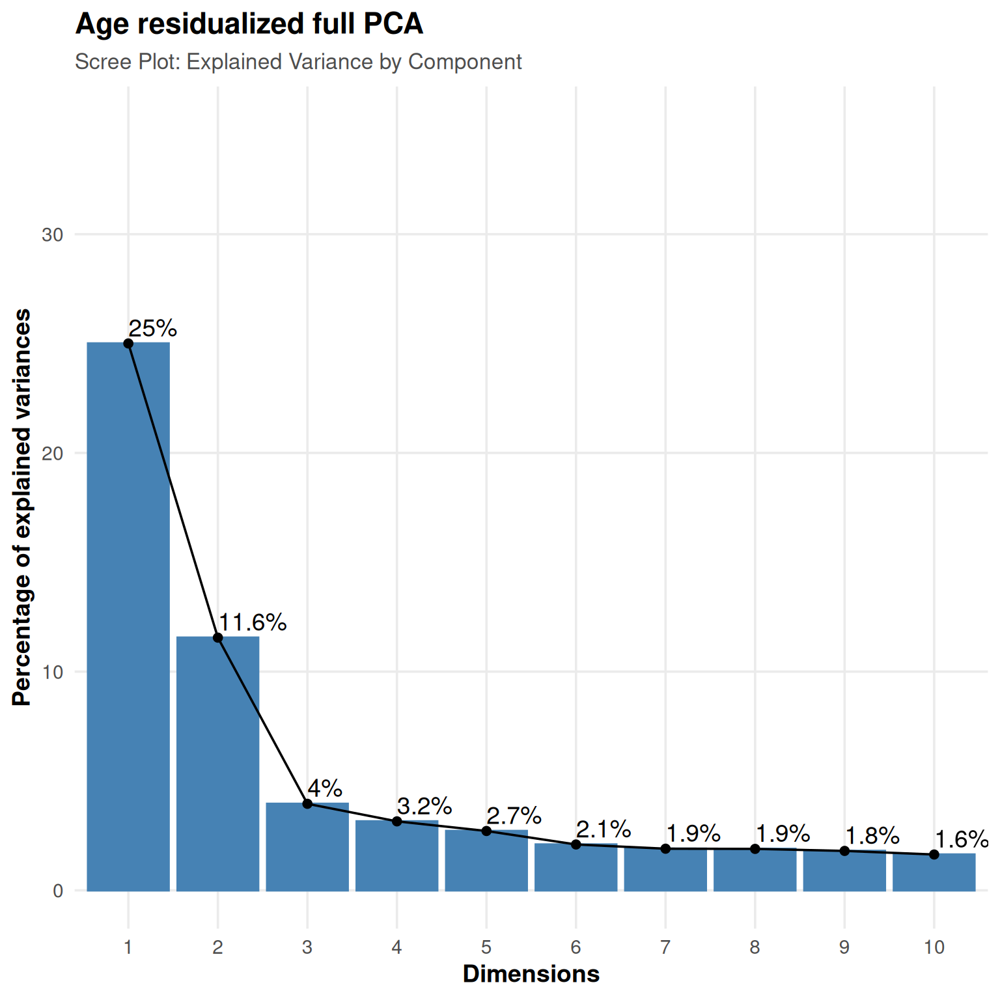
Top Drivers Heatmap
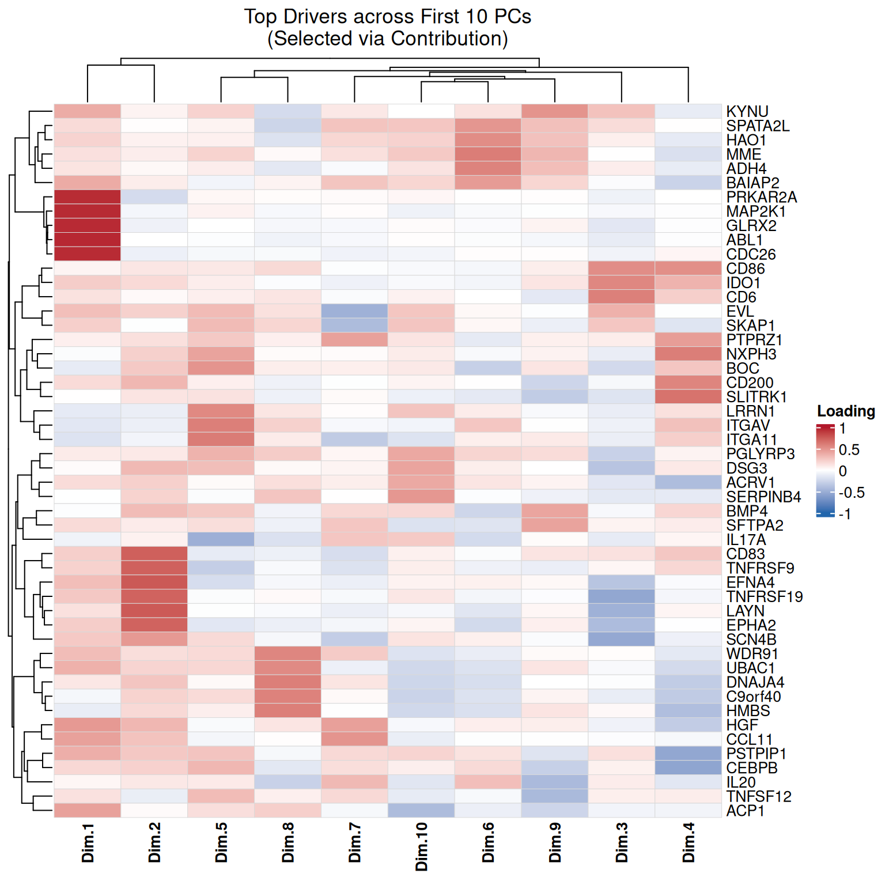
Colored by cohort_group
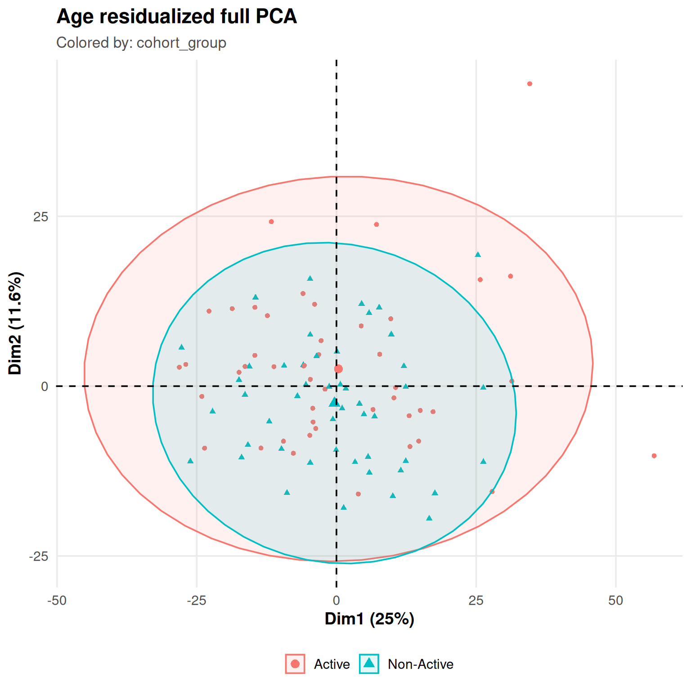
Colored by Sex
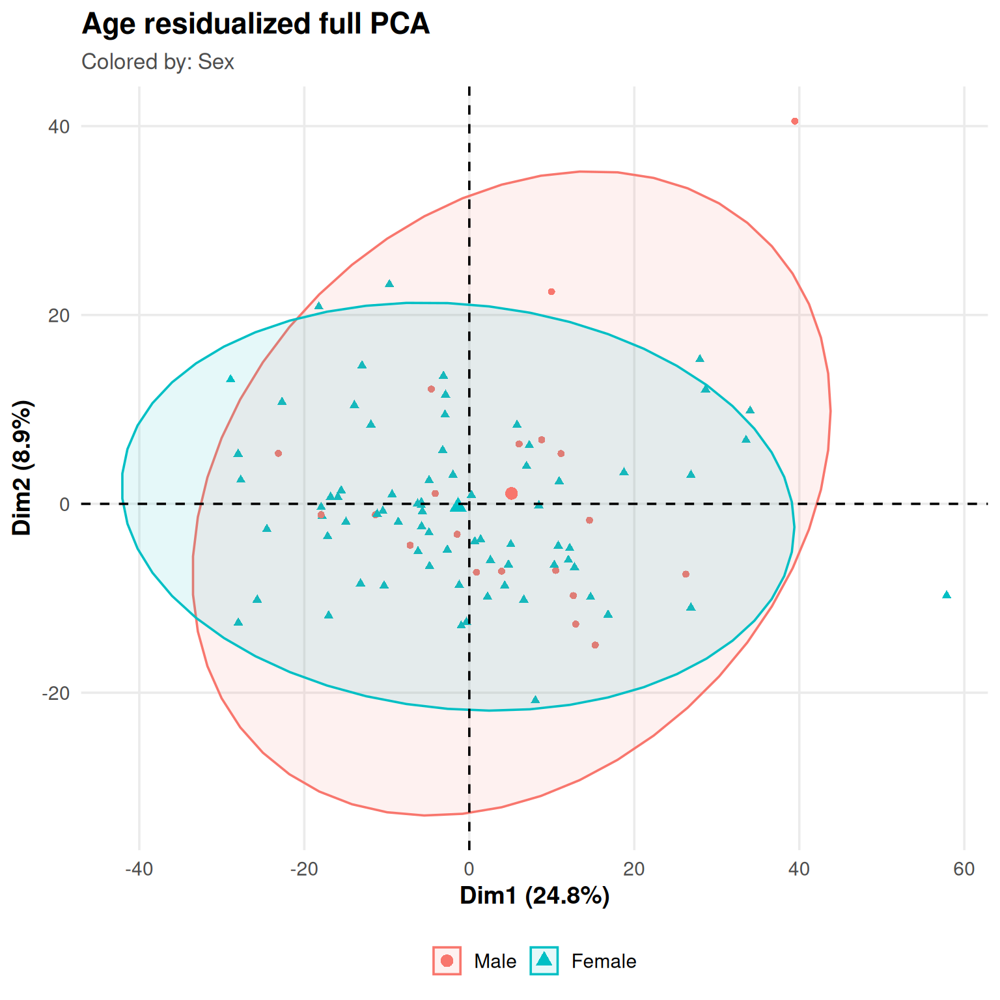
SSc subset PCA
Scree Plot
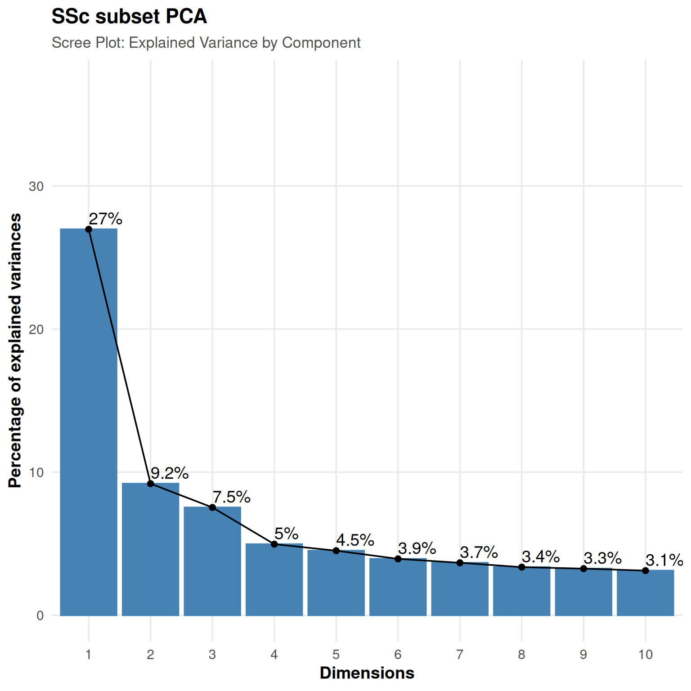
Top Drivers Heatmap
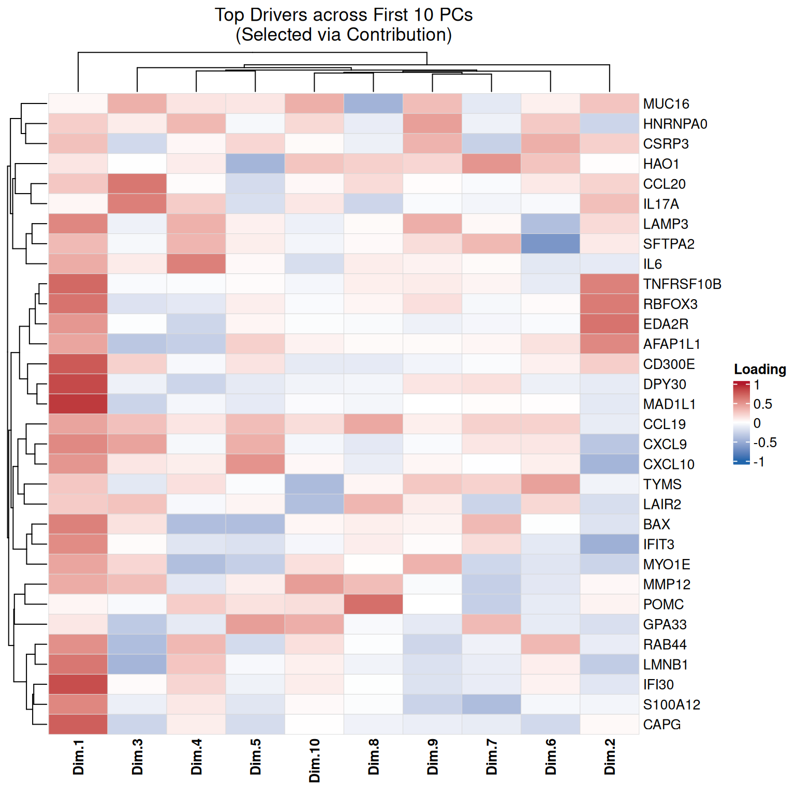
Colored by cohort_group
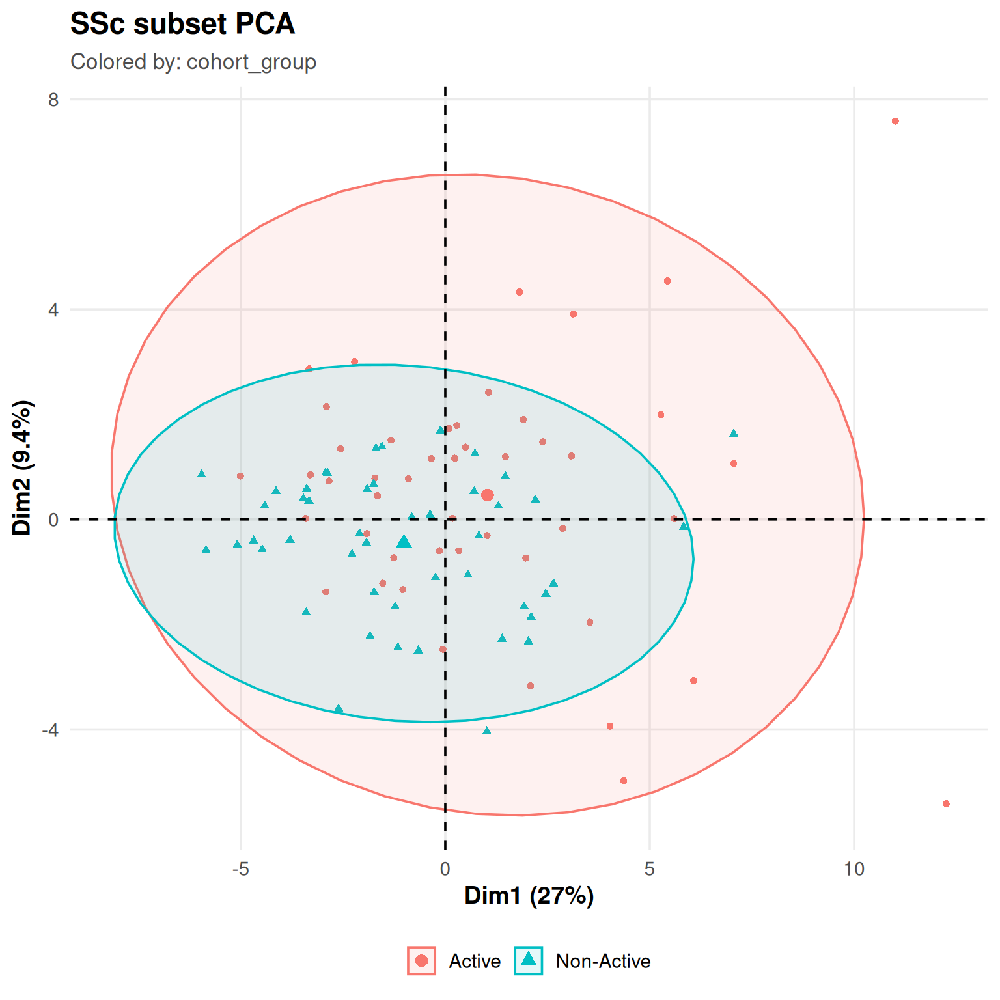
Colored by Sex
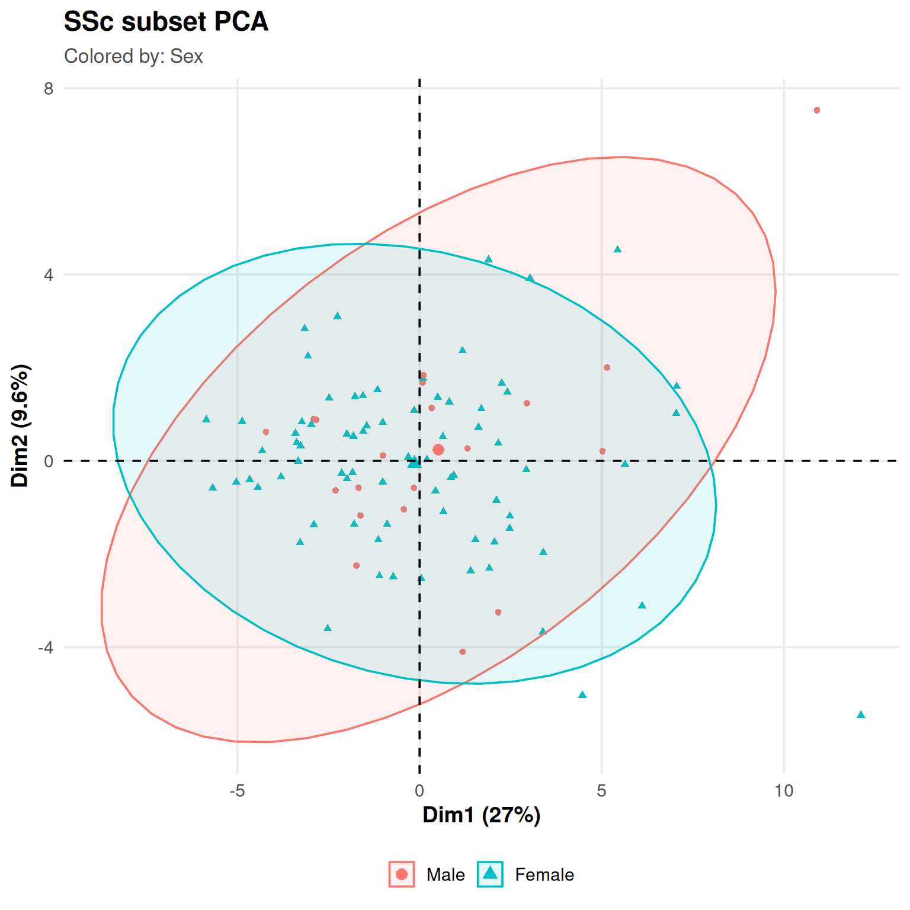
Correlation Engine
- Cross-references every X variable against every Y variable without generating any visuals.
- Filters out variables with zero variance and skips sparse pairwise comparisons (< 10 valid patients).
- Evaluates datatypes on the fly to route features to Spearman, Kruskal-Wallis/Wilcoxon, or Chi-Square tests.
- Outputs a master list containing the FDR-corrected math tables, and generates a diagnostic plain-text audit for each job.
# --- Helper to Fetch Agnostic Data (Used in Phase 3 & 4) ---
get_axis_data <- function(source, id, vars) {
dropped_vars <- character(0)
if (source == "clinical") {
df <- master_spine
if (!is.null(vars)) {
dropped_vars <- setdiff(vars, colnames(df))
df <- df %>% select(Subject_ID, any_of(vars))
}
return(list(data = df, missing_vars = dropped_vars))
} else if (source == "matrix") {
mat <- prepared_matrices[[id]]
if (is.null(mat)) stop(sprintf("FATAL: Matrix '%s' not found.", id))
if (!is.null(vars)) {
dropped_vars <- setdiff(vars, rownames(mat))
mat <- mat[intersect(rownames(mat), vars), , drop=FALSE]
}
df <- as.data.frame(t(mat)) %>% rownames_to_column("Subject_ID")
return(list(data = df, missing_vars = dropped_vars))
} else if (source == "pca") {
mat <- pca_results[[id]]
if (is.null(mat)) stop(sprintf("FATAL: PCA '%s' not found.", id))
if (!is.null(vars)) {
dropped_vars <- setdiff(vars, rownames(mat))
mat <- mat[intersect(rownames(mat), vars), , drop=FALSE]
}
df <- as.data.frame(t(mat)) %>% rownames_to_column("Subject_ID")
return(list(data = df, missing_vars = dropped_vars))
}
}
# --- Execution Loop ---
stats_payloads <- list()
for (job_id in names(cor_configs)) {
conf <- cor_configs[[job_id]]
cat(sprintf("\n\n## %s Audit\n\n", conf$title))
# Fetch data and missing variable logs
x_obj <- get_axis_data(conf$x$source, conf$x$id, conf$x$vars)
y_obj <- get_axis_data(conf$y$source, conf$y$id, conf$y$vars)
df_x <- x_obj$data
df_y <- y_obj$data
start_x_vars <- setdiff(colnames(df_x), "Subject_ID")
start_y_vars <- setdiff(colnames(df_y), "Subject_ID")
common_ids <- intersect(df_x$Subject_ID, df_y$Subject_ID)
# Track which subjects are being dropped due to the intersect
dropped_subjects_x <- setdiff(df_x$Subject_ID, common_ids)
dropped_subjects_y <- setdiff(df_y$Subject_ID, common_ids)
df_x <- df_x %>% filter(Subject_ID %in% common_ids) %>% arrange(Subject_ID)
df_y <- df_y %>% filter(Subject_ID %in% common_ids) %>% arrange(Subject_ID)
# --- Zero Variance Detection ---
zero_var_x <- start_x_vars[sapply(start_x_vars, function(v) length(unique(na.omit(df_x[[v]]))) < 2)]
zero_var_y <- start_y_vars[sapply(start_y_vars, function(v) length(unique(na.omit(df_y[[v]]))) < 2)]
x_vars <- setdiff(start_x_vars, zero_var_x)
y_vars <- setdiff(start_y_vars, zero_var_y)
results_list <- list()
comparisons_skipped_na <- 0
for (x_col in x_vars) {
for (y_col in y_vars) {
vx <- df_x[[x_col]]; vy <- df_y[[y_col]]
valid_idx <- complete.cases(vx, vy)
vx <- vx[valid_idx]; vy <- vy[valid_idx]
if (length(vx) < 10) {
comparisons_skipped_na <- comparisons_skipped_na + 1
next
}
type_x <- if(is.numeric(vx)) "num" else "cat"
type_y <- if(is.numeric(vy)) "num" else "cat"
eff <- NA; pval <- NA; method <- NA
if (type_x == "num" && type_y == "num") {
ct <- tryCatch(cor.test(vx, vy, method="spearman", exact=FALSE), error=function(e) NULL)
if (!is.null(ct)) { eff <- ct$estimate; pval <- ct$p.value; method <- "Spearman" }
} else if (type_x != type_y) {
num_v <- if(type_x == "num") vx else vy
cat_v <- as.factor(if(type_x == "cat") vx else vy)
if (length(levels(cat_v)) == 2) {
wt <- tryCatch(wilcox.test(num_v ~ cat_v), error=function(e) NULL)
if (!is.null(wt)) {
eff <- abs(qnorm(wt$p.value / 2)) / sqrt(length(num_v))
pval <- wt$p.value; method <- "Wilcoxon"
}
} else if (length(levels(cat_v)) > 2) {
kw <- tryCatch(kruskal.test(num_v ~ cat_v), error=function(e) NULL)
if (!is.null(kw)) { pval <- kw$p.value; method <- "Kruskal-Wallis" }
}
} else {
tbl <- table(as.factor(vx), as.factor(vy))
cq <- tryCatch(chisq.test(tbl), error=function(e) NULL)
if (!is.null(cq)) {
eff <- sqrt(cq$statistic / (sum(tbl) * (min(dim(tbl)) - 1)))
pval <- cq$p.value; method <- "Chi-Square"
}
}
if (!is.na(pval)) {
results_list[[length(results_list) + 1]] <- data.frame(
X_Var = x_col, Y_Var = y_col, Effect_Size = as.numeric(eff),
P_Value = as.numeric(pval), Method = method, stringsAsFactors = FALSE
)
}
}
}
sig_hits <- 0
if (length(results_list) > 0) {
master_tbl <- bind_rows(results_list) %>% mutate(FDR = p.adjust(P_Value, method = "BH")) %>% arrange(FDR)
write_csv(master_tbl, file.path(output_dir_data, paste0(job_id, "_Correlations.csv")))
stats_payloads[[job_id]] <- master_tbl
sig_hits <- sum(master_tbl$FDR < conf$fdr_cutoff)
}
# --- Print Plain-Text Audit Box ---
missing_x_str <- if(length(x_obj$missing_vars) > 0) paste(x_obj$missing_vars, collapse=", ") else "None"
missing_y_str <- if(length(y_obj$missing_vars) > 0) paste(y_obj$missing_vars, collapse=", ") else "None"
drop_subj_x_str <- if(length(dropped_subjects_x) > 0) paste(dropped_subjects_x, collapse=", ") else "None"
drop_subj_y_str <- if(length(dropped_subjects_y) > 0) paste(dropped_subjects_y, collapse=", ") else "None"
zero_x_str <- if(length(zero_var_x) > 0) paste(zero_var_x, collapse=", ") else "None"
zero_y_str <- if(length(zero_var_y) > 0) paste(zero_var_y, collapse=", ") else "None"
audit_text <- sprintf(
"--- DATA ALIGNMENT ---\n Intersected Patients: %d\n Dropped from X-Axis: %s\n Dropped from Y-Axis: %s\n\n--- VARIABLE EXTRACTION ---\n X-Axis Target: %d variables extracted from '%s'\n Y-Axis Target: %d variables extracted from '%s'\n Requested but missing (X): %s\n Requested but missing (Y): %s\n Dropped due to Zero Variance (X): %s\n Dropped due to Zero Variance (Y): %s\n\n--- STATISTICAL PERFORMANCE ---\n Pairwise tests calculated: %d\n Pairwise tests skipped (N < 10): %d\n Significant Hits (FDR < %s): %d\n------------------------------------------------\n",
length(common_ids),
drop_subj_x_str, drop_subj_y_str,
length(start_x_vars), conf$x$source,
length(start_y_vars), conf$y$source,
missing_x_str, missing_y_str,
zero_x_str, zero_y_str,
length(results_list), comparisons_skipped_na,
conf$fdr_cutoff, sig_hits
)
cat(audit_text, "\n")
}Age residualized full PCA vs all Clinical Parameters Audit
— DATA ALIGNMENT — Intersected Patients: 95 Dropped from X-Axis: None Dropped from Y-Axis: Ctrl_30, Ctrl_5, Ctrl_1, Ctrl_34, Ctrl_7, Ctrl_2, Ctrl_21, Ctrl_8, Ctrl_23, Ctrl_9, Ctrl_33, Ctrl_14, Ctrl_3, Ctrl_12, Ctrl_18, Ctrl_19, Ctrl_15, Ctrl_24, Ctrl_22, Ctrl_28, Ctrl_26, Ctrl_25, Ctrl_29, Ctrl_20, Ctrl_16, Ctrl_13, Ctrl_6, Ctrl_31, Ctrl_17, Ctrl_11, Ctrl_27, Ctrl_4, Ctrl_35, Ctrl_32, Ctrl_10
— VARIABLE EXTRACTION — X-Axis Target: 10 variables extracted from ‘pca’ Y-Axis Target: 170 variables extracted from ‘clinical’ Requested but missing (X): None Requested but missing (Y): None Dropped due to Zero Variance (X): None Dropped due to Zero Variance (Y): Buffy-coat, Number of puffy fingers, Capillaroscopy Score, Score : Raynaud phenomenon, SSc Antibody Score, Patients eligible, SELECTED
— STATISTICAL PERFORMANCE — Pairwise tests calculated: 1630 Pairwise tests skipped (N < 10): 0 Significant Hits (FDR < 0.05): 35 ————————————————
Age residualized full Proteomics vs all Clinical Parameters Audit
— DATA ALIGNMENT — Intersected Patients: 95 Dropped from X-Axis: None Dropped from Y-Axis: Ctrl_30, Ctrl_5, Ctrl_1, Ctrl_34, Ctrl_7, Ctrl_2, Ctrl_21, Ctrl_8, Ctrl_23, Ctrl_9, Ctrl_33, Ctrl_14, Ctrl_3, Ctrl_12, Ctrl_18, Ctrl_19, Ctrl_15, Ctrl_24, Ctrl_22, Ctrl_28, Ctrl_26, Ctrl_25, Ctrl_29, Ctrl_20, Ctrl_16, Ctrl_13, Ctrl_6, Ctrl_31, Ctrl_17, Ctrl_11, Ctrl_27, Ctrl_4, Ctrl_35, Ctrl_32, Ctrl_10
— VARIABLE EXTRACTION — X-Axis Target: 1034 variables extracted from ‘matrix’ Y-Axis Target: 170 variables extracted from ‘clinical’ Requested but missing (X): None Requested but missing (Y): None Dropped due to Zero Variance (X): None Dropped due to Zero Variance (Y): Buffy-coat, Number of puffy fingers, Capillaroscopy Score, Score : Raynaud phenomenon, SSc Antibody Score, Patients eligible, SELECTED
— STATISTICAL PERFORMANCE — Pairwise tests calculated: 168542 Pairwise tests skipped (N < 10): 0 Significant Hits (FDR < 0.05): 304 ————————————————
Age residualized SSc PCA vs all Clinical Parameters Audit
— DATA ALIGNMENT — Intersected Patients: 95 Dropped from X-Axis: None Dropped from Y-Axis: Ctrl_30, Ctrl_5, Ctrl_1, Ctrl_34, Ctrl_7, Ctrl_2, Ctrl_21, Ctrl_8, Ctrl_23, Ctrl_9, Ctrl_33, Ctrl_14, Ctrl_3, Ctrl_12, Ctrl_18, Ctrl_19, Ctrl_15, Ctrl_24, Ctrl_22, Ctrl_28, Ctrl_26, Ctrl_25, Ctrl_29, Ctrl_20, Ctrl_16, Ctrl_13, Ctrl_6, Ctrl_31, Ctrl_17, Ctrl_11, Ctrl_27, Ctrl_4, Ctrl_35, Ctrl_32, Ctrl_10
— VARIABLE EXTRACTION — X-Axis Target: 10 variables extracted from ‘pca’ Y-Axis Target: 170 variables extracted from ‘clinical’ Requested but missing (X): None Requested but missing (Y): None Dropped due to Zero Variance (X): None Dropped due to Zero Variance (Y): Buffy-coat, Number of puffy fingers, Capillaroscopy Score, Score : Raynaud phenomenon, SSc Antibody Score, Patients eligible, SELECTED
— STATISTICAL PERFORMANCE — Pairwise tests calculated: 1630 Pairwise tests skipped (N < 10): 0 Significant Hits (FDR < 0.05): 31 ————————————————
Age Residualized SSc Proteomics vs all Clinical Parameters Audit
— DATA ALIGNMENT — Intersected Patients: 95 Dropped from X-Axis: None Dropped from Y-Axis: Ctrl_30, Ctrl_5, Ctrl_1, Ctrl_34, Ctrl_7, Ctrl_2, Ctrl_21, Ctrl_8, Ctrl_23, Ctrl_9, Ctrl_33, Ctrl_14, Ctrl_3, Ctrl_12, Ctrl_18, Ctrl_19, Ctrl_15, Ctrl_24, Ctrl_22, Ctrl_28, Ctrl_26, Ctrl_25, Ctrl_29, Ctrl_20, Ctrl_16, Ctrl_13, Ctrl_6, Ctrl_31, Ctrl_17, Ctrl_11, Ctrl_27, Ctrl_4, Ctrl_35, Ctrl_32, Ctrl_10
— VARIABLE EXTRACTION — X-Axis Target: 42 variables extracted from ‘matrix’ Y-Axis Target: 170 variables extracted from ‘clinical’ Requested but missing (X): None Requested but missing (Y): None Dropped due to Zero Variance (X): None Dropped due to Zero Variance (Y): Buffy-coat, Number of puffy fingers, Capillaroscopy Score, Score : Raynaud phenomenon, SSc Antibody Score, Patients eligible, SELECTED
— STATISTICAL PERFORMANCE — Pairwise tests calculated: 6846 Pairwise tests skipped (N < 10): 0 Significant Hits (FDR < 0.05): 185 ————————————————
Visualization
- Ranks results by Pi-Score to identify the strongest biological and statistical drivers.
- Generates an uncensored ‘Top Hits’ ComplexHeatmap, muting non-significant intersections.
- Generates a fully interactive Javascript Dropdown Menu to explore individual Clinical Domains.
- Stitches a dynamic grid of Scatters/Boxplots/Bars (Micro View) based on real-time datatype evaluations.
for (job_id in names(cor_configs)) {
conf <- cor_configs[[job_id]]
plot_conf <- conf$plotting
master_tbl <- stats_payloads[[job_id]]
if (is.null(master_tbl)) next
cat(sprintf("\n\n## %s \n\n", conf$title))
# Calculate Pi-Score: |Effect Size| * -log10(FDR)
# Adding a tiny epsilon to FDR prevents log10(0) returning Inf
master_tbl <- master_tbl %>%
mutate(Pi_Score = abs(Effect_Size) * -log10(FDR + 1e-300))
# THE FIX: Removed the global while (!is.null(dev.list())) dev.off()
# RMarkdown knitr automatically handles the graphics devices between chunks and loops.
col_fun <- circlize::colorRamp2(c(-1, 0, 1), c(HM_Z_LOW, HM_Z_MID, HM_Z_HIGH))
# --- MACRO VIEW 1: TOP HITS HEATMAP ---
cat("\n\n### Macro View (Top Hits)\n\n")
top_x <- master_tbl %>% group_by(X_Var) %>% summarize(max_pi = max(Pi_Score, na.rm=TRUE)) %>% top_n(plot_conf$max_heatmap_features, max_pi) %>% pull(X_Var)
top_y <- master_tbl %>% group_by(Y_Var) %>% summarize(max_pi = max(Pi_Score, na.rm=TRUE)) %>% top_n(plot_conf$max_heatmap_features, max_pi) %>% pull(Y_Var)
sub_tbl <- master_tbl %>% filter(X_Var %in% top_x, Y_Var %in% top_y)
if (nrow(sub_tbl) > 0) {
wide_eff <- sub_tbl %>% select(X_Var, Y_Var, Effect_Size) %>% pivot_wider(names_from = X_Var, values_from = Effect_Size, values_fill = 0) %>% column_to_rownames("Y_Var")
wide_fdr <- sub_tbl %>% select(X_Var, Y_Var, FDR) %>% pivot_wider(names_from = X_Var, values_from = FDR, values_fill = 1) %>% column_to_rownames("Y_Var")
mat_eff <- as.matrix(wide_eff)
mat_fdr <- as.matrix(wide_fdr)
mat_plot <- mat_eff
mat_plot[mat_fdr >= conf$fdr_cutoff] <- NA
# Safely determine clustering based on dimensions
row_clust_top <- if(nrow(mat_eff) > 1 && !any(rowSums(is.na(mat_eff)) == ncol(mat_eff))) hclust(dist(mat_eff), method="ward.D2") else FALSE
col_clust_top <- if(ncol(mat_eff) > 1 && !any(colSums(is.na(mat_eff)) == nrow(mat_eff))) hclust(dist(t(mat_eff)), method="ward.D2") else FALSE
ht_top <- ComplexHeatmap::Heatmap(
mat_plot,
name = "Effect Size",
column_title = sprintf("Global Top Hits (Max %dx%d via Pi-Score)\nBlank/Grey indicates FDR ≥ %s",
plot_conf$max_heatmap_features, plot_conf$max_heatmap_features, conf$fdr_cutoff),
na_col = "gray93",
cluster_rows = row_clust_top,
cluster_columns = col_clust_top,
show_row_dend = if(is.logical(row_clust_top)) FALSE else TRUE,
show_column_dend = if(is.logical(col_clust_top)) FALSE else TRUE,
row_names_gp = grid::gpar(fontsize = 10, fontface = "bold"),
column_names_gp = grid::gpar(fontsize = 10, fontface = "bold"),
column_names_rot = 45,
col = col_fun,
cell_fun = function(j, i, x, y, width, height, fill) {
grid.rect(x = x, y = y, width = width, height = height,
gp = gpar(col = "grey60", fill = NA))
}
)
ComplexHeatmap::draw(ht_top)
} else {
cat("> Insufficient significant correlations to generate Top Hits heatmap.\n")
}
cat("\n\n")
# --- MACRO VIEW 2: DOMAIN DRILL-DOWN (HTML DROPDOWN) ---
if (conf$y$source == "clinical" && isTRUE(plot_conf$enable_clinical_dropdown)) {
cat("\n\n### Domain Atlas (Dropdown)\n\n")
domain_lists <- clinical_domains
domain_lists[["SSc_Parameters"]] <- ssc_clinical_parameters
dropdown_options <- c()
safe_job <- gsub("[^A-Za-z0-9_.-]", "_", job_id)
for (dom_name in names(domain_lists)) {
dom_vars <- domain_lists[[dom_name]]
dom_tbl <- master_tbl %>% filter(Y_Var %in% dom_vars)
if(nrow(dom_tbl) == 0) next
dom_top_x <- dom_tbl %>% group_by(X_Var) %>% summarize(max_pi = max(Pi_Score, na.rm=TRUE)) %>% top_n(plot_conf$max_heatmap_features, max_pi) %>% pull(X_Var)
dom_tbl <- dom_tbl %>% filter(X_Var %in% dom_top_x)
d_wide_eff <- dom_tbl %>% select(X_Var, Y_Var, Effect_Size) %>% pivot_wider(names_from = X_Var, values_from = Effect_Size, values_fill = 0) %>% column_to_rownames("Y_Var")
d_wide_fdr <- dom_tbl %>% select(X_Var, Y_Var, FDR) %>% pivot_wider(names_from = X_Var, values_from = FDR, values_fill = 1) %>% column_to_rownames("Y_Var")
d_mat_eff <- as.matrix(d_wide_eff)
d_mat_fdr <- as.matrix(d_wide_fdr)
d_mat_plot <- d_mat_eff
d_mat_plot[d_mat_fdr >= conf$fdr_cutoff] <- NA
# Safely determine clustering based on dimensions
row_clust_dom <- if(nrow(d_mat_eff) > 1 && !any(rowSums(is.na(d_mat_eff)) == ncol(d_mat_eff))) hclust(dist(d_mat_eff), method="ward.D2") else FALSE
col_clust_dom <- if(ncol(d_mat_eff) > 1 && !any(colSums(is.na(d_mat_eff)) == nrow(d_mat_eff))) hclust(dist(t(d_mat_eff)), method="ward.D2") else FALSE
ht_dom <- ComplexHeatmap::Heatmap(
d_mat_plot,
name = "Effect Size",
column_title = sprintf("Domain: %s", gsub("_", " ", dom_name)),
na_col = "gray93",
cluster_rows = row_clust_dom,
cluster_columns = col_clust_dom,
show_row_dend = if(is.logical(row_clust_dom)) FALSE else TRUE,
show_column_dend = if(is.logical(col_clust_dom)) FALSE else TRUE,
row_names_gp = grid::gpar(fontsize = 10, fontface = "bold"),
column_names_gp = grid::gpar(fontsize = 10, fontface = "bold"),
column_names_rot = 45,
col = col_fun,
cell_fun = function(j, i, x, y, width, height, fill) {
grid.rect(x = x, y = y, width = width, height = height,
gp = gpar(col = "grey60", fill = NA))
}
)
img_name <- paste0(safe_job, "_domain_", dom_name, ".png")
img_path <- file.path(output_dir_data, img_name)
dyn_h <- max(6, nrow(d_mat_eff) * 0.3 + 2)
png(img_path, width = 12, height = dyn_h, units = "in", res = 300)
ComplexHeatmap::draw(ht_dom)
dev.off()
dropdown_options[[dom_name]] <- img_name
}
if (length(dropdown_options) > 0) {
first_img <- dropdown_options[[1]]
cat(sprintf('<select id="sel_%s" onchange="switchDom_%s()" class="form-control" style="width: auto; margin-bottom: 20px;">\n', safe_job, safe_job))
for (dom_name in names(dropdown_options)) {
cat(sprintf(' <option value="../output/%s/%s">%s</option>\n', current_file, dropdown_options[[dom_name]], gsub("_", " ", dom_name)))
}
cat('</select>\n\n')
cat(sprintf('<div id="container_%s">\n', safe_job))
cat(sprintf(' <img id="img_%s" src="../output/%s/%s" style="width: 100%%; border: 1px solid #ddd; border-radius: 8px;">\n', safe_job, current_file, first_img))
cat('</div>\n\n')
cat('<script>\n')
cat(sprintf('function switchDom_%s() {\n', safe_job))
cat(sprintf(' var val = document.getElementById("sel_%s").value;\n', safe_job))
cat(sprintf(' document.getElementById("img_%s").src = val;\n', safe_job))
cat('}\n')
cat('</script>\n\n')
} else {
cat("> No significant domain-specific correlations found.\n")
}
cat("\n\n")
}
# --- MICRO VIEW (DASHBOARD) ---
cat("\n\n### Micro View (Dashboard)\n\n")
df_x <- get_axis_data(conf$x$source, conf$x$id, conf$x$vars)$data
df_y <- get_axis_data(conf$y$source, conf$y$id, conf$y$vars)$data
top_hits <- master_tbl %>% filter(FDR < conf$fdr_cutoff) %>% head(plot_conf$top_n_micro_plots)
must_inc <- master_tbl %>% filter(FDR < conf$fdr_cutoff) %>%
filter(X_Var %in% plot_conf$must_include_x_vars | Y_Var %in% plot_conf$must_include_y_vars)
plot_targets <- bind_rows(top_hits, must_inc) %>% distinct(X_Var, Y_Var, .keep_all = TRUE)
if (nrow(plot_targets) > 0) {
micro_plots <- list()
for (i in 1:nrow(plot_targets)) {
x_col <- as.character(plot_targets$X_Var[[i]])
y_col <- as.character(plot_targets$Y_Var[[i]])
plot_df <- inner_join(
df_x %>% select(Subject_ID, X_Val = all_of(x_col)),
df_y %>% select(Subject_ID, Y_Val = all_of(y_col)),
by = "Subject_ID"
) %>% drop_na()
type_x <- if(is.numeric(plot_df$X_Val)) "num" else "cat"
type_y <- if(is.numeric(plot_df$Y_Val)) "num" else "cat"
sub_text <- sprintf("Effect: %.2f | FDR: %.3e", plot_targets$Effect_Size[i], plot_targets$FDR[i])
if (type_x == "num" && type_y == "num") {
p <- ggplot(plot_df, aes(x = X_Val, y = Y_Val)) +
geom_point(alpha = 0.6, color = "#2c3e50", size = 2) +
geom_smooth(method = "lm", color = "#c0392b", fill = "grey80", alpha = 0.5) +
theme_project_base(12) + labs(title = sprintf("%s vs %s", y_col, x_col), subtitle = sub_text, x = x_col, y = y_col)
} else if (type_x != type_y) {
cat_name <- if(type_x == "cat") x_col else y_col
num_name <- if(type_x == "num") x_col else y_col
plot_df_mixed <- plot_df %>% mutate(Cat_Val = as.factor(if(type_x == "cat") X_Val else Y_Val), Num_Val = if(type_x == "num") X_Val else Y_Val)
p <- ggplot(plot_df_mixed, aes(x = Cat_Val, y = Num_Val, fill = Cat_Val)) +
geom_boxplot(alpha = 0.6, outlier.shape = NA) +
geom_jitter(width = 0.2, alpha = 0.7, size = 1.5, color = "black") +
theme_project_base(12) + theme(legend.position = "none") +
labs(title = sprintf("%s by %s", num_name, cat_name), subtitle = sub_text, x = cat_name, y = num_name)
} else {
plot_df_cat <- plot_df %>% mutate(X_Val = as.factor(X_Val), Y_Val = as.factor(Y_Val))
p <- ggplot(plot_df_cat, aes(x = X_Val, fill = Y_Val)) +
geom_bar(position = "fill", color = "black", alpha = 0.8) +
scale_y_continuous(labels = scales::percent) + theme_project_base(12) +
labs(title = sprintf("%s vs %s", y_col, x_col), subtitle = sub_text, x = x_col, y = "Percentage", fill = y_col)
}
micro_plots[[paste(x_col, y_col)]] <- p
}
n_rows <- ceiling(length(micro_plots) / plot_conf$n_cols)
dyn_height <- max(5, n_rows * 4)
master_grid <- wrap_plots(micro_plots, ncol = plot_conf$n_cols) +
plot_annotation(title = sprintf("Top Drivers: %s", conf$title))
print(master_grid)
safe_job <- gsub("[^A-Za-z0-9_.-]", "_", job_id)
grid_path <- file.path(output_dir_data, paste0(safe_job, "_Micro_Grid.png"))
ggsave(grid_path, master_grid, width = 14, height = dyn_height, dpi = 150, bg = "white")
cat(sprintf("\n\n", grid_path))
} else {
cat("> No significant hits passed the threshold for detailed plotting.\n")
}
cat("\n\n")
}Age residualized full PCA vs all Clinical Parameters
Macro View (Top Hits)
Domain Atlas (Dropdown)
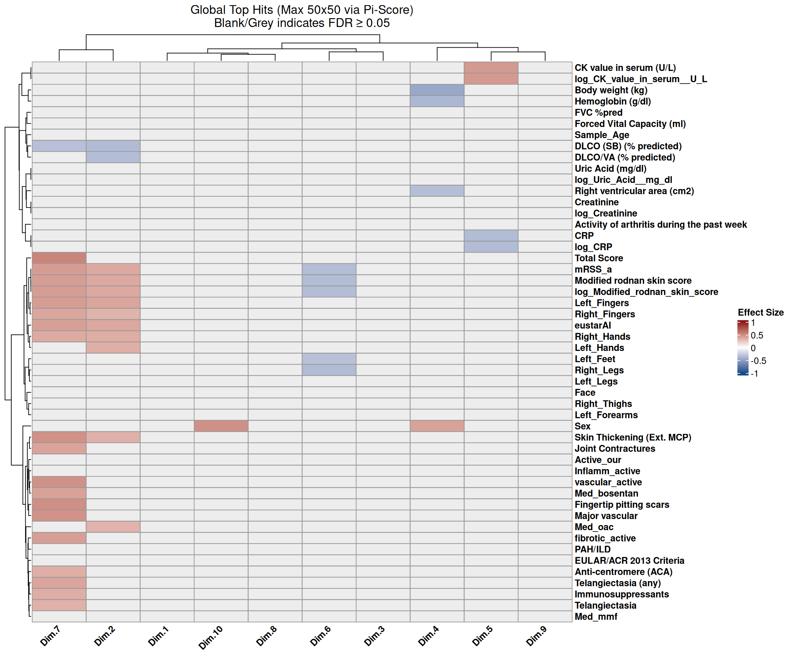


Age residualized full Proteomics vs all Clinical Parameters
Macro View (Top Hits)
Domain Atlas (Dropdown)
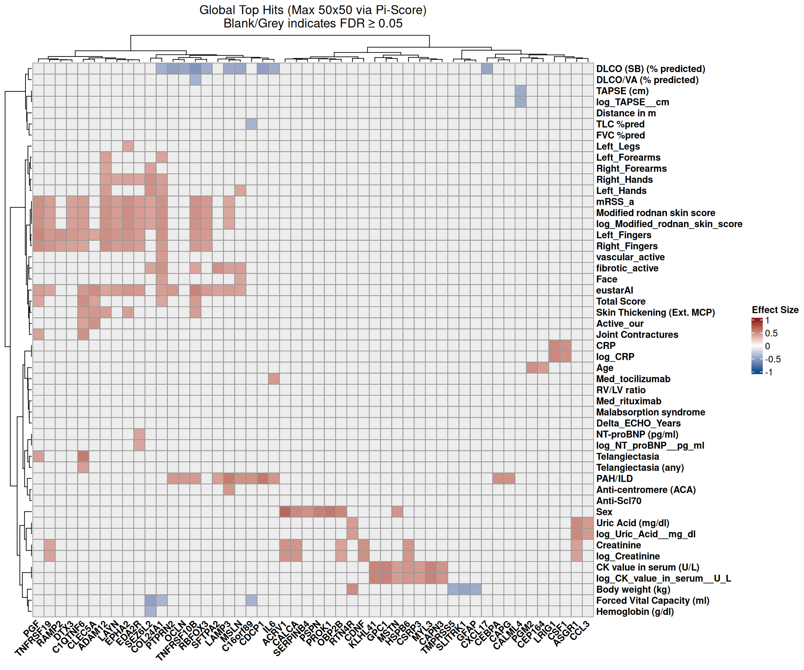


Age residualized SSc PCA vs all Clinical Parameters
Macro View (Top Hits)
Domain Atlas (Dropdown)
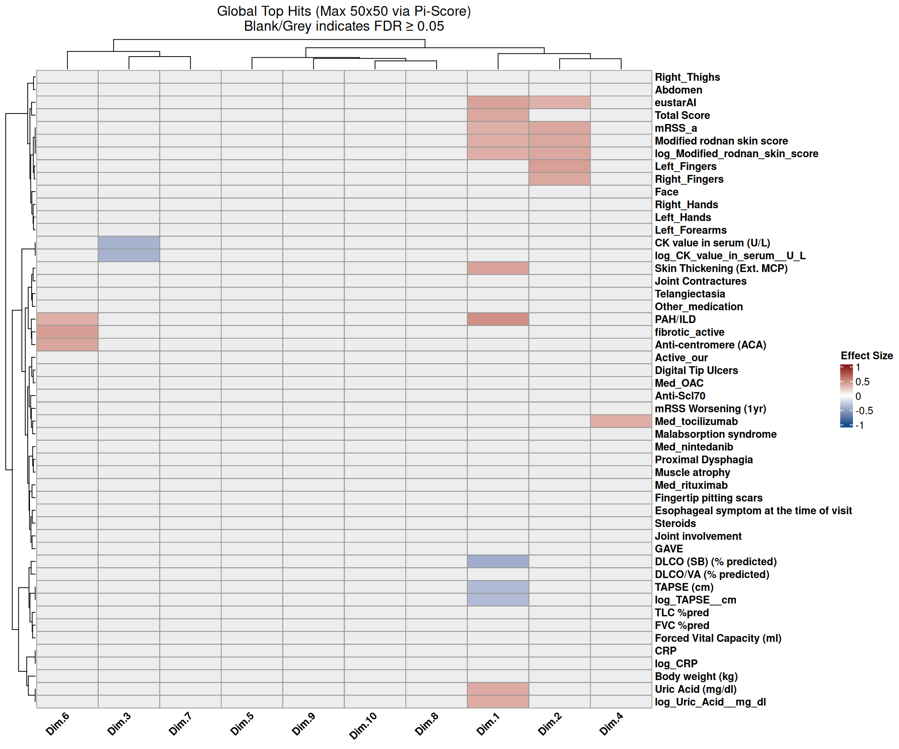


Age Residualized SSc Proteomics vs all Clinical Parameters
Macro View (Top Hits)
Domain Atlas (Dropdown)
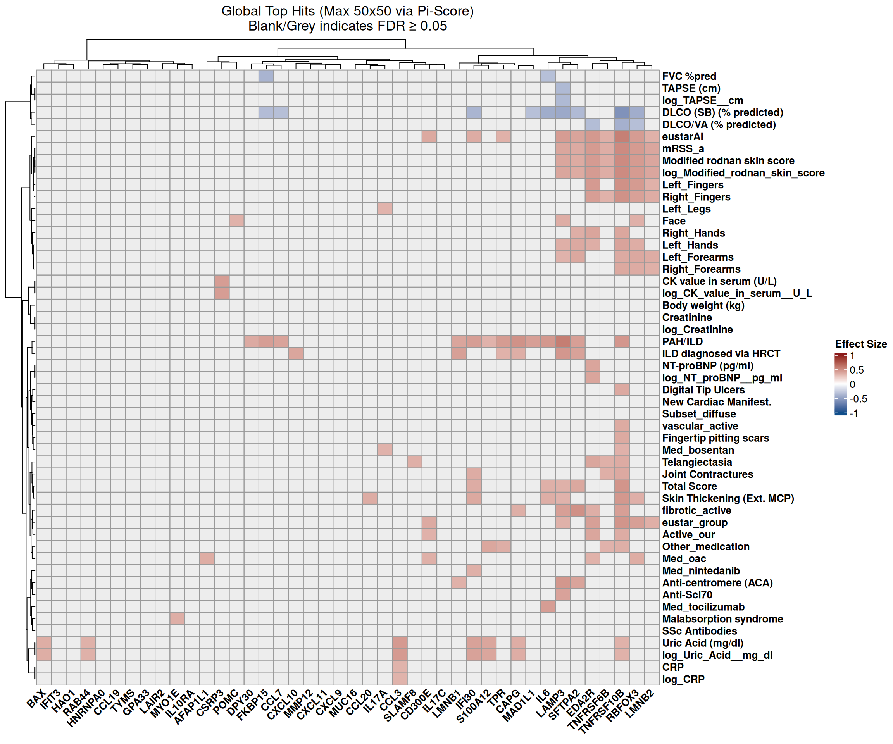


Appendix
- Appended the raw underlying R code from the custom omics engines to the HTML report’s appendix to ensure complete analytical transparency and reproducibility.
# 01_general_engines.R
# Purpose: High-Dimensional Analysis Functions (Agnostic / General Purpose)
# Architecture: Topic-based modules (Wrappers followed by associated Workers).
library(tidyverse)
library(FactoMineR)
library(factoextra)
library(patchwork)
library(glmnet)
library(umap)
library(cluster)
library(dbscan)
library(igraph)
library(missForest)
library(circlize)
library(pheatmap)
library(ComplexHeatmap)
# WRAPPERS 1: Dimensionality Reduction & Utilities ----------------------------------
# 1.1 PCA Pipeline Wrapper
# Description:
# Executes a complete Principal Component Analysis pipeline. It filters data,
# calculates PCA, and saves a suite of dynamically scaled visualizations to PNG,
# returning the ggplot objects and their direct file paths.
# Args:
# omics_mat: Numeric matrix (features in rows, subjects in columns).
# clin_df: Aligned clinical metadata dataframe.
# pca_conf: List of settings (title, subset_to_contrast, color_vars).
# pca_id: String identifier for saving outputs.
# base_output_dir: Path for saving results.
# project_colors_func: Function to map cohort specific hex codes.
# Returns:
# Nested list with 'plots' (ggplot objects) and 'paths' (string file paths).
wrap_pca_pipeline <- function(omics_mat, clin_df, pca_conf, pca_id, base_output_dir, project_colors_func) {
# Setup Directories
pca_base_dir <- file.path(base_output_dir, "PCA")
pca_sub_dir <- file.path(pca_base_dir, pca_id)
if (!dir.exists(pca_sub_dir)) dir.create(pca_sub_dir, recursive = TRUE)
# Data Filtering & Subset
if (!is.null(pca_conf$subset_to_contrast)) {
target_col <- pca_conf$subset_to_contrast$group_col
target_lvls <- pca_conf$subset_to_contrast$target_groups
clin_df <- clin_df %>% filter(!!sym(target_col) %in% target_lvls)
}
valid_barcodes <- intersect(colnames(omics_mat), clin_df$Subject_ID)
clin_df <- clin_df %>% filter(Subject_ID %in% valid_barcodes)
mat_sub <- omics_mat[, clin_df$Subject_ID, drop = FALSE]
# PCA Calculation
pca_res <- FactoMineR::PCA(t(mat_sub), scale.unit = TRUE, graph = FALSE)
plots <- list()
paths <- list() # Store paths for HTML rendering
# --- AESTHETIC REFACTOR: TITLE WRAPPING ---
# We wrap the main title at ~55 characters so it never overflows.
wrapped_main_title <- stringr::str_wrap(pca_conf$title, width = 55)
# Generate Individual Plots
plots[["scree"]] <- fviz_eig(pca_res, addlabels = TRUE) +
theme_project_base() +
labs(title = sprintf("%s: Variance Explained (Scree)", wrapped_main_title))
plots[["loadings"]] <- fviz_pca_var(pca_res, select.var = list(contrib = 30),
col.var = "contrib",
gradient.cols = c("#00AFBB", "#E7B800", "#FC4E07"),
repel = TRUE) +
theme_project_base() +
guides(colour = guide_colorbar(barwidth = unit(8, "cm"), barheight = unit(0.3, "cm"))) +
labs(title = sprintf("%s: PCA Loadings (Top 30)", wrapped_main_title))
plots[["pc1_drivers"]] <- fviz_contrib(pca_res, choice = "var", axes = 1, top = 10, fill = "grey30", color = "grey30") +
theme_project_base() + coord_flip() + labs(title = "Top PC1 Drivers")
plots[["pc2_drivers"]] <- fviz_contrib(pca_res, choice = "var", axes = 2, top = 10, fill = "grey30", color = "grey30") +
theme_project_base() + coord_flip() + labs(title = "Top PC2 Drivers")
# Variable Overlays (Individual and Merged)
overlay_plots_for_grid <- list()
for (c_var in pca_conf$color_vars) {
if (!(c_var %in% colnames(clin_df))) next
# --- AESTHETIC REFACTOR: SPLIT TITLE/SUBTITLE ---
# Failsafe: Replicate design decision for interactive viewing
interact_main_title <- stringr::str_wrap(pca_conf$title, width = 50)
interact_labs_list <- labs(title = interact_main_title, subtitle = paste("Colored by:", c_var))
clean_vec <- clin_df[[c_var]][!is.na(clin_df[[c_var]])]
if (length(clean_vec) == 0) next
# A. CONTINUOUS VARIABLE LOGIC (Reverted to Viridis from config)
if (is.numeric(clin_df[[c_var]])) {
cont_pal <- if(exists("FALLBACK_CONT_PALETTE")) FALLBACK_CONT_PALETTE else "viridis"
p <- fviz_pca_ind(pca_res, label = "none", col.ind = clin_df[[c_var]], legend.title = c_var) +
scale_color_viridis_c(option = cont_pal, na.value = "grey85") +
theme_project_base() + interact_labs_list
# B. CATEGORICAL VARIABLE LOGIC
} else {
clin_df[[c_var]] <- as.factor(clin_df[[c_var]])
lvl_names <- levels(clin_df[[c_var]])
mapped_colors <- project_colors_func(lvl_names)
if (all(mapped_colors == "#333333")) {
safe_pal <- if(exists("FALLBACK_CAT_PALETTE")) FALLBACK_CAT_PALETTE else c("#E69F00", "#56B4E9", "#009E73", "#D55E00", "#CC79A7", "#0072B2", "#F0E442", "#999999")
if (length(lvl_names) <= length(safe_pal)) {
mapped_colors <- safe_pal[1:length(lvl_names)]
} else {
mapped_colors <- colorRampPalette(safe_pal)(length(lvl_names))
}
}
p <- fviz_pca_ind(pca_res, label = "none", habillage = clin_df[[c_var]],
palette = mapped_colors,
addEllipses = TRUE) +
theme_project_base() + interact_labs_list
}
plots[[paste0("PCA_Plot_", c_var)]] <- p
# Grid Title Setup (Cleaner than interactive viewer)
overlay_plots_for_grid[[c_var]] <- p + labs(title = wrapped_main_title, subtitle = paste("Colored by:", c_var))
}
# Automated Saving (With filename sanitization)
for (p_name in names(plots)) {
# Sanitize to prevent '%' crashes
safe_p_name <- gsub("%", "pct", p_name)
safe_p_name <- gsub("[^A-Za-z0-9_.-]", "_", safe_p_name)
safe_p_name <- gsub("_+", "_", safe_p_name)
file_path <- file.path(pca_sub_dir, paste0(pca_id, "_", safe_p_name, ".png"))
ggsave(filename = file_path, plot = plots[[p_name]], width = 7, height = 6, dpi = 300, bg = "white")
paths[[p_name]] <- file_path # Store path
}
# Stitch & Save Merged Drivers
driver_grid <- (plots[["pc1_drivers"]] | plots[["pc2_drivers"]]) +
plot_annotation(title = sprintf("%s: PCA Variance Drivers", wrapped_main_title),
tag_levels = 'A', theme = theme(plot.title = element_text(size = 16, face = "bold")))
driver_path <- file.path(pca_sub_dir, paste0(pca_id, "_Merged_Drivers.png"))
ggsave(driver_path, driver_grid, width = 12, height = 6, dpi = 300, bg="white")
plots[["merged_drivers"]] <- driver_grid
paths[["merged_drivers"]] <- driver_path
# Stitch & Save Merged Overlays (Dynamic height!)
if (length(overlay_plots_for_grid) > 0) {
ncol_val <- if(length(overlay_plots_for_grid) > 2) 2 else 1
master_scatter_grid <- wrap_plots(overlay_plots_for_grid, ncol = ncol_val) +
plot_annotation(title = wrapped_main_title, subtitle = "Hierarchical Grid: Metadata Colored Overlays",
tag_levels = 'A', theme = theme(plot.title = element_text(size = 18, face = "bold")))
overlay_path <- file.path(pca_sub_dir, paste0(pca_id, "_Merged_Scatter_Overlays.png"))
# Calculation handles odd number of plots gracefully
ggsave(overlay_path, master_scatter_grid,
width = 14, height = (6 * ceiling(length(overlay_plots_for_grid)/2)), dpi = 300, bg="white")
plots[["merged_overlays"]] <- master_scatter_grid
paths[["merged_overlays"]] <- overlay_path
}
return(list(plots = plots, paths = paths))
}
# 1.2 FAMD PIPELINE (Factor Analysis of Mixed Data)
wrap_famd_pipeline <- function(df, id_col, famd_conf, famd_id, base_output_dir, project_colors_func) {
famd_sub_dir <- file.path(base_output_dir, "FAMD", famd_id)
if (!dir.exists(famd_sub_dir)) dir.create(famd_sub_dir, recursive = TRUE)
clin_data <- as.data.frame(df %>% select(-all_of(id_col)) %>% mutate_if(is.character, as.factor))
rownames(clin_data) <- df[[id_col]]
# FACTOMINER SAFETY PATCH: Ensure globally unique factor levels
for (col in colnames(clin_data)) {
if (is.factor(clin_data[[col]])) levels(clin_data[[col]]) <- paste(col, levels(clin_data[[col]]), sep = "_")
}
max_possible_dims <- min(nrow(clin_data) - 1, ncol(clin_data) * 2)
famd_res <- FAMD(clin_data, graph = FALSE, ncp = min(max_possible_dims, famd_conf$max_dims))
plots <- list(); paths <- list()
wrapped_title <- stringr::str_wrap(famd_conf$title, width = 55)
t_dim <- if(!is.null(famd_conf$top_dim)) min(famd_conf$top_dim, ncol(famd_res$ind$coord)) else 5
cum_var <- famd_res$eig[t_dim, 3]
plots[["scree"]] <- fviz_screeplot(famd_res, addlabels = TRUE) +
theme_project_base() +
geom_vline(xintercept = t_dim + 0.5, linetype = "dashed", color = "firebrick", linewidth = 1) +
annotate("text", x = t_dim + 0.3, y = max(famd_res$eig[, 2]) * 0.8, label = sprintf("Cutoff (Dim %d)\nIncluded Var: %.1f%%", t_dim, cum_var), color = "firebrick", fontface = "bold", hjust = 0) +
labs(title = sprintf("%s: Variance Explained", wrapped_title))
plots[["var_contrib"]] <- fviz_famd_var(famd_res, "var", axes = c(1, 2), repel = TRUE, col.var = "contrib", gradient.cols = c("#00AFBB", "#E7B800", "#FC4E07")) +
theme_project_base() + labs(title = sprintf("%s: Variable Contributions (Dim 1-2)", wrapped_title))
# Top Drivers Heatmap
contrib_mat <- famd_res$var$contrib[, 1:t_dim, drop = FALSE]
top_vars <- unique(as.vector(sapply(1:t_dim, function(i) head(rownames(contrib_mat)[order(contrib_mat[, i], decreasing = TRUE)], 5))))
plot_mat <- contrib_mat[top_vars, , drop = FALSE]
col_fun <- colorRamp2(c(0, max(plot_mat)), c("white", "firebrick4"))
ht <- Heatmap(plot_mat, name = "Contribution (%)", column_title = sprintf("Top Drivers across First %d FAMD Dimensions", t_dim), col = col_fun, cluster_columns = FALSE, cluster_rows = TRUE, show_row_dend = TRUE, row_names_gp = grid::gpar(fontsize = 10), column_names_gp = grid::gpar(fontsize = 10, fontface = "bold"), rect_gp = grid::gpar(col = "grey85", lwd = 0.5))
plots[["drivers_heatmap"]] <- ht
# Individual Overlays (Pure ggplot to bypass factoextra bug)
coord_df <- as.data.frame(famd_res$ind$coord[, 1:2])
colnames(coord_df) <- c("Dim1", "Dim2")
coord_df[[id_col]] <- rownames(coord_df)
plot_df <- coord_df %>% left_join(df %>% select(all_of(id_col), any_of(famd_conf$color_vars)), by = id_col)
for (c_var in famd_conf$color_vars) {
if (!(c_var %in% colnames(plot_df))) next
clean_vec <- plot_df[[c_var]]
if(all(is.na(clean_vec))) next
if (is.numeric(clean_vec)) {
p <- ggplot(plot_df, aes(x = Dim1, y = Dim2, color = .data[[c_var]])) + geom_point(size = 3, alpha = 0.8) + scale_color_viridis_c(na.value = "grey85") + theme_project_base() + labs(title = wrapped_title, subtitle = paste("Colored by:", c_var), x = "Dimension 1", y = "Dimension 2")
} else {
lvl_names <- levels(as.factor(clean_vec)); mapped_colors <- project_colors_func(lvl_names)
if (all(mapped_colors == "#333333")) { safe_pal <- if(exists("FALLBACK_CAT_PALETTE")) FALLBACK_CAT_PALETTE else c("#E69F00", "#56B4E9", "#009E73", "#D55E00", "#CC79A7", "#0072B2"); mapped_colors <- colorRampPalette(safe_pal)(length(lvl_names)); names(mapped_colors) <- lvl_names }
p <- ggplot(plot_df, aes(x = Dim1, y = Dim2, color = as.factor(.data[[c_var]]))) + geom_point(size = 3, alpha = 0.8) + stat_ellipse(type = "norm", linetype = 2, show.legend = FALSE, alpha = 0.5) + scale_color_manual(values = mapped_colors) + theme_project_base() + labs(title = wrapped_title, subtitle = paste("Colored by:", c_var), x = "Dimension 1", y = "Dimension 2", color = c_var)
}
# Save individually instead of stitching
safe_c_var <- gsub("[^A-Za-z0-9_.-]", "_", c_var)
ggsave(file.path(famd_sub_dir, paste0(famd_id, "_Overlay_", safe_c_var, ".png")), p, width = 7, height = 6, bg="white")
# Store individually in the plots list
plots[[paste0("overlay_", c_var)]] <- p
}
ggsave(file.path(famd_sub_dir, paste0(famd_id, "_Scree.png")), plots[["scree"]], width = 8, height = 6, bg="white")
ggsave(file.path(famd_sub_dir, paste0(famd_id, "_VarContrib.png")), plots[["var_contrib"]], width = 10, height = 8, bg="white")
png(file.path(famd_sub_dir, paste0(famd_id, "_Top_Drivers_Heatmap.png")), width=8, height=8, units="in", res=300); draw(ht); dev.off()
# Return Subsetted Matrix
famd_matrix <- t(as.data.frame(famd_res$ind$coord[, 1:t_dim, drop = FALSE]))
return(list(status = "success", matrix = famd_matrix, plots = plots, famd_obj = famd_res))
}
# 1.3 Matrix Factory Engine
# Description: Prepares custom matrices by applying dynamic cohort subsetting,
# feature selection (strict DEA biological thresholds or Pi-Score fallbacks),
# and confounder transformations (Pruning/Residualizing). Generates an audit table.
wrap_matrix_factory <- function(omics_mat, clin_df, conf, prep_id) {
log_msg <- c()
# 1. Dynamic Cohort Subsetting
if (!is.null(conf$subset_var)) {
var_name <- conf$subset_var
if (!(var_name %in% colnames(clin_df))) {
return(list(status="failed", error_msg=sprintf("Subset variable '%s' not found.", var_name)))
}
if (!is.null(conf$subset_groups) && length(conf$subset_groups) > 0) {
clin_sub <- clin_df %>% filter(!!sym(var_name) %in% conf$subset_groups) %>% droplevels()
log_msg <- c(log_msg, sprintf(" -> Cohort Subset: Filtered '%s' to [%s].", var_name, paste(conf$subset_groups, collapse=", ")))
} else if (!is.null(conf$subset_inclusion_condition)) {
op <- conf$subset_inclusion_condition$operator
val <- as.numeric(conf$subset_inclusion_condition$value)
clin_sub <- switch(op,
">" = clin_df %>% filter(!!sym(var_name) > val),
"<" = clin_df %>% filter(!!sym(var_name) < val),
">=" = clin_df %>% filter(!!sym(var_name) >= val),
"<=" = clin_df %>% filter(!!sym(var_name) <= val),
"==" = clin_df %>% filter(!!sym(var_name) == val),
"=" = clin_df %>% filter(!!sym(var_name) == val),
clin_df)
log_msg <- c(log_msg, sprintf(" -> Cohort Subset: Filtered where '%s' %s %s.", var_name, op, val))
} else {
clin_sub <- clin_df
}
} else {
clin_sub <- clin_df
}
valid_ids <- intersect(colnames(omics_mat), clin_sub$Subject_ID)
clin_sub <- clin_sub %>% filter(Subject_ID %in% valid_ids)
mat_sub <- omics_mat[, valid_ids, drop=FALSE]
log_msg <- c(log_msg, sprintf(" -> Cohort Survival: %d patients remaining.", length(valid_ids)))
# --- INITIALIZE AUDIT TABLE ---
audit_tbl <- data.frame(Feature = character(), logFC = numeric(), FDR = numeric(),
Transform_Metric = character(), Final_Status = character(), stringsAsFactors = FALSE)
# 2. Base Feature Selection
if (!is.null(conf$base_features)) {
if (conf$base_features$method == "dea") {
dea_path <- file.path(conf$base_features$dea_path, conf$base_features$source_file)
if (!file.exists(dea_path)) return(list(status="failed", error_msg=sprintf("DEA file not found: %s", dea_path)))
dea_res <- readRDS(dea_path) %>%
mutate(pi_score = abs(logFC) * -log10(adj.P.Val)) %>%
arrange(desc(pi_score))
top_n <- conf$base_features$top_n
fdr_cut <- conf$base_features$fdr_cutoff
fc_cut <- conf$base_features$fc_cutoff
min_feats <- if(!is.null(conf$base_features$min_features)) conf$base_features$min_features else 30
if (!is.null(fdr_cut) && !is.null(fc_cut)) {
passing_df <- dea_res %>% filter(adj.P.Val < fdr_cut & abs(logFC) > fc_cut)
n_pass <- nrow(passing_df)
if (n_pass < min_feats) {
log_msg <- c(log_msg, sprintf(" -> WARNING: Only %d proteins passed thresholds. Falling back to top %d by Pi-Score.", n_pass, min_feats))
top_feats <- dea_res %>% head(min_feats) %>% pull(Feature)
} else if (n_pass > top_n) {
log_msg <- c(log_msg, sprintf(" -> WARNING: %d proteins passed. Capping at top %d strictly from passing group.", n_pass, top_n))
top_feats <- passing_df %>% head(top_n) %>% pull(Feature)
} else {
log_msg <- c(log_msg, sprintf(" -> Base Signature: %d proteins passed strict biological thresholds.", n_pass))
top_feats <- passing_df %>% pull(Feature)
}
} else {
log_msg <- c(log_msg, sprintf(" -> Base Signature: Top %d proteins extracted purely by Pi-Score.", top_n))
top_feats <- dea_res %>% head(top_n) %>% pull(Feature)
}
valid_features <- intersect(rownames(mat_sub), top_feats)
mat_sub <- mat_sub[valid_features, , drop=FALSE]
# Populate Audit Table with the candidates we initially selected
audit_tbl <- dea_res %>% filter(Feature %in% valid_features) %>%
select(Feature, logFC, FDR = adj.P.Val) %>%
mutate(Transform_Metric = "-", Final_Status = "Included")
} else if (conf$base_features$method == "variance") {
feat_vars <- apply(mat_sub, 1, var, na.rm = TRUE)
top_feats <- names(sort(feat_vars, decreasing = TRUE))[1:min(conf$base_features$top_n, length(feat_vars))]
valid_features <- intersect(rownames(mat_sub), top_feats)
mat_sub <- mat_sub[valid_features, , drop=FALSE]
# Dummy audit table since DEA isn't used
audit_tbl <- data.frame(Feature = valid_features, logFC = NA, FDR = NA,
Transform_Metric = "-", Final_Status = "Included", stringsAsFactors = FALSE)
log_msg <- c(log_msg, sprintf(" -> Base Signature: %d proteins selected via Local Variance.", length(valid_features)))
}
}
# 3. Transformations (Age Confounder Correction)
if (!is.null(conf$transform)) {
# --- PRUNING LOGIC ---
if (conf$transform$method == "prune") {
cov_var <- conf$transform$covariate
p_thresh <- if(!is.null(conf$transform$p_threshold)) conf$transform$p_threshold else 0.05
if (cov_var %in% colnames(clin_sub)) {
cov_vec <- as.numeric(clin_sub[[cov_var]])
drop_feats <- c()
for (f in rownames(mat_sub)) {
# Use cor.test to get both rho and p-value
ct <- tryCatch(cor.test(mat_sub[f, ], cov_vec, method="spearman", exact=FALSE), error=function(e) NULL)
if (!is.null(ct)) {
rho <- unname(ct$estimate)
p_val <- ct$p.value
# Record in the audit table
audit_tbl$Transform_Metric[audit_tbl$Feature == f] <- sprintf("rho=%.2f, p=%.3f", rho, p_val)
# STRICT CHECK: Drop only if strongly correlated AND statistically significant
if (abs(rho) > conf$transform$threshold && p_val < p_thresh) {
drop_feats <- c(drop_feats, f)
audit_tbl$Final_Status[audit_tbl$Feature == f] <- "Excluded (Pruned)"
}
}
}
keep_feats <- setdiff(rownames(mat_sub), drop_feats)
mat_sub <- mat_sub[keep_feats, , drop=FALSE]
log_msg <- c(log_msg, sprintf(" -> Transformation (Pruned): %d proteins removed (|rho| > %.2f & p < %s). **%d proteins remain.**", length(drop_feats), conf$transform$threshold, p_thresh, nrow(mat_sub)))
}
# --- RESIDUALIZATION LOGIC ---
} else if (conf$transform$method == "residualize") {
cov_vars <- conf$transform$covariates
existing_covs <- intersect(cov_vars, colnames(clin_sub))
if (length(existing_covs) > 0) {
cov_df <- clin_sub %>% select(all_of(existing_covs)) %>% mutate(across(everything(), as.numeric))
complete_cases <- complete.cases(cov_df)
if (sum(!complete_cases) > 0) {
cov_df <- cov_df[complete_cases, , drop=FALSE]
mat_sub <- mat_sub[, complete_cases, drop=FALSE]
log_msg <- c(log_msg, sprintf(" -> Warning: Dropped %d patients due to missing covariate data.", sum(!complete_cases)))
}
# Calculate exact linear coefficients before residualizing
design_mat <- model.matrix(~ ., data = cov_df)
fit <- limma::lmFit(mat_sub, design_mat)
# Format the regression coefficients for the audit table
for (f in rownames(mat_sub)) {
coef_str <- paste(sapply(existing_covs, function(cv) {
beta <- fit$coefficients[f, cv]
sprintf("%s(beta=%.3f)", cv, beta)
}), collapse=" | ")
audit_tbl$Transform_Metric[audit_tbl$Feature == f] <- coef_str
}
suppressMessages({
mat_sub <- limma::removeBatchEffect(mat_sub, covariates = as.matrix(cov_df))
})
log_msg <- c(log_msg, sprintf(" -> Transformation (Residualized): Matrix updated to residuals using %s.", paste(existing_covs, collapse=", ")))
}
}
} else {
log_msg <- c(log_msg, " -> Transformation: None (Raw Matrix preserved).")
}
final_log <- paste(log_msg, collapse="\n")
return(list(status = "success", matrix = mat_sub, log_text = final_log, audit_tbl = audit_tbl))
}
# 1.4 Global Omics Variance Filter Engine
# Description:
# Calculates global variance for all omics features, generates a density
# histogram, and extracts the top N highly variable features for downstream
# unsupervised discovery.
wrap_global_variance_filter <- function(omics_mat, conf, base_output_dir) {
# Fallback to "Feature" if omics_type isn't specified
omics_type <- if(!is.null(conf$omics_type)) conf$omics_type else "Feature"
# 1. Calculate variance for every feature
feature_variances <- apply(omics_mat, 1, var, na.rm = TRUE)
var_df <- data.frame(
Feature = names(feature_variances),
Variance = as.numeric(feature_variances)
) %>% arrange(desc(Variance))
# 2. Determine threshold safely
top_n <- min(conf$top_n_features, nrow(var_df))
cutoff_val <- var_df$Variance[top_n]
high_var_feats <- var_df$Feature[1:top_n]
# 3. Create Plot
p_var <- ggplot(var_df, aes(x = Variance)) +
geom_histogram(aes(y = after_stat(density)), bins = 50, fill = "grey70", color = "white", alpha = 0.8) +
geom_density(color = "#2980b9", linewidth = 1) +
geom_vline(xintercept = cutoff_val, color = "#c0392b", linetype = "dashed", linewidth = 1) +
annotate("text", x = cutoff_val, y = Inf,
label = sprintf(" Cutoff: Top %d %ss\n (Var > %.2f)", top_n, omics_type, cutoff_val),
hjust = -0.1, vjust = 1.5, color = "#c0392b", fontface = "bold") +
theme_project_base() +
labs(
title = conf$title,
subtitle = sprintf("Total %ss: %d | Selected: %d", omics_type, nrow(var_df), length(high_var_feats)),
x = sprintf("%s Variance", omics_type),
y = "Density"
)
# 4. Save Data & Plot
safe_title <- gsub("[^A-Za-z0-9_.-]", "_", conf$title)
plot_path <- file.path(base_output_dir, paste0("Global_Variance_", safe_title, ".png"))
rds_path <- file.path(base_output_dir, "high_var_features.rds")
ggsave(plot_path, p_var, width = 8, height = 6, dpi = 300, bg = "white")
saveRDS(high_var_feats, rds_path)
return(list(status = "success", plot = p_var, features = high_var_feats))
}
# 1.5 MISSING DATA IMPUTATION: RANDOM FOREST (missForest)
wrap_rf_imputation <- function(df, id_col = "Subject_ID", maxiter = 10, ntree = 100) {
library(missForest)
# 1. Isolate clinical data from the ID column
clin_data <- df %>% select(-all_of(id_col))
# 2. Audit: Count missingness before imputation
missing_counts <- colSums(is.na(clin_data))
audit_df <- data.frame(
Variable = names(missing_counts),
Missing_N = missing_counts,
Missing_Pct = round((missing_counts / nrow(clin_data)) * 100, 1)
) %>% filter(Missing_N > 0) %>% arrange(desc(Missing_N))
if (nrow(audit_df) == 0) {
return(list(status = "success", imputed_df = df, audit = audit_df, error_metrics = NULL))
}
# 3. Type Enforcement (missForest strictly requires factors for categorical)
clin_data <- clin_data %>% mutate_if(is.character, as.factor)
# 4. Imputation Engine
# Set seed inside for reproducibility of the random forest
set.seed(42)
rf_res <- missForest(as.data.frame(clin_data), maxiter = maxiter, ntree = ntree, verbose = FALSE)
# 5. Reconstruct DataFrame
imputed_df <- bind_cols(df %>% select(all_of(id_col)), as_tibble(rf_res$ximp))
return(list(
status = "success",
imputed_df = imputed_df,
audit = audit_df,
error_metrics = rf_res$OOBerror # Normalized Root Mean Squared Error (NRMSE) & Proportion of Falsely Classified (PFC)
))
}
# 1.6 GOWER DISTANCE FACTORY (For Mixed Data)
wrap_gower_distance <- function(df, id_col = "Subject_ID") {
library(cluster)
clin_data <- df %>% select(-all_of(id_col)) %>% mutate_if(is.character, as.factor)
# Calculate Gower Distance
gower_dist <- cluster::daisy(clin_data, metric = "gower")
# Convert to standard matrix for pipeline compatibility, reattaching rownames
gower_mat <- as.matrix(gower_dist)
rownames(gower_mat) <- df[[id_col]]
colnames(gower_mat) <- df[[id_col]]
return(list(
dist_obj = gower_dist,
matrix = gower_mat
))
}
# WRAPPERS 2: Clustering & Predictive Modeling -----------------------------------
# 2.1 K-Optimization (Pre-Flight) Pipeline Wrapper
# Description:
# Algorithm-Aware Optimization. Sweeps 'k' for classic algorithms (Silhouette/WSS),
# sweeps 'minPts' for HDBSCAN (Noise vs Clusters), and sweeps 'resolution' for
# Louvain (Modularity).
wrap_k_optimization_pipeline <- function(omics_mat, conf, opt_id, base_output_dir) {
library(ggplot2)
library(patchwork)
library(cluster)
results <- list(status = "success", plots = list(), paths = list())
opt_dir <- file.path(base_output_dir, "K_Optimization", opt_id)
if (!dir.exists(opt_dir)) dir.create(opt_dir, recursive = TRUE)
# Check if we are handling a pre-computed distance matrix (e.g., Gower)
is_dist <- if (!is.null(conf$is_dist_matrix)) conf$is_dist_matrix else FALSE
patient_mat <- if (isTRUE(is_dist)) omics_mat else t(omics_mat)
for (algo_name in names(conf$algorithms)) {
algo_conf <- conf$algorithms[[algo_name]]
if (!isTRUE(algo_conf$run)) next
combined_plot <- NULL
# --- A. HDBSCAN Optimization Sweep ---
if (algo_name == "hdbscan" && !isTRUE(is_dist)) {
library(dbscan)
minPts_vals <- if(!is.null(algo_conf$minPts_range)) algo_conf$minPts_range else 3:15
sweep_df <- data.frame(minPts = minPts_vals, Clusters = 0, Noise_Pct = 0)
for (i in seq_along(minPts_vals)) {
hd <- dbscan::hdbscan(patient_mat, minPts = minPts_vals[i])
sweep_df$Clusters[i] <- max(hd$cluster)
sweep_df$Noise_Pct[i] <- sum(hd$cluster == 0) / length(hd$cluster)
}
max_c <- max(sweep_df$Clusters, 1)
combined_plot <- ggplot(sweep_df, aes(x = minPts)) +
geom_line(aes(y = Clusters, color = "Clusters Found"), linewidth = 1) +
geom_point(aes(y = Clusters, color = "Clusters Found"), size = 3) +
geom_line(aes(y = Noise_Pct * max_c, color = "% Noise"), linewidth = 1, linetype="dashed") +
scale_y_continuous(name = "Number of Clusters", sec.axis = sec_axis(~ . / max_c, name = "% Noise", labels = scales::percent)) +
scale_color_manual(values = c("Clusters Found" = "#2980b9", "% Noise" = "#c0392b")) +
theme_project_base() + theme(legend.position = "bottom", legend.title = element_blank()) +
labs(title = "HDBSCAN Optimization", subtitle = "Sweep: minPts (Look for cluster stability with low noise)", x = "minPts")
# --- B. LOUVAIN Optimization Sweep ---
} else if (algo_name == "louvain" && !isTRUE(is_dist)) {
library(dbscan)
library(igraph)
res_vals <- if(!is.null(algo_conf$resolution_range)) algo_conf$resolution_range else seq(0.1, 2.0, by=0.1)
knn_k <- if(!is.null(algo_conf$k_neighbors)) algo_conf$k_neighbors else 10
knn_obj <- dbscan::kNN(patient_mat, k = knn_k)
edges <- data.frame(from = rep(1:nrow(patient_mat), each = knn_k), to = as.vector(t(knn_obj$id)), weight = 1 / (1 + as.vector(t(knn_obj$dist))))
g <- igraph::simplify(igraph::graph_from_data_frame(edges, directed = FALSE), remove.multiple = TRUE, remove.loops = TRUE)
sweep_df <- data.frame(Resolution = res_vals, Modularity = 0, Clusters = 0)
for (i in seq_along(res_vals)) {
lc <- igraph::cluster_louvain(g, resolution = res_vals[i])
sweep_df$Modularity[i] <- igraph::modularity(lc)
sweep_df$Clusters[i] <- length(unique(lc$membership))
}
combined_plot <- ggplot(sweep_df, aes(x = Resolution)) +
geom_line(aes(y = Modularity), color = "#27ae60", linewidth = 1) +
geom_point(aes(y = Modularity), color = "#27ae60", size = 3) +
geom_text(aes(y = Modularity, label = paste0(Clusters, "c")), vjust = -1, size = 3.5, color = "grey30") +
theme_project_base() +
labs(title = "Graph Community Optimization", subtitle = "Sweep: Resolution (Peak Modularity = Best Web Split)", x = "Resolution Parameter", y = "Modularity Score")
# --- C. PRE-COMPUTED DISTANCE SWEEP (Gower/Custom) ---
} else if (isTRUE(is_dist)) {
# Skip algorithms that require continuous coordinates
if (algo_name %in% c("hdbscan", "louvain", "kmeans")) next
k_max <- max(conf$k_range)
sil_scores <- numeric(k_max)
dist_obj <- as.dist(patient_mat)
for(k_val in 2:k_max) {
labels <- run_clustering_worker(patient_mat, k_val, algo_name, algo_conf, is_dist_matrix = TRUE)
num_labels <- as.numeric(as.factor(labels))
if(length(unique(num_labels)) > 1) {
sil_scores[k_val] <- mean(cluster::silhouette(num_labels, dist_obj)[, "sil_width"])
}
}
sweep_df <- data.frame(k = 2:k_max, Silhouette = sil_scores[2:k_max])
combined_plot <- ggplot(sweep_df, aes(x = k, y = Silhouette)) +
geom_line(linewidth = 1, color = "#2980b9") +
geom_point(size = 3, color = "#2980b9") +
theme_project_base() +
scale_x_continuous(breaks = 2:k_max) +
labs(title = "Average Silhouette Width", subtitle = sprintf("Algorithm: %s (Distance Matrix)", toupper(algo_name)), x = "Number of Clusters (k)")
# --- D. CLASSIC Optimization Sweep (K-Means/PAM/H-Clust on Features) ---
} else {
k_max <- max(conf$k_range)
gap_boot <- if(!is.null(conf$gap_bootstraps)) conf$gap_bootstraps else 0
FUNcluster <- function(x, k) {
labels <- run_clustering_worker(x, k, algo_name, algo_conf, is_dist_matrix = FALSE)
list(cluster = as.numeric(as.factor(labels)))
}
p_wss <- factoextra::fviz_nbclust(patient_mat, FUNcluster, method = "wss", k.max = k_max) +
theme_project_base() + labs(title = "Elbow Method (WSS)", subtitle = sprintf("Algorithm: %s", toupper(algo_name)))
p_sil <- factoextra::fviz_nbclust(patient_mat, FUNcluster, method = "silhouette", k.max = k_max) +
theme_project_base() + labs(title = "Average Silhouette", subtitle = sprintf("Algorithm: %s", toupper(algo_name)))
if (gap_boot > 0) {
set.seed(42)
p_gap <- factoextra::fviz_nbclust(patient_mat, FUNcluster, method = "gap_stat", k.max = k_max, nboot = gap_boot) +
theme_project_base() + labs(title = "Gap Statistic", subtitle = sprintf("Bootstraps: %d", gap_boot))
combined_plot <- (p_wss | p_sil | p_gap) + plot_annotation(title = sprintf("K-Opt: %s (%s)", conf$title, toupper(algo_name)))
} else {
combined_plot <- (p_wss | p_sil) + plot_annotation(title = sprintf("K-Opt: %s (%s)", conf$title, toupper(algo_name)))
}
}
# Save & Export
if (!is.null(combined_plot)) {
safe_algo <- gsub("[^A-Za-z0-9_.-]", "_", algo_name)
plot_path <- file.path(opt_dir, paste0(opt_id, "_", safe_algo, "_k_opt.png"))
w <- if(algo_name %in% c("hdbscan", "louvain") || isTRUE(is_dist)) 8 else if(!is.null(conf$gap_bootstraps) && conf$gap_bootstraps > 0) 15 else 10
ggsave(plot_path, combined_plot, width = w, height = 5, dpi = 300, bg = "white")
results$plots[[algo_name]] <- combined_plot
results$paths[[algo_name]] <- plot_path
}
}
return(results)
}
# 2.2 UMAP & Multi-Algorithm Molecular Clustering Engine
# Description:
# Performs unsupervised clustering on TRUE high-dimensional space, calculates a 2D UMAP
# strictly for visualization, and paints the high-dimensional clusters onto the UMAP.
# NEW: Automatically generates UMAPs colored by clinical metadata if provided.
wrap_clustering_pipeline <- function(target_matrix, clin_df, job_conf, job_id, base_output_dir, project_colors_func) {
library(umap)
library(ggplot2)
library(patchwork)
library(dplyr)
# 1. Setup Dynamic Output Directories
cluster_dir <- file.path(base_output_dir, "Clustering", job_id)
if (!dir.exists(cluster_dir)) dir.create(cluster_dir, recursive = TRUE)
# 2. Safely Extract Distance Flag (Preserves legacy script compatibility)
is_dist <- if (!is.null(job_conf$is_dist_matrix)) job_conf$is_dist_matrix else FALSE
# 3. Orient Matrix (Ensure Rows = Patients, Columns = Features/Dimensions)
patient_mat <- if (isTRUE(is_dist)) target_matrix else t(target_matrix)
# 4. Execute Algorithms & Initialize Plot List EARLY
assignments <- list()
plots <- list(umaps = list(), dendrograms = list()) # <--- FIX: INITIALIZED HERE
for (algo in names(job_conf$algorithms)) {
algo_conf <- job_conf$algorithms[[algo]]
if (!isTRUE(algo_conf$run)) next
# Pass the flag down to the worker
cluster_labels <- run_clustering_worker(
patient_matrix = patient_mat,
k = job_conf$k,
algo_name = algo,
algo_conf = algo_conf,
is_dist_matrix = is_dist
)
if (!is.null(cluster_labels)) {
assignments[[algo]] <- cluster_labels
# --- DENDROGRAM EXTRACTION ---
tree_obj <- attr(cluster_labels, "tree")
if (!is.null(tree_obj)) {
if (!exists("dendrograms", where = plots)) plots$dendrograms <- list()
# Fetch exact project colors for the branches
lvl_names <- levels(as.factor(cluster_labels))
mapped_colors <- project_colors_func(lvl_names)
if (all(mapped_colors == "#333333")) mapped_colors <- NULL
p_dend <- factoextra::fviz_dend(
tree_obj, k = job_conf$k,
palette = mapped_colors,
rect = TRUE, rect_fill = TRUE,
rect_border = mapped_colors,
cex = 0.5, # Small text for patient barcodes
main = sprintf("%s: Hierarchical Dendrogram (k=%s)", job_conf$title, job_conf$k)
) +
theme_project_base() +
theme(axis.text.x = element_blank()) +
guides(size = "none") # <--- FIX 1: Destroys the black square dummy legend!
# <--- FIX 2: Intercept the ggplot layers and forcefully inject modern linewidth!
for (i in seq_along(p_dend$layers)) {
if (inherits(p_dend$layers[[i]]$geom, "GeomSegment")) {
p_dend$layers[[i]]$aes_params$linewidth <- 1 # Adjust this exact number for thickness
}
}
# Export and Store
ggsave(file.path(cluster_dir, sprintf("Dendrogram_%s.png", algo)), plot = p_dend, width = 10, height = 6, bg = "white", dpi = 300)
plots$dendrograms[[algo]] <- p_dend
}
}
}
# Failsafe
if (length(assignments) == 0) {
return(list(status = "failed", error_msg = "All algorithms failed or returned NULL (likely due to algorithm/matrix incompatibility)."))
}
# 5. UMAP Generation (For 2D Visualization)
n_neigh <- min(if(!is.null(job_conf$n_neighbors)) job_conf$n_neighbors else 15, nrow(patient_mat) - 1)
if (isTRUE(is_dist)) {
umap_res <- umap::umap(patient_mat, input = "dist", n_neighbors = n_neigh)
} else {
umap_res <- umap::umap(patient_mat, n_neighbors = n_neigh)
}
umap_df <- as.data.frame(umap_res$layout)
colnames(umap_df) <- c("UMAP1", "UMAP2")
umap_df$Subject_ID <- rownames(patient_mat)
# Bind the clinical metadata to the UMAP coordinates for coloring
umap_df <- umap_df %>% left_join(clin_df, by = "Subject_ID")
# 6. Generate Plots
# (Removed the late list initialization from here)
for (algo in names(assignments)) {
# Isolate labels for this specific algorithm
plot_df <- umap_df
plot_df$Cluster <- assignments[[algo]][plot_df$Subject_ID]
plot_df <- plot_df %>% filter(!is.na(Cluster))
# Define Colors using the global project dictionary
lvl_names <- levels(as.factor(plot_df$Cluster))
mapped_colors <- project_colors_func(lvl_names)
# A. Build the Base Cluster Plot
p_base <- ggplot(plot_df, aes(x = UMAP1, y = UMAP2)) +
geom_point(aes(fill = Cluster, shape = Cluster), color = "grey30", size = 3, alpha = 0.8) +
scale_shape_manual(values = rep(21:25, length.out = length(lvl_names))) +
scale_fill_manual(values = mapped_colors) +
theme_project_base() +
labs(
title = sprintf("%s: %s", job_conf$title, toupper(algo)),
subtitle = sprintf("k=%s | %s Space", job_conf$k, if(is_dist) "Gower Distance" else "Continuous Coordinate")
)
# B. Generate Clinical Overlays (If requested in config)
if (!is.null(job_conf$color_vars)) {
sub_plots <- list()
for (c_var in job_conf$color_vars) {
if (c_var %in% colnames(plot_df)) {
if (is.numeric(plot_df[[c_var]])) {
p_sub <- ggplot(plot_df, aes(x = UMAP1, y = UMAP2, color = .data[[c_var]])) +
geom_point(size = 2, alpha = 0.8) +
scale_color_viridis_c(na.value = "grey85") +
theme_project_base() +
labs(title = paste("Colored by:", c_var))
} else {
c_lvls <- levels(as.factor(plot_df[[c_var]]))
c_colors <- project_colors_func(c_lvls)
p_sub <- ggplot(plot_df, aes(x = UMAP1, y = UMAP2, color = as.factor(.data[[c_var]]))) +
geom_point(size = 2, alpha = 0.8) +
scale_color_manual(values = c_colors) +
theme_project_base() +
labs(title = paste("Colored by:", c_var))
}
sub_plots[[c_var]] <- p_sub
}
}
# Stitch the base plot and overlays together using Patchwork
if (length(sub_plots) > 0) {
p_final <- wrap_plots(c(list(p_base), sub_plots), ncol = 2)
} else {
p_final <- p_base
}
} else {
p_final <- p_base
}
# Export Dynamic PNG
safe_algo <- gsub("[^A-Za-z0-9_.-]", "_", algo)
ggsave(file.path(cluster_dir, sprintf("UMAP_%s.png", safe_algo)), plot = p_final, width = 12, height = 8, bg = "white")
plots$umaps[[algo]] <- p_final
}
# 7. Package and Return Payload
payload <- list(
status = "success",
data = list(
assignments = assignments,
umap_coords = umap_df,
# Store the correct distance matrix for the downstream Diagnostics engine
dist_matrix = if(is_dist) target_matrix else as.matrix(dist(patient_mat))
),
plots = plots
)
return(payload)
}
# 2.3 Consensus Export & Alignment Engine
# Description: Resolves arbitrary cluster naming via Reference-Based Greedy Overlap,
# computes a multi-algorithm consensus endotype, and generates convergence diagnostics.
wrap_consensus_export <- function(clustering_payload, anchor_algo, conf, export_id, base_output_dir) {
export_dir <- file.path(base_output_dir, "Exports")
if (!dir.exists(export_dir)) dir.create(export_dir, recursive = TRUE)
assignments <- clustering_payload$data$assignments
dist_mat <- clustering_payload$data$dist_matrix
umap_df <- clustering_payload$data$umap_df
if (is.null(assignments) || !(anchor_algo %in% names(assignments))) {
return(list(status = "failed", error_msg = "Invalid payload or anchor algorithm missing."))
}
# 1. Setup Base Dataframe (Anchor is truth)
anchor_labels <- assignments[[anchor_algo]]
master_df <- data.frame(Subject_ID = names(anchor_labels), stringsAsFactors = FALSE)
master_df[[paste0(toupper(anchor_algo), "_Cluster")]] <- as.character(anchor_labels)
num_anchor <- as.numeric(as.factor(anchor_labels))
sil_anchor <- silhouette(num_anchor, dist_mat)
master_df[[paste0(toupper(anchor_algo), "_Sil")]] <- round(sil_anchor[, "sil_width"], 3)
aligned_labels_list <- list()
aligned_labels_list[[toupper(anchor_algo)]] <- as.character(anchor_labels)
# 2. Greedy Alignment Algorithm
for (algo in names(assignments)) {
if (algo == anchor_algo) next
target_labels <- as.character(assignments[[algo]])
tbl <- table(Anchor = as.character(anchor_labels), Target = target_labels)
mapping <- setNames(rep(NA, ncol(tbl)), colnames(tbl))
for (i in 1:min(nrow(tbl), ncol(tbl))) {
max_idx <- which(tbl == max(tbl), arr.ind = TRUE)[1, , drop = FALSE]
r_name <- rownames(tbl)[max_idx[1]]
c_name <- colnames(tbl)[max_idx[2]]
mapping[c_name] <- r_name
tbl[max_idx[1], ] <- -1
tbl[, max_idx[2]] <- -1
}
translated_labels <- unname(mapping[target_labels])
aligned_labels_list[[toupper(algo)]] <- translated_labels
master_df[[paste0(toupper(algo), "_Cluster")]] <- translated_labels
num_target <- as.numeric(as.factor(assignments[[algo]]))
sil_target <- silhouette(num_target, dist_mat)
master_df[[paste0(toupper(algo), "_Sil")]] <- round(sil_target[, "sil_width"], 3)
}
# 3. Consensus Math (Dynamically scales to N algorithms)
algos_to_check <- names(aligned_labels_list)
n_algos <- length(algos_to_check)
consensus_vec <- character(nrow(master_df))
stability_vec <- numeric(nrow(master_df))
max_votes_vec <- numeric(nrow(master_df)) # Track raw votes for the bar chart
for (i in 1:nrow(master_df)) {
row_votes <- sapply(algos_to_check, function(x) master_df[[paste0(x, "_Cluster")]][i])
vote_table <- table(row_votes)
max_votes <- max(vote_table)
max_votes_vec[i] <- max_votes
if (max_votes == 1 && n_algos > 1) {
consensus_vec[i] <- "Mixed/Transitional"
} else {
consensus_vec[i] <- names(vote_table)[which.max(vote_table)]
}
stability_vec[i] <- round(max_votes / n_algos, 3)
}
master_df$Consensus_Cluster <- consensus_vec
master_df$Stability_Score <- stability_vec
master_df$Max_Votes <- max_votes_vec
# Apply confidence threshold flag
if (!is.null(conf$min_stability_threshold)) {
master_df <- master_df %>%
mutate(Consensus_Cluster = ifelse(Stability_Score < conf$min_stability_threshold, "Mixed/Transitional", Consensus_Cluster))
}
# 4. Generate Diagnostics: Convergence Bar Chart
master_df$Vote_Ratio <- paste0(master_df$Max_Votes, "/", n_algos)
summary_df <- master_df %>%
group_by(Vote_Ratio, Stability_Score) %>%
summarise(Count = n(), .groups = "drop") %>%
mutate(
Color = case_when(
Stability_Score == 1 ~ "#27ae60", # Perfect (Green)
Stability_Score >= conf$min_stability_threshold ~ "#f39c12", # Passed (Yellow/Orange)
TRUE ~ "#c0392b" # Failed (Red)
)
) %>% arrange(Stability_Score)
p_bar <- ggplot(summary_df, aes(x = reorder(Vote_Ratio, Stability_Score), y = Count, fill = Color)) +
geom_bar(stat = "identity", color = "black", alpha = 0.85) +
scale_fill_identity() +
geom_text(aes(label = Count), vjust = -0.5, fontface = "bold", size = 5) +
scale_y_continuous(expand = expansion(mult = c(0, 0.2))) +
theme_project_base() +
labs(title = "Algorithmic Convergence",
subtitle = sprintf("Job: %s | Threshold: >= %.2f | Total Algorithms: %d", export_id, conf$min_stability_threshold, n_algos),
x = "Agreement (Votes / Total Algorithms)", y = "Number of Patients")
# 5. Generate Diagnostics: Consensus UMAP
plot_df <- master_df %>% left_join(umap_df, by = "Subject_ID")
# Dynamically map colors. Distinct clusters get colors, Mixed gets Grey.
cluster_lvls <- setdiff(unique(plot_df$Consensus_Cluster), "Mixed/Transitional")
safe_pal <- c("#e74c3c", "#9b59b6", "#f1c40f", "#1abc9c", "#34495e", "#e67e22")
color_map <- setNames(safe_pal[1:length(cluster_lvls)], cluster_lvls)
color_map["Mixed/Transitional"] <- "grey75"
p_umap <- ggplot(plot_df, aes(x = UMAP1, y = UMAP2, fill = Consensus_Cluster)) +
geom_point(shape = 21, color = "black", size = 3.5, alpha = 0.8) +
scale_fill_manual(values = color_map) +
theme_project_base() +
labs(title = "Final Consensus Endotypes",
subtitle = sprintf("Job: %s | Anchor Algorithm: %s | Patients: %d", export_id, toupper(anchor_algo), nrow(plot_df)),
fill = "Consensus")
# 6. Save and Return
rds_path <- file.path(export_dir, paste0(export_id, ".rds"))
csv_path <- file.path(export_dir, paste0(export_id, ".csv"))
# Remove our temporary Max_Votes column before saving
save_df <- master_df %>% select(-Max_Votes, -Vote_Ratio)
saveRDS(save_df, rds_path)
write_csv(save_df, csv_path)
ggsave(file.path(export_dir, paste0(export_id, "_Convergence_Bar.png")), p_bar, width = 7, height = 5, bg="white")
ggsave(file.path(export_dir, paste0(export_id, "_Consensus_UMAP.png")), p_umap, width = 8, height = 6, bg="white")
text_log <- sprintf(
" -> Anchor Algorithm: %s (Automatic Alignment Applied)\n -> Consensus Reached: %d patients classified.\n -> Mixed/Transitional: %d patients lacked algorithmic agreement.\n -> Export Location: %s",
toupper(anchor_algo),
sum(master_df$Consensus_Cluster != "Mixed/Transitional"),
sum(master_df$Consensus_Cluster == "Mixed/Transitional"),
export_id
)
return(list(status = "success", data = save_df, text_log = text_log, plots = list(convergence_bar = p_bar, consensus_umap = p_umap)))
}
# 2.4 Clinical Phenotyping Engine (ComplexHeatmap version)
wrap_clinical_phenotyping <- function(clustering_payload, clin_df, dict_df, conf, job_id, base_output_dir) {
results <- list(status = "success", plots = list(), tables = list())
pheno_dir <- file.path(base_output_dir, "Clinical_Phenotyping", job_id)
if (!dir.exists(pheno_dir)) dir.create(pheno_dir, recursive = TRUE)
for (algo_name in conf$target_algorithms) {
labels <- clustering_payload$data$assignments[[algo_name]]
if (is.null(labels)) next
results$plots[[algo_name]] <- list(); results$tables[[algo_name]] <- list()
results$plots[[algo_name]][["heatmap"]] <- list()
results$plots[[algo_name]][["highlights"]] <- list()
plot_df <- clin_df %>% filter(Subject_ID %in% names(labels))
# Cast to character initially to allow string manipulation
plot_df$Cluster <- as.character(labels[plot_df$Subject_ID])
# --- SUBCLUSTER FILTERING ---
if (!is.null(conf$subset_filter)) {
filt_col <- conf$subset_filter$column
filt_val <- conf$subset_filter$value
if (filt_col %in% colnames(plot_df)) {
plot_df <- plot_df %>% filter(.data[[filt_col]] %in% filt_val)
}
}
# --- NEW: COMPOSITE GROUPING ---
if (!is.null(conf$composite_group)) {
comp_col <- conf$composite_group
if (comp_col %in% colnames(plot_df)) {
# Concatenates into format: "Cluster 1_Active"
plot_df$Cluster <- paste(plot_df$Cluster, plot_df[[comp_col]], sep = "_")
}
}
# Cast back to factor for downstream stats
plot_df$Cluster <- as.factor(plot_df$Cluster)
valid_df <- plot_df %>% filter(!grepl("Noise|Mixed", Cluster)) %>% droplevels()
if (length(unique(valid_df$Cluster)) < 2) next
# --- Safely handle both flat vectors and named lists ---
vars_list <- if (is.list(conf$variables)) conf$variables else list("Clinical_Phenotypes" = conf$variables)
hl_list <- if (is.list(conf$highlight_variables)) conf$highlight_variables else list("Selected_Highlights" = conf$highlight_variables)
# 1. CLINICAL TABLE (Uses all variables unlisted for a single, master summary table)
all_vars <- unname(unlist(vars_list))
summary_obj <- valid_df %>%
select(any_of(all_vars), Cluster) %>%
gtsummary::tbl_summary(by = Cluster, missing = "no") %>%
gtsummary::add_p() %>% gtsummary::sort_p() %>% gtsummary::bold_labels()
results$tables[[algo_name]] <- summary_obj
# EXPORT RAW GTSUMMARY TO CSV
raw_tbl <- gtsummary::as_tibble(summary_obj)
readr::write_csv(raw_tbl, file.path(pheno_dir, paste0(job_id, "_", algo_name, "_Clinical_Table.csv")))
# --- TARGETED HIGHLIGHT TABLES (Bypass Loop) ---
if (!is.null(conf$highlight_variables)) {
if (!("highlights" %in% names(results$tables))) results$tables$highlights <- list()
results$tables$highlights[[algo_name]] <- list()
for (h_name in names(conf$highlight_variables)) {
h_vars <- conf$highlight_variables[[h_name]]
valid_h_vars <- intersect(h_vars, colnames(valid_df))
if (length(valid_h_vars) > 0) {
hl_df <- valid_df %>% select(all_of(c("Cluster", valid_h_vars)))
hl_tbl <- hl_df %>%
gtsummary::tbl_summary(
by = Cluster,
missing = "ifany",
missing_text = "Missing (NA)"
) %>%
gtsummary::add_p(test = list(gtsummary::all_continuous() ~ "wilcox.test", gtsummary::all_categorical() ~ "fisher.test")) %>%
gtsummary::bold_labels()
hl_html <- gtsummary::as_kable_extra(hl_tbl, format = "html", caption = sprintf("Subset Table: %s", gsub("_", " ", h_name))) %>%
kableExtra::kable_styling(bootstrap_options = c("striped", "hover", "condensed"), full_width = FALSE, position = "left")
results$tables$highlights[[algo_name]][[h_name]] <- hl_html
}
}
}
# --- OUTER LOOP FOR HEATMAPS ---
for (cat_name in names(vars_list)) {
cat_vars <- vars_list[[cat_name]]
# 2. ENRICHMENT DATA PREP
enrichment_list <- list()
mandatory_vars <- intersect(conf$must_include_vars, colnames(valid_df))
discovery_vars <- setdiff(intersect(cat_vars, colnames(valid_df)), mandatory_vars)
for (v in unique(c(mandatory_vars, discovery_vars))) {
var_class <- if (v %in% dict_df$Variable) dict_df$Class[dict_df$Variable == v] else "Continuous"
vec <- valid_df[[v]]; clust_vec <- valid_df$Cluster
is_mandatory <- v %in% mandatory_vars
if (grepl("Continuous|Ordinal", var_class, ignore.case = TRUE) && is.numeric(vec)) {
p_val <- tryCatch(kruskal.test(vec ~ clust_vec)$p.value, error=function(e) NA)
if (!is_mandatory && (is.na(p_val) || p_val >= conf$p_cutoff)) next
g_m <- mean(vec, na.rm=T); g_sd <- sd(vec, na.rm=T)
for (c_lvl in levels(clust_vec)) {
enrichment_list[[length(enrichment_list)+1]] <- data.frame(Cluster=c_lvl, Feature=v, Score=(mean(vec[clust_vec==c_lvl], na.rm=T)-g_m)/g_sd)
}
} else {
vec <- as.factor(vec); tbl <- table(vec, clust_vec)
p_val <- tryCatch(chisq.test(tbl)$p.value, error=function(e) NA)
if (!is_mandatory && (is.na(p_val) || p_val >= conf$p_cutoff)) next
E <- rowSums(tbl) %o% colSums(tbl) / sum(tbl)
resids <- (tbl - E) / sqrt(E)
for (lvl in rownames(resids)) {
for (c_lvl in colnames(resids)) {
enrichment_list[[length(enrichment_list)+1]] <- data.frame(Cluster=c_lvl, Feature=sprintf("%s (%s)", v, lvl), Score=resids[lvl, c_lvl])
}
}
}
}
# 3. RENDER COMPLEXHEATMAP
if (length(enrichment_list) > 0) {
heat_df <- bind_rows(enrichment_list)
mat_wide <- heat_df %>%
pivot_wider(names_from=Cluster, values_from=Score, values_fill=0) %>%
column_to_rownames("Feature")
safe_cat_name <- gsub("_", " ", cat_name)
heatmap_file <- file.path(pheno_dir, paste0(job_id, "_", algo_name, "_Heatmap_", cat_name, ".png"))
png(heatmap_file, width=1200, height=600)
ht <- ComplexHeatmap::Heatmap(
as.matrix(mat_wide),
name = "Enrichment",
column_title = sprintf("Clinical Enrichment: %s\nJob: %s | Algorithm: %s | (p < %s)",
safe_cat_name, job_id, toupper(algo_name), conf$p_cutoff),
column_names_rot = 0,
column_names_side = "bottom",
row_names_side = "right",
row_names_gp = grid::gpar(fontsize = 14),
clustering_distance_rows = "euclidean",
cluster_columns = FALSE,
col = circlize::colorRamp2(c(-2, 0, 2), c("#2980b9", "white", "#c0392b"))
)
ComplexHeatmap::draw(ht, heatmap_legend_side = "bottom")
dev.off()
results$plots[[algo_name]][["heatmap"]][[cat_name]] <- ht
}
# --- OUTER LOOP FOR HIGHLIGHT GRIDS ---
cluster_levels <- levels(valid_df$Cluster)
my_comparisons <- combn(cluster_levels, 2, simplify = FALSE)
for (hl_cat_name in names(hl_list)) {
hl_vars <- hl_list[[hl_cat_name]]
hl_plots <- list()
for (hv in hl_vars) {
if (!(hv %in% colnames(valid_df))) next
if (is.numeric(valid_df[[hv]])) {
y_max <- max(valid_df[[hv]], na.rm = TRUE)
y_min <- min(valid_df[[hv]], na.rm = TRUE)
y_range <- y_max - y_min
hl_plots[[hv]] <- ggplot(valid_df, aes(x = Cluster, y = .data[[hv]], fill = Cluster)) +
geom_boxplot(outlier.shape = NA, alpha = 0.7) +
geom_jitter(width = 0.2, alpha = 0.5, color = "grey30") +
ggpubr::stat_compare_means(
comparisons = my_comparisons,
method = "wilcox.test",
label = "p.format"
) +
coord_cartesian(ylim = c(y_min, y_max + 0.15 * y_range)) +
theme_project_base() +
theme(axis.text.x = element_text(angle = 45, hjust = 1)) +
labs(title = hv, x = NULL)
} else {
p_vals <- sapply(my_comparisons, function(p) {
sub_df <- valid_df %>% filter(Cluster %in% p) %>% droplevels()
tbl <- table(sub_df$Cluster, sub_df[[hv]])
tryCatch(fisher.test(tbl, simulate.p.value = TRUE)$p.value, error = function(e) NA)
})
valid_idx <- !is.na(p_vals)
fdr_vals <- rep(NA, length(p_vals))
fdr_vals[valid_idx] <- p.adjust(p_vals[valid_idx], method = "fdr")
sig_pairs <- c()
for (i in seq_along(fdr_vals)) {
if (!is.na(fdr_vals[i]) && fdr_vals[i] < 0.05) {
# Safe regex replacement for composite names
n1 <- gsub("Cluster ", "C", my_comparisons[[i]][1])
n2 <- gsub("Cluster ", "C", my_comparisons[[i]][2])
sig_pairs <- c(sig_pairs, sprintf("%s vs %s (FDR=%.2f)", n1, n2, fdr_vals[i]))
}
}
subtitle_str <- if(length(sig_pairs) == 0) "Sig Pairs (FDR < 0.05): ns" else paste("Sig:", paste(sig_pairs, collapse = " | "))
hl_plots[[hv]] <- ggplot(valid_df, aes(x=Cluster, fill=as.factor(.data[[hv]]))) +
geom_bar(position="stack", color = "black") +
theme_project_base() +
theme(axis.text.x = element_text(angle=45, hjust=1),
plot.subtitle = element_text(size = 9, color = "grey40")) +
labs(title=hv, subtitle=subtitle_str, x=NULL, y="Count", fill=hv)
}
}
if (length(hl_plots) > 0) {
safe_hl_name <- gsub("_", " ", hl_cat_name)
master_grid <- patchwork::wrap_plots(hl_plots, ncol=5) +
patchwork::plot_annotation(title=sprintf("Parameters: %s | %s (%s)", safe_hl_name, job_id, toupper(algo_name)))
results$plots[[algo_name]][["highlights"]][[hl_cat_name]] <- master_grid
ggsave(file.path(pheno_dir, paste0(job_id, "_", algo_name, "_HL_Grid_", hl_cat_name, ".png")), master_grid, width=9, height=4, bg="white")
}
}
}
return(results)
}
}
# 2.5 Predictive Modeling Pipeline Wrapper (LASSO)
# Description:
# Sets up a penalized logistic regression (LASSO) using glmnet. This wrapper
# filters the cohorts to a binary classification task, runs cross-validation
# to find the optimal lambda, and extracts the features with non-zero weights.
# Args:
# omics_mat: Cleaned omics matrix.
# clin_df: Clinical metadata dataframe.
# lasso_conf: Target column and the two groups to classify.
# model_id: String identifier for saving outputs.
# base_output_dir: Path for saving results.
# Returns:
# List containing the CV curve plot, the coefficients bar chart, and weight data.
wrap_predictive_pipeline <- function(omics_mat, clin_df, lasso_conf, model_id, base_output_dir) {
results <- list(status = "success", plots = list(), data = list())
# Setup Directories
pred_base_dir <- file.path(base_output_dir, "LASSO_Models")
pred_sub_dir <- file.path(pred_base_dir, model_id)
if (!dir.exists(pred_sub_dir)) dir.create(pred_sub_dir, recursive = TRUE)
# Run LASSO Engine
lasso_res <- run_lasso_engine(omics_mat, clin_df, lasso_conf$group_col,
lasso_conf$target_groups, title = lasso_conf$title)
if (is.null(lasso_res)) {
results$status <- "failed"; results$error_msg <- "Model failed to converge or insufficient groups."; return(results)
}
# Package Results
results$data$lasso <- lasso_res$data
results$plots$lasso_cv <- lasso_res$cv_plot
results$plots$lasso_weights <- lasso_res$coeff_plot
# Automated Saving
write_csv(lasso_res$data, file.path(pred_sub_dir, paste0(model_id, "_LASSO_Coefficients.csv")))
png(file.path(pred_sub_dir, paste0(model_id, "_LASSO_CV.png")), width=7, height=6, units="in", res=300)
plot(lasso_res$cv_plot); title(main = sprintf("%s: LASSO Tuning", lasso_conf$title), line = 2.5); dev.off()
ggsave(file.path(pred_sub_dir, paste0(model_id, "_LASSO_Weights.png")), lasso_res$coeff_plot, width=7, height=6, dpi=300, bg="white")
return(results)
}
# WORKERS 2: Clustering & Predictive Modeling -------------------------------
# w2.1 Shared Clustering Worker Engine
# Description:
# The mathematical core that calculates cluster assignments on true high-dimensional
# data. Supports Classic (K-Means, PAM, H-Clust), Density (HDBSCAN), and Graph (Louvain).
run_clustering_worker <- function(patient_matrix, k, algo_name, algo_conf, is_dist_matrix = FALSE) {
set.seed(42)
cluster_labels <- NULL
# NEW LOGIC: Handle pre-computed distance matrices
if (isTRUE(is_dist_matrix)) {
dist_obj <- as.dist(patient_matrix)
} else {
dist_metric <- if(!is.null(algo_conf$distance)) algo_conf$distance else "euclidean"
dist_obj <- dist(patient_matrix, method = dist_metric)
}
if (algo_name == "kmeans") {
# Kmeans CANNOT take a dist object, it needs the raw continuous coordinates.
if (isTRUE(is_dist_matrix)) return(NULL)
n_start <- if(!is.null(algo_conf$nstart)) algo_conf$nstart else 25
km_res <- kmeans(patient_matrix, centers = k, nstart = n_start)
cluster_labels <- as.factor(paste("Cluster", km_res$cluster))
} else if (algo_name == "pam") {
library(cluster)
# PAM gracefully accepts dist objects if diss = TRUE
if (isTRUE(is_dist_matrix)) {
pam_res <- pam(dist_obj, k = k, diss = TRUE)
} else {
dist_metric <- if(!is.null(algo_conf$metric)) algo_conf$metric else "euclidean"
pam_res <- pam(patient_matrix, k = k, metric = dist_metric)
}
cluster_labels <- as.factor(paste("Cluster", pam_res$clustering))
} else if (algo_name == "hclust") {
link_method <- if(!is.null(algo_conf$method)) algo_conf$method else "ward.D2"
hc_res <- hclust(dist_obj, method = link_method)
cluster_labels <- as.factor(paste("Cluster", cutree(hc_res, k = k)))
# NEW: Silently attach the raw tree object as an attribute for the wrapper to find
attr(cluster_labels, "tree") <- hc_res
} else if (algo_name == "louvain") {
# Louvain relies on high-dim Euclidean space for kNN calculation via dbscan.
# Skip if passed a raw pre-computed Gower distance.
if (isTRUE(is_dist_matrix)) return(NULL)
# ... (Rest of your existing Louvain logic)
}
if (!is.null(cluster_labels)) {
# If it was a dist matrix, rownames are attributes of the matrix
if (isTRUE(is_dist_matrix)) names(cluster_labels) <- attr(dist_obj, "Labels") else names(cluster_labels) <- rownames(patient_matrix)
}
return(cluster_labels)
}
# w2.2 Algorithm-Aware Diagnostic & Clinical Correlation Engine
run_clustering_diagnostics <- function(clustering_payload, omics_mat, clin_df, dict_df, diag_conf, cluster_conf, job_id, base_output_dir) {
library(cluster)
library(dbscan)
library(igraph)
results <- list(plots = list(), paths = list(), best_algo = NULL)
diag_dir <- file.path(base_output_dir, "Diagnostics", job_id)
if (!dir.exists(diag_dir)) dir.create(diag_dir, recursive = TRUE)
dist_mat <- clustering_payload$data$dist_matrix
assignments <- clustering_payload$data$assignments
patient_mat <- t(omics_mat) # Rows = Patients, Cols = Features
if(is.null(dist_mat) || length(assignments) == 0) return(NULL)
global_metrics_list <- list()
indiv_conf_list <- list()
for (algo in names(assignments)) {
labels <- assignments[[algo]]
algo_conf <- cluster_conf$algorithms[[algo]]
global_grade <- ""
indiv_scores <- numeric(length(labels))
# A. TOPOLOGY-SPECIFIC SCORING
# 1. CENTROID (K-Means, PAM, H-Clust) -> Silhouette Score
if (algo %in% c("kmeans", "pam", "hclust")) {
numeric_clusters <- as.numeric(as.factor(labels))
if (length(unique(numeric_clusters)) > 1) {
sil <- silhouette(numeric_clusters, dist_mat)
global_grade <- sprintf("Silhouette: %.3f", mean(sil[, "sil_width"]))
indiv_scores <- sil[, "sil_width"]
} else {
global_grade <- "Silhouette: 0.000 (1 Cluster)"
indiv_scores <- rep(0, length(labels))
}
topology_type <- "Centroid"
# 2. DENSITY (HDBSCAN) -> Noise Ratio & Membership Probability
} else if (algo == "hdbscan") {
min_pts <- if(!is.null(algo_conf$minPts)) algo_conf$minPts else 5
hd_res <- dbscan::hdbscan(patient_mat, minPts = min_pts)
noise_pct <- (sum(hd_res$cluster == 0) / length(hd_res$cluster)) * 100
global_grade <- sprintf("Noise: %.1f%%", noise_pct)
indiv_scores <- hd_res$membership_prob
topology_type <- "Density"
# 3. GRAPH (Louvain) -> Modularity & Internal Edge Ratio
} else if (algo == "louvain") {
knn_k <- if(!is.null(algo_conf$k_neighbors)) algo_conf$k_neighbors else 10
res_val <- if(!is.null(algo_conf$resolution)) algo_conf$resolution else 1.0
knn_obj <- dbscan::kNN(patient_mat, k = knn_k)
edges <- data.frame(
from = rep(1:nrow(patient_mat), each = knn_k),
to = as.vector(t(knn_obj$id)),
weight = 1 / (1 + as.vector(t(knn_obj$dist)))
)
g <- igraph::simplify(igraph::graph_from_data_frame(edges, directed = FALSE), remove.multiple = TRUE, remove.loops = TRUE)
lc <- igraph::cluster_louvain(g, resolution = res_val)
global_grade <- sprintf("Modularity: %.3f", igraph::modularity(lc))
# Calculate internal edge ratio for each patient
A <- igraph::as_adjacency_matrix(g, sparse=FALSE, attr="weight")
comm <- lc$membership
indiv_scores <- sapply(1:igraph::vcount(g), function(i) {
my_comm <- comm[i]
internal_edges <- sum(A[i, comm == my_comm])
total_edges <- sum(A[i, ])
if(total_edges == 0) return(0) else return(internal_edges / total_edges)
})
topology_type <- "Graph / Network"
}
# B. BIOLOGICAL DISTINCTNESS (Kruskal-Wallis)
# Exclude Noise points so they don't skew the true endotype differences
valid_idx <- labels != "Noise"
sig_proteins <- 0
if (length(unique(labels[valid_idx])) >= 2) {
p_vals <- apply(patient_mat[valid_idx, ], 2, function(x) {
kruskal.test(x ~ labels[valid_idx])$p.value
})
sig_proteins <- sum(p_vals < 0.05, na.rm = TRUE)
}
# Compile the Global Table Row
global_metrics_list[[length(global_metrics_list) + 1]] <- data.frame(
Algorithm = toupper(algo),
Topology = topology_type,
Mathematical_Grade = global_grade,
Smallest_Cluster_N = min(table(labels[valid_idx])),
Biological_Distinctness = sprintf("%d Sig. Proteins", sig_proteins)
)
# Compile the Individual Patient Confidence Data
indiv_conf_list[[length(indiv_conf_list) + 1]] <- data.frame(
Subject_ID = rownames(patient_mat),
Algorithm = toupper(algo),
Confidence_Score = indiv_scores
)
}
# C. RENDER TABLE & PLOTS
metrics_df <- bind_rows(global_metrics_list)
# Format table to HTML natively
results$plots[["leaderboard"]] <- metrics_df %>%
kableExtra::kbl(format = "html", escape = FALSE, caption = sprintf("Algorithm Performance Metrics: %s", job_id)) %>%
kableExtra::kable_styling(bootstrap_options = c("striped", "hover", "condensed"), full_width = TRUE) %>%
kableExtra::column_spec(1, bold = TRUE)
# Individual Confidence Correlation Plots
if (!is.null(diag_conf$correlate_vars) && length(indiv_conf_list) > 0) {
indiv_df <- bind_rows(indiv_conf_list)
plot_df <- clin_df %>%
select(Subject_ID, any_of(diag_conf$correlate_vars)) %>%
inner_join(indiv_df, by = "Subject_ID")
for (v in diag_conf$correlate_vars) {
if (!(v %in% colnames(plot_df))) next
var_class <- if (v %in% dict_df$Variable) dict_df$Class[dict_df$Variable == v] else "Continuous"
p_var <- NULL
if (grepl("Continuous|Ordinal", var_class, ignore.case = TRUE)) {
p_var <- ggplot(plot_df, aes(x = .data[[v]], y = Confidence_Score)) +
geom_point(aes(color = Algorithm), alpha = 0.6) +
geom_smooth(method = "lm", color = "black", se = FALSE) +
facet_wrap(~Algorithm, scales = "free_y") +
theme_project_base() + theme(legend.position = "none") +
labs(title = sprintf("Confidence vs %s", v),
subtitle = sprintf("Job: %s | Checking for continuous phenotypic confounders", job_id),
x = v, y = "Patient Confidence Score (Sil / Prob / Edge Ratio)")
} else {
p_var <- ggplot(plot_df %>% filter(!is.na(.data[[v]])), aes(x = as.factor(.data[[v]]), y = Confidence_Score, fill = as.factor(.data[[v]]))) +
geom_boxplot(alpha = 0.5, outlier.shape = NA) +
geom_jitter(width = 0.2, alpha = 0.5, size = 1) +
facet_wrap(~Algorithm, scales = "free_y") +
theme_project_base() + theme(legend.position = "none") +
labs(title = sprintf("Confidence Profile: %s", v),
subtitle = sprintf("Job: %s | Checking prediction confidence across groups", job_id),
x = v, y = "Patient Confidence Score (Sil / Prob / Edge Ratio)")
}
if (!is.null(p_var)) {
safe_v <- gsub("[^A-Za-z0-9_.-]", "_", v)
path_var <- file.path(diag_dir, paste0(job_id, "_Conf_vs_", safe_v, ".png"))
ggsave(path_var, p_var, width = 10, height = 5, bg = "white")
results$plots[[v]] <- p_var
results$paths[[v]] <- path_var
}
}
}
return(results)
}
# w2.3 LASSO Engine Worker
run_lasso_engine <- function(mat, clin, target_col, target_groups, title) {
clin_sub <- clin %>% filter(!!sym(target_col) %in% target_groups)
x <- t(mat[, clin_sub$Subject_ID])
y <- factor(clin_sub[[target_col]])
set.seed(42)
cv_fit <- cv.glmnet(x, y, family = "binomial", type.measure = "auc")
tmp_coeffs <- coef(cv_fit, s = "lambda.min")
df_coeffs <- data.frame(Feature = rownames(tmp_coeffs), Beta = as.numeric(tmp_coeffs)) %>%
filter(Beta != 0, Feature != "(Intercept)") %>% arrange(desc(abs(Beta)))
p_lasso <- ggplot(df_coeffs, aes(x = reorder(Feature, Beta), y = Beta, fill = Beta > 0)) +
geom_bar(stat = "identity", color = "white") +
coord_flip() +
scale_fill_manual(values = c("TRUE" = HM_Z_HIGH, "FALSE" = HM_Z_LOW),
labels = c("Predicts Reference", "Predicts Target")) +
theme_project_base() +
labs(title = sprintf("%s: Predictive Weights (LASSO)", title),
subtitle = "Features selected by penalized regression",
x = NULL, y = "Beta Coefficient (Model Weight)",
fill = "Direction")
return(list(cv_plot = cv_fit, coeff_plot = p_lasso, data = df_coeffs))
}
# WRAPPERS 3: Machine Learning -----------------------------------
#' Wrapper: ML Data Preparation
#' Routes omics types, applies hybrid sparsity logic for lipidomics,
#' applies SMOTE for proteomics, and standardizes matrices.
wrap_ml_data_prep <- function(mat, clin_df, config) {
# 1. Align Clinical and Omics Data
clin_sub <- clin_df %>%
dplyr::filter(.data[[config$test_var]] %in% c(config$target_groups, config$ref_groups)) %>%
dplyr::filter(!is.na(.data[[config$test_var]]))
common_samples <- intersect(colnames(mat), clin_sub$Subject_ID)
if (length(common_samples) < 10) stop("Insufficient overlapping samples.")
mat_sub <- mat[, common_samples, drop = FALSE]
clin_sub <- clin_sub[match(common_samples, clin_sub$Subject_ID), ]
# 2. Define Y (Target)
Y <- ifelse(clin_sub[[config$test_var]] %in% config$target_groups, "Target", "Reference")
Y <- as.factor(Y)
# 3. Define X (Features) based on Omics Topology
X_raw <- t(mat_sub)
if (config$omics_type == "lipidomics") {
# Hybrid Matrix Logic: 0/1 for sparse, scaled continuous for dense
missing_rates <- colMeans(is.na(X_raw) | X_raw == 0)
sparse_cols <- names(missing_rates[missing_rates >= 0.30])
dense_cols <- names(missing_rates[missing_rates < 0.30])
X_hybrid <- matrix(nrow = nrow(X_raw), ncol = ncol(X_raw), dimnames = dimnames(X_raw))
# Binarize sparse
if(length(sparse_cols) > 0) X_hybrid[, sparse_cols] <- ifelse(is.na(X_raw[, sparse_cols]) | X_raw[, sparse_cols] == 0, 0, 1)
# Scale dense
if(length(dense_cols) > 0) X_hybrid[, dense_cols] <- scale(X_raw[, dense_cols, drop = FALSE])
X <- X_hybrid
} else if (config$omics_type == "proteomics") {
# Pure continuous logic: Impute missing (if any) and scale
X <- scale(X_raw) # Assuming 100% complete as discussed. Imputation step goes here if needed.
}
return(list(X = X, Y = Y))
}
#' Wrapper: Universal ML Engine
#' Handles Stratified Nested CV, applies SMOTE on training folds,
#' dynamically calls requested algorithm, and routes to evaluation workers.
wrap_ml_engine <- function(X, Y, config, global_config, algorithm, job_name, out_dir, assets_dir, project_colors_func) {
# Set up Stratified Outer Folds
set.seed(42)
outer_folds <- caret::createFolds(Y, k = global_config$cv$outer_folds, returnTrain = TRUE)
fold_results <- list()
feature_weights <- list()
# Nested CV Loop
for (i in seq_along(outer_folds)) {
train_idx <- outer_folds[[i]]
X_train <- X[train_idx, , drop = FALSE]
Y_train <- Y[train_idx]
X_test <- X[-train_idx, , drop = FALSE]
Y_test <- Y[-train_idx]
# Apply SMOTE only to training data (Proteomics)
if (isTRUE(config$use_smote) && config$omics_type == "proteomics") {
smote_res <- smotefamily::SMOTE(as.data.frame(X_train), as.numeric(Y_train) - 1)
X_train <- as.matrix(smote_res$data[, -ncol(smote_res$data)])
Y_train <- as.factor(ifelse(smote_res$data$class == 1, "Target", "Reference"))
}
# Route to Specific Algorithm Worker
hyperparams <- config$hyperparameters[[algorithm]]
if (algorithm == "lasso") {
res <- worker_fit_lasso(X_train, Y_train, X_test, hyperparams, global_config$cv$inner_folds)
} else if (algorithm == "rf") {
res <- worker_fit_rf(X_train, Y_train, X_test, hyperparams)
} else if (algorithm == "gb") {
res <- worker_fit_gb(X_train, Y_train, X_test, hyperparams, global_config$cv$inner_folds)
} else if (algorithm == "plsda") {
res <- worker_fit_plsda(X_train, Y_train, X_test, hyperparams)
}
# Store Fold Predictions and Weights
fold_results[[i]] <- data.frame(Subject_ID = rownames(X_test), Fold = i, True_Y = Y_test, Pred_Prob = res$preds)
feature_weights[[i]] <- res$weights %>% mutate(Fold = i)
}
# Aggregate Results
all_preds <- do.call(rbind, fold_results)
all_weights <- do.call(rbind, feature_weights)
# Call Evaluation Workers
metrics_df <- worker_calc_metrics(all_preds$True_Y, all_preds$Pred_Prob, algorithm)
p_roc <- worker_plot_roc(all_preds, algorithm, job_name, project_colors_func)
stability_df <- all_weights %>%
group_by(Feature) %>%
summarize(Selection_Frequency = sum(Importance > 0) / global_config$cv$outer_folds,
Mean_Importance = mean(Importance), .groups = "drop") %>%
filter(Selection_Frequency >= global_config$feature_stability_threshold) %>%
arrange(desc(Mean_Importance))
p_stab <- worker_plot_stability(stability_df, algorithm, job_name, project_colors_func)
# Export Artifacts
write.csv(metrics_df, file.path(out_dir, paste0(job_name, "_", algorithm, "_metrics.csv")), row.names = FALSE)
write.csv(stability_df, file.path(out_dir, paste0(job_name, "_", algorithm, "_stable_features.csv")), row.names = FALSE)
ggsave(file.path(out_dir, paste0(job_name, "_", algorithm, "_ROC.png")), plot = p_roc, width = 6, height = 6, dpi = 300)
if(!is.null(p_stab)) ggsave(file.path(out_dir, paste0(job_name, "_", algorithm, "_Stability.png")), plot = p_stab, width = 8, height = 6, dpi = 300)
return(list(metrics = metrics_df, roc_plot = p_roc, stability_plot = p_stab, stability_df = stability_df))
}
# WORKERS 3.1: Machine Learning Prediction -------------------------------
#' Worker: Fit LASSO / Elastic Net
#' Inner CV handles Lambda tuning.
worker_fit_lasso <- function(X_train, Y_train, X_test, params, inner_folds) {
y_num <- ifelse(Y_train == "Target", 1, 0)
# Calculate Class Weights
wts <- ifelse(y_num == 1, 1 / sum(y_num == 1), 1 / sum(y_num == 0))
wts <- wts / mean(wts) # Normalize
cv_fit <- glmnet::cv.glmnet(X_train, y_num, family = "binomial", alpha = params$alpha, weights = wts, nfolds = inner_folds)
preds <- predict(cv_fit, newx = X_test, s = "lambda.min", type = "response")
coefs <- as.matrix(coef(cv_fit, s = "lambda.min"))
weights <- data.frame(Feature = rownames(coefs)[-1], Importance = abs(coefs[-1, 1])) %>% filter(Importance > 0)
return(list(preds = as.numeric(preds), weights = weights))
}
#' Worker: Fit Random Forest
worker_fit_rf <- function(X_train, Y_train, X_test, params) {
# Class weights applied inherently via strata/sampsize in imbalanced RF
min_class_size <- min(table(Y_train))
rf_fit <- randomForest::randomForest(
x = X_train, y = Y_train,
ntree = params$ntree,
strata = Y_train,
sampsize = c(min_class_size, min_class_size), # Forces balanced trees
importance = TRUE
)
preds <- predict(rf_fit, newdata = X_test, type = "prob")[, "Target"]
imp <- randomForest::importance(rf_fit)
weights <- data.frame(Feature = rownames(imp), Importance = imp[, "MeanDecreaseGini"])
return(list(preds = as.numeric(preds), weights = weights))
}
#' Worker: Fit Gradient Boosting (XGBoost)
#' Includes Early Stopping
worker_fit_gb <- function(X_train, Y_train, X_test, params, inner_folds) {
y_train_num <- ifelse(Y_train == "Target", 1, 0)
dtrain <- xgboost::xgb.DMatrix(data = X_train, label = y_train_num)
dtest <- xgboost::xgb.DMatrix(data = X_test)
# Scale pos weight for class imbalance
spw <- sum(y_train_num == 0) / sum(y_train_num == 1)
xgb_params <- list(objective = "binary:logistic", max_depth = params$max_depth, eta = params$eta, scale_pos_weight = spw)
# Inner CV for Early Stopping
cv_xgb <- xgboost::xgb.cv(params = xgb_params, data = dtrain, nrounds = params$nrounds, nfold = inner_folds, showsd = FALSE, stratified = TRUE, print_every_n = 50, early_stopping_rounds = 10, maximize = FALSE, metrics = "logloss", verbose = 0)
best_iter <- cv_xgb$best_iteration
fit <- xgboost::xgb.train(params = xgb_params, data = dtrain, nrounds = best_iter, verbose = 0)
preds <- predict(fit, dtest)
imp <- xgboost::xgb.importance(model = fit)
weights <- data.frame(Feature = imp$Feature, Importance = imp$Gain)
return(list(preds = as.numeric(preds), weights = weights))
}
#' Worker: Fit PLS-DA
worker_fit_plsda <- function(X_train, Y_train, X_test, params) {
# Using caret to wrap PLS for easier standard prediction outputs
y_num <- ifelse(Y_train == "Target", 1, 0)
fit <- caret::plsda(X_train, Y_train, ncomp = params$ncomp)
preds <- predict(fit, X_test, type = "prob")[, "Target", 1] # Extract Target prob for given ncomp
# VIP approximation via varImp
imp <- caret::varImp(fit)$importance
weights <- data.frame(Feature = rownames(imp), Importance = imp[, "Target"])
return(list(preds = as.numeric(preds), weights = weights))
}
# WORKERS 3.2: Machine Learning Validation -------------------------------
#' Worker: Calculate Unified Metrics
worker_calc_metrics <- function(true_y, pred_prob, alg_name) {
roc_obj <- pROC::roc(response = true_y, predictor = pred_prob, levels = c("Reference", "Target"), direction = "<", quiet = TRUE)
auroc <- as.numeric(pROC::auc(roc_obj))
# Optimal threshold by Youden's J
coords <- pROC::coords(roc_obj, "best", ret = c("threshold", "specificity", "sensitivity"), best.method = "youden", transpose = FALSE)
data.frame(
Algorithm = alg_name,
AUROC = round(auroc, 3),
Sensitivity = round(coords$sensitivity[1], 3),
Specificity = round(coords$specificity[1], 3),
Optimal_Threshold = round(coords$threshold[1], 3)
)
}
#' Worker: Plot Standardized ROC
worker_plot_roc <- function(pred_df, alg_name, job_name, project_colors_func) {
roc_obj <- pROC::roc(response = pred_df$True_Y, predictor = pred_df$Pred_Prob, levels = c("Reference", "Target"), direction = "<", quiet = TRUE)
auc_val <- round(as.numeric(pROC::auc(roc_obj)), 3)
roc_data <- data.frame(TPR = roc_obj$sensitivities, FPR = 1 - roc_obj$specificities)
line_color <- project_colors_func("Active") # Map line to Target color
ggplot(roc_data, aes(x = FPR, y = TPR)) +
geom_line(color = line_color, size = 1.2) +
geom_abline(linetype = "dashed", color = "grey50") +
theme_minimal() +
labs(title = sprintf("ROC: %s (%s)", job_name, toupper(alg_name)), subtitle = sprintf("AUROC = %s", auc_val), x = "False Positive Rate", y = "True Positive Rate") +
theme(plot.title = element_text(face = "bold"))
}
#' Worker: Plot Feature Stability
worker_plot_stability <- function(stability_df, alg_name, job_name, project_colors_func) {
if(nrow(stability_df) == 0) return(NULL)
top_features <- head(stability_df, 20)
bar_color <- project_colors_func("Non-Active")
ggplot(top_features, aes(x = reorder(Feature, Mean_Importance), y = Mean_Importance, fill = Selection_Frequency)) +
geom_bar(stat = "identity") +
scale_fill_gradient(low = "grey70", high = bar_color, limits = c(0, 1)) +
coord_flip() +
theme_minimal() +
labs(title = sprintf("Stable Features: %s", toupper(alg_name)), x = "Feature", y = "Mean Importance")
}
# 02_proteomics_engines.R
# Purpose: Limma/Variance Partitioning-based analytical engines.
# Architecture: Topic-based modules (Wrappers followed by associated Workers).
library(tidyverse)
library(limma)
library(clusterProfiler)
library(enrichplot)
library(pheatmap)
library(ggrepel)
library(patchwork)
library(ggridges)
library(ComplexHeatmap)
library(UpSetR)
library(circlize)
library(ggVennDiagram)
library(variancePartition)
library(BiocParallel)
library(future)
library(future.apply)
library(car)
# WRAPPERS 1: Differential Expression & Selection ------------------------------
# 1.1 DEA & Discovery Pipeline Wrapper
# Description:
# Orchestrates the entire Differential Expression Analysis (DEA) workflow.
# It cleans the data, runs the Limma engine for significance, generates Volcano
# plots, extracts top features for a Heatmap, and performs GSEA pathway analysis.
wrap_dea_pipeline <- function(omics_mat, clin_df, dea_conf, dea_id, base_output_dir,
go_db, omics_config, heatmap_config, project_colors_func,
assets_dir = NULL) { # <-- NEW: Defaults to NULL for legacy support
results <- list(status = "success", plots = list(), tables = list(), data = list())
# Setup Directories
dea_base_dir <- file.path(base_output_dir, "DEA")
dea_sub_dir <- file.path(dea_base_dir, dea_id)
if (!dir.exists(dea_sub_dir)) dir.create(dea_sub_dir, recursive = TRUE)
# Ensure assets directory exists if provided
if (!is.null(assets_dir) && !dir.exists(assets_dir)) {
dir.create(assets_dir, recursive = TRUE)
}
# Pre-flight: Diagnostic Filtering
if("Sample_Age" %in% colnames(clin_df)) clin_df$Sample_Age <- as.numeric(clin_df$Sample_Age)
req_cols <- c(dea_conf$group_col, dea_conf$covariates)
available_cols <- intersect(req_cols, colnames(clin_df))
clin_sub <- clin_df %>%
filter(!!sym(dea_conf$group_col) %in% c(dea_conf$target_groups, dea_conf$ref_groups)) %>%
drop_na(all_of(available_cols))
n_target <- sum(clin_sub[[dea_conf$group_col]] %in% dea_conf$target_groups)
n_ref <- sum(clin_sub[[dea_conf$group_col]] %in% dea_conf$ref_groups)
results$diagnostics <- list(n_target = n_target, n_ref = n_ref)
if(n_target < 2 || n_ref < 2) {
results$status <- "failed"
results$error_msg <- sprintf("Too few samples after NA filter (%d T vs %d R)", n_target, n_ref)
return(results)
}
# Execution Phase
# A. Limma DEA
limma_res <- run_limma_engine(omics_mat, clin_df, dea_conf, project_colors_func)
if (is.null(limma_res)) {
results$status <- "failed"; results$error_msg <- "Limma engine failed"; return(results)
}
results$data$dea <- limma_res$data
results$plots$volcano <- limma_res$volcano
# Save Legacy
write_csv(limma_res$data, file.path(dea_sub_dir, paste0(dea_id, "_DEA_Full_Results.csv")))
ggsave(file.path(dea_sub_dir, paste0(dea_id, "_Volcano.png")), limma_res$volcano, width = 8, height = 7, dpi=300)
# Dual-Save Asset (normalized name)
if (!is.null(assets_dir)) {
ggsave(file.path(assets_dir, paste0(dea_id, "_volcano.png")), limma_res$volcano, width = 8, height = 7, dpi=300, bg="white")
}
# B. Significant Table extraction
sig_table <- limma_res$data %>%
filter(Significance != "Not Significant") %>%
select(Feature, logFC, adj.P.Val, Significance) %>%
arrange(adj.P.Val)
results$tables$significant_proteins <- sig_table
write_csv(sig_table, file.path(dea_sub_dir, paste0(dea_id, "_Significant_Proteins.csv")))
# C. Heatmap
custom_map <- if(!is.null(dea_conf$custom_color_map)) dea_conf$custom_color_map else NULL
results$plots$heatmap <- run_heatmap_engine(omics_mat, clin_sub, limma_res$data,
title = dea_conf$title,
n_top = heatmap_config$top_n,
split_by_group = heatmap_config$split_by_group,
split_col = dea_conf$group_col,
custom_color_map = custom_map,
annotation_vars = heatmap_config$annotation_vars)
# Save Legacy
png(file.path(dea_sub_dir, paste0(dea_id, "_Heatmap_Top", heatmap_config$top_n, ".png")),
width=10, height=12, units="in", res=300)
ComplexHeatmap::draw(results$plots$heatmap)
invisible(dev.off())
# Dual-Save Asset (normalized name)
if (!is.null(assets_dir)) {
png(file.path(assets_dir, paste0(dea_id, "_heatmap.png")), width=10, height=12, units="in", res=300)
ComplexHeatmap::draw(results$plots$heatmap)
invisible(dev.off())
}
# D. Multi-Database GSEA
results$plots$gsea <- list()
results$data$gsea <- list()
for (db_name in names(pathway_dbs)) {
db_obj <- pathway_dbs[[db_name]]
# Run the engine for this specific database
gsea_res <- run_gsea_engine(limma_res$data, db_obj, omics_config, dea_conf$title, db_name)
if (!is.null(gsea_res)) {
results$data$gsea[[db_name]] <- gsea_res$data
results$plots$gsea[[db_name]] <- gsea_res
# Save Legacy CSV
write_csv(gsea_res$data, file.path(dea_sub_dir, paste0(dea_id, "_", db_name, "_GSEA_Results.csv")))
# Plot 1: Dotplot
ggsave(file.path(dea_sub_dir, paste0(dea_id, "_", db_name, "_GSEA_Dotplot.png")), gsea_res$dotplot, width = 9, height = 7, dpi=300, bg="white")
if (!is.null(assets_dir)) {
ggsave(file.path(assets_dir, paste0(dea_id, "_", db_name, "_dotplot.png")), gsea_res$dotplot, width = 9, height = 7, dpi=300, bg="white")
}
# Plot 2: Ridgeplot
if(!is.null(gsea_res$ridgeplot)) {
ggsave(file.path(dea_sub_dir, paste0(dea_id, "_", db_name, "_GSEA_Ridgeplot.png")), gsea_res$ridgeplot, width = 9, height = 8, dpi=300, bg="white")
if (!is.null(assets_dir)) {
ggsave(file.path(assets_dir, paste0(dea_id, "_", db_name, "_ridgeplot.png")), gsea_res$ridgeplot, width = 9, height = 8, dpi=300, bg="white")
}
}
# Plot 3: Emap
if(!is.null(gsea_res$emap)) {
ggsave(file.path(dea_sub_dir, paste0(dea_id, "_", db_name, "_GSEA_Emap.png")), gsea_res$emap, width = 10, height = 10, dpi=300, bg="white")
if (!is.null(assets_dir)) {
ggsave(file.path(assets_dir, paste0(dea_id, "_", db_name, "_emap.png")), gsea_res$emap, width = 10, height = 10, dpi=300, bg="white")
}
}
}
}
return(results)
}
# 1.2 Pre-DEA Validation Wrapper & Formatter
# Description:
# Wraps the validate_dea_design mathematical engine. Parses the raw results
# and formats them into a publication-ready, color-coded HTML diagnostic table.
wrap_pre_dea_validation <- function(clin_df, conf, rules, cor_matrices = NULL) {
res <- validate_dea_design(
clin_df = clin_df,
group_col = conf$group_col,
target_groups = conf$target_groups,
ref_groups = conf$ref_groups,
covariates = conf$covariates,
min_samples_per_param = rules$min_samples_per_param,
min_group_n = rules$min_group_n,
cor_matrices = cor_matrices,
max_cor_rho = rules$max_cor_rho,
max_cor_p = rules$max_cor_p
)
status_color <- ifelse(res$Status == "Pass", "#27ae60", "#c0392b")
spp_str <- case_when(
is.na(res$SPP) ~ "-",
res$SPP < rules$min_samples_per_param ~ sprintf("<span style='color:#c0392b; font-weight:bold;'>%.1f</span>", res$SPP),
TRUE ~ as.character(round(res$SPP, 1))
)
params_str <- ifelse(is.na(res$Num_Params), "-", as.character(res$Num_Params))
reasons_html <- paste(sprintf("• %s", res$Reasons), collapse = "<br>")
matrix_rank_str <- case_when(
all(res$Var_Details$Collinear == "-") ~ "<span style='color:gray;'>- (Skipped)</span>",
any(grepl("Aliased", res$Var_Details$Collinear)) ~ "<span style='color:#c0392b; font-weight:bold;'>Rank Deficient (Aliased)</span>",
TRUE ~ "<span style='color:black; font-weight:bold;'>Full Rank (Independent)</span>"
)
# FIX 4 & 1: Removed leading spaces so Markdown doesn't treat it as a code block
meta_html <- sprintf(
"<div style='text-align: left; padding: 15px; font-size: 14px; color: #333; background-color:#fcfcfc; border: 1px solid #ddd; margin-bottom: 15px;'>
<b>Cohort Survival:</b> Started with %d patients → <b>%d complete cases</b> survived.<br>
<b>Statistical Power:</b> <b>%s</b> samples per parameter (Total Parameters: %s).<br>
<b>Matrix Algebra:</b> %s<br><br>
<div style='margin-bottom: 5px;'><b>Verdict:</b> <span style='color:%s; font-size: 1.5em; font-weight: 900; letter-spacing: 1px;'>%s</span></div>
<b>Reason(s):</b><br>%s<br><br>
<i>Thresholds: Min Samples/Param = %d | Min Group N = %d | Max Corr = |%.2f|</i>
</div>\n\n",
res$N_Start, res$N_Final, spp_str, params_str, matrix_rank_str,
status_color, toupper(res$Status), reasons_html,
rules$min_samples_per_param, rules$min_group_n, rules$max_cor_rho
)
plot_df <- res$Var_Details %>%
mutate(
Variance_Levels = case_when(
grepl("^Var: 0\\.00$|^1 Levels$|^0 Levels$", Variance_Levels) ~ sprintf("<span style='color:#c0392b; font-weight:bold;'>%s</span>", Variance_Levels),
TRUE ~ Variance_Levels
),
High_Correlation = case_when(
High_Correlation == "No" ~ "<span style='color:black;'>None</span>",
High_Correlation == "-" ~ "<span style='color:gray;'>-</span>",
TRUE ~ sprintf("<span style='color:#c0392b; font-weight:bold;'>%s</span>", High_Correlation)
)
) %>%
select(-Collinear)
# FIX 4: Removed footnote from kable to render HTML separately
tbl <- plot_df %>%
kableExtra::kbl(
format = "html",
escape = FALSE,
row.names = FALSE,
col.names = c("Variable", "Role", "N (Valid)", "Missingness", "Distribution (Median [IQR] or %)", "High Correlation Warning"),
caption = sprintf("<div style='color:black; font-size:1.4em; font-weight:bold; text-align:left; padding-bottom:5px;'>%s</div>", conf$title)
) %>%
kableExtra::kable_styling(bootstrap_options = c("striped", "hover", "condensed", "bordered"), full_width = TRUE, position = "left") %>%
kableExtra::column_spec(1, bold = TRUE)
# Passing meta_html as a separate object
return(list(raw_data = res, html_table = tbl, meta_html = meta_html))
}
# 1.3 Wrapper for DEA Selector
wrap_dea_selector <- function(clin_df, conf, vpa_df, cor_matrices) {
res <- run_dea_selector(clin_df, conf, vpa_df, cor_matrices)
if(res$status == "failed") return(list(status = "failed", msg = res$msg))
spp_str <- if(res$meta$SPP < conf$min_samples_per_param) sprintf("<span style='color:#c0392b; font-weight:bold;'>%.1f (Overfitting Risk)</span>", res$meta$SPP) else sprintf("%.1f", res$meta$SPP)
pct_cases <- (res$meta$N / res$meta$N_Start) * 100
# FIX 1: Stripped leading spaces
meta_html <- sprintf(
"<div style='text-align: left; padding-top: 10px; font-size: 14px; color: #333;'>
<b>Final Complete Cases:</b> %d / %d (%.1f%%)<br>
<b>Total Parameters:</b> %d (Contrast + %d Covariates)<br>
<b>Statistical Power:</b> %s SPP (Threshold: %d)<br>
<b>Matrix Algebra:</b> %s<br>
<i>Algorithm Rules: Max Cor = %.2f, Max P = %.2f</i>
</div>",
res$meta$N, res$meta$N_Start, pct_cases, res$meta$Params, length(res$selected_vars), spp_str, conf$min_samples_per_param, res$meta$Matrix, conf$max_cor_rho, conf$max_cor_p
)
formatted_tbl <- res$table %>%
mutate(
Recommendation = case_when(
grepl("✅", Recommendation) ~ sprintf("<span style='color:#27ae60; font-weight:bold;'>%s</span>", Recommendation),
TRUE ~ sprintf("<span style='color:#c0392b;'>%s</span>", Recommendation)
),
Reason = ifelse(grepl("WARNING", Reason), sprintf("<span style='color:#e67e22; font-weight:bold;'>%s</span>", Reason), Reason)
) %>%
kableExtra::kbl(format = "html", escape = FALSE, row.names = FALSE, caption = sprintf("<div style='color:black; font-size:1.4em; font-weight:bold;'>%s: Automated Selection</div>", conf$title)) %>%
kableExtra::kable_styling(bootstrap_options = c("striped", "hover", "condensed", "bordered"), full_width = TRUE) %>%
kableExtra::footnote(general = meta_html, escape = FALSE, general_title = "")
heatmap_vars <- c(conf$group_col, res$selected_vars)
if (length(heatmap_vars) >= 2) {
sub_cor <- cor_matrices$rho[heatmap_vars, heatmap_vars, drop = FALSE]
sub_p <- cor_matrices$p[heatmap_vars, heatmap_vars, drop = FALSE]
dist_mat <- as.dist(1 - sub_cor)
hc <- hclust(dist_mat, method = "ward.D2")
ordered_vars <- heatmap_vars[hc$order]
plot_df <- as.data.frame(sub_cor) %>% rownames_to_column("Var1") %>% pivot_longer(-Var1, names_to="Var2", values_to="Correlation") %>%
left_join(as.data.frame(sub_p) %>% rownames_to_column("Var1") %>% pivot_longer(-Var1, names_to="Var2", values_to="P_Value"), by=c("Var1", "Var2")) %>%
mutate(
idx_1 = match(Var1, ordered_vars), idx_2 = match(Var2, ordered_vars),
Var2 = factor(Var2, levels = ordered_vars), Var1 = factor(Var1, levels = rev(ordered_vars)),
Is_Sig = P_Value < conf$max_cor_p,
Plot_Cor = if_else(Is_Sig, Correlation, NA_real_)
) %>% filter(idx_2 > idx_1)
p_heatmap <- ggplot(plot_df, aes(x = Var2, y = Var1, fill = Plot_Cor)) +
geom_tile(color = "white", linewidth = 0.5) +
scale_x_discrete(position = "top") + scale_y_discrete(position = "right") +
scale_fill_gradientn(colors = c(HM_Z_LOW, HM_Z_MID, HM_Z_HIGH), limits = c(-1, 1), na.value = "gray93", name = "Spearman Rho\n") +
labs(title = sprintf("Correlation Heatmap: %s model", conf$title), x = NULL, y = NULL) +
theme_minimal(base_size = 14) +
theme(
axis.text.x.top = element_text(angle=45, hjust=0, vjust=0, margin=margin(b=5), face="bold"),
axis.text.y.right = element_text(hjust=0, face="bold"),
axis.title = element_blank(),
panel.grid = element_blank(),
plot.title = element_text(face="bold", hjust=0.5),
plot.title.position = "plot"
) + coord_fixed()
} else {
p_heatmap <- NULL
}
return(list(
status = "success",
html_table = formatted_tbl,
heatmap = p_heatmap,
selected_vars = if(is.null(res$selected_vars)) character(0) else res$selected_vars
))
}
# 1.4 Trajectory Mapping Pipeline Wrapper
wrap_trajectory_pipeline <- function(cross_conf, cross_id, master_dea, master_gsea,
contrast_configs, base_output_dir,
project_colors_func, highlight_color, omics_config) {
results <- list(plots = list(), status = "success")
# Fetch Source Data & Setup Labels
dea_x <- master_dea[[cross_conf$x_axis_contrast]]
dea_y <- master_dea[[cross_conf$y_axis_contrast]]
gsea_x <- master_gsea[[cross_conf$x_axis_contrast]]
gsea_y <- master_gsea[[cross_conf$y_axis_contrast]]
if (is.null(dea_x) || is.null(dea_y)) {
results$status <- "failed"; results$error_msg <- "Source DEA results missing"; return(results)
}
name_x <- contrast_configs[[cross_conf$x_axis_contrast]]$title
name_y <- contrast_configs[[cross_conf$y_axis_contrast]]$title
vs_label <- sprintf("%s VS %s", name_x, name_y)
color_x <- project_colors_func(contrast_configs[[cross_conf$x_axis_contrast]]$target_groups[1])
color_y <- project_colors_func(contrast_configs[[cross_conf$y_axis_contrast]]$target_groups[1])
traj_sub_dir <- file.path(base_output_dir, "Trajectories", cross_id)
if (!dir.exists(traj_sub_dir)) dir.create(traj_sub_dir, recursive = TRUE)
# A. PROTEIN TRAJECTORY
# Save the engine output to a temporary variable first
engine_res <- run_cross_contrast_engine(
dea_x, dea_y, cross_conf, name_x, name_y, color_x, color_y, highlight_color,
title = paste("Protein Trajectory:", vs_label)
)
# Inject ONLY the plot into the plots list
if (!is.null(engine_res)) {
results$plots$protein_trajectory <- engine_res$plot
# Now ggsave receives a pure ggplot object
ggsave(file.path(traj_sub_dir, paste0(cross_id, "_Protein_Trajectory.png")),
results$plots$protein_trajectory, width=9, height=9, dpi=300, bg="white")
} else {
results$plots$protein_trajectory <- NULL
}
# B. VENN DIAGRAM
sig_x <- dea_x %>% filter(Significance != "Not Significant") %>% pull(Feature)
sig_y <- dea_y %>% filter(Significance != "Not Significant") %>% pull(Feature)
venn_data <- list(only_x = length(setdiff(sig_x, sig_y)),
only_y = length(setdiff(sig_y, sig_x)),
shared = length(intersect(sig_x, sig_y)))
if(sum(unlist(venn_data)) > 0) {
theta <- seq(0, 2 * pi, length.out = 100)
p_venn <- ggplot() +
geom_polygon(data = data.frame(x = -0.5 + cos(theta), y = sin(theta)), aes(x, y), fill = color_x, alpha = 0.3, color = color_x, linewidth = 1.2) +
geom_polygon(data = data.frame(x = 0.5 + cos(theta), y = sin(theta)), aes(x, y), fill = color_y, alpha = 0.3, color = color_y, linewidth = 1.2) +
annotate("text", x = -0.6, y = 1.3, label = name_x, size = 4.5, fontface = "bold", color = color_x) +
annotate("text", x = 0.6, y = 1.3, label = name_y, size = 4.5, fontface = "bold", color = color_y) +
annotate("text", x = -0.9, y = 0, label = venn_data$only_x, size = 6, fontface = "bold") +
annotate("text", x = 0.9, y = 0, label = venn_data$only_y, size = 6, fontface = "bold") +
annotate("text", x = 0, y = 0, label = venn_data$shared, size = 7, fontface = "bold") +
theme_void() + coord_fixed(clip = "off", xlim = c(-1.8, 1.8), ylim = c(-1.5, 1.5)) +
labs(title = paste("DEA Venn:", vs_label)) +
theme(plot.title = element_text(hjust = 0.5, face = "bold", size = rel(1.4)))
results$plots$venn <- p_venn
ggsave(file.path(traj_sub_dir, paste0(cross_id, "_Venn_Intersection.png")), p_venn, width=8, height=6, dpi=300, bg="white")
}
# C. PATHWAY TRAJECTORY
if (!is.null(gsea_x) && !is.null(gsea_y)) {
p_cutoff <- omics_config$gsea_p_cutoff
rank_var <- if(!is.null(cross_conf$pathway_rank_var)) cross_conf$pathway_rank_var else "p.adjust"
n_per_quad <- if(!is.null(cross_conf$top_n_pathways)) cross_conf$top_n_pathways else 10
merged_gsea <- inner_join(
gsea_x %>% select(Description, NES_X = NES, p_X = p.adjust),
gsea_y %>% select(Description, NES_Y = NES, p_Y = p.adjust),
by = "Description"
) %>% mutate(
Sig_X = p_X < p_cutoff, Sig_Y = p_Y < p_cutoff,
Signature = case_when(Sig_X & Sig_Y ~ "Shared Drivers", Sig_X & !Sig_Y ~ sprintf("%s Specific", name_x), !Sig_X & Sig_Y ~ sprintf("%s Specific", name_y), TRUE ~ "Not Significant"),
Quadrant = case_when(NES_X > 0 & NES_Y > 0 ~ "Up-Up", NES_X < 0 & NES_Y < 0 ~ "Down-Down", NES_X > 0 & NES_Y < 0 ~ "Up-Down", NES_X < 0 & NES_Y > 0 ~ "Down-Up", TRUE ~ "None"),
rank_score = (p_X + p_Y)
)
top_paths <- merged_gsea %>%
filter(Signature != "Not Significant") %>%
group_by(Quadrant) %>%
slice_min(order_by = !!sym(rank_var), n = n_per_quad, with_ties = FALSE) %>%
ungroup()
method_caption <- sprintf("Top %d pathways per quadrant selected by lowest %s (Significant in at least one contrast).", n_per_quad, rank_var)
color_map <- setNames(c("black", color_x, color_y), c("Shared Drivers", sprintf("%s Specific", name_x), sprintf("%s Specific", name_y)))
p_path <- ggplot(merged_gsea, aes(x = NES_X, y = NES_Y)) +
geom_abline(slope = 1, intercept = 0, linetype = "dashed", color = "grey60") +
geom_vline(xintercept = 0, color = "grey40") + geom_hline(yintercept = 0, color = "grey40") +
geom_point(aes(color = Signature), alpha = 0.5, size = 2) +
geom_text_repel(data = top_paths, aes(label = Description), size = 3, color = "black", box.padding = 0.5, max.overlaps = Inf) +
scale_color_manual(values = color_map) +
theme_project_base() +
labs(title = str_wrap(paste("Pathway Trajectory:", vs_label), 60),
x = paste(name_x, "(NES)"), y = paste(name_y, "(NES)"),
caption = method_caption)
results$plots$pathway_trajectory <- p_path
ggsave(file.path(traj_sub_dir, paste0(cross_id, "_Pathway_Trajectory.png")), p_path, width=11, height=9, dpi=300, bg="white")
}
return(results)
}
# WORKERS 1: Differential Expression & Selection -------------------------------
# w1.1 Limma & Volcano Engine
run_limma_engine <- function(omics_mat, clin_df, dea_conf, project_colors) {
required_cols <- c(dea_conf$group_col, dea_conf$covariates)
clin_sub <- clin_df %>% drop_na(all_of(required_cols))
clin_sub <- clin_sub %>% mutate(limma_group = case_when(
.data[[dea_conf$group_col]] %in% dea_conf$target_groups ~ "Target",
.data[[dea_conf$group_col]] %in% dea_conf$ref_groups ~ "Reference",
TRUE ~ NA_character_
)) %>%
filter(!is.na(limma_group)) %>%
mutate(limma_group = factor(limma_group, levels = c("Reference", "Target")))
if(length(unique(clin_sub$limma_group)) < 2) return(NULL)
mat_sub <- omics_mat[, clin_sub$Subject_ID, drop = FALSE]
if (length(dea_conf$covariates) > 0) {
# Wraps all covariates in backticks to protect special characters like -, %, ()
protected_covariates <- paste(sprintf("`%s`", dea_conf$covariates), collapse = " + ")
formula_str <- paste("~ 0 + limma_group +", protected_covariates)
} else {
formula_str <- "~ 0 + limma_group"
}
design <- model.matrix(as.formula(formula_str), data = clin_sub)
colnames(design)[1:2] <- c("Reference", "Target")
# --- Sanitize all column names so limma's strict parser doesn't crash ---
colnames(design) <- make.names(colnames(design))
fit <- lmFit(mat_sub, design)
contrast_mat <- makeContrasts(Target - Reference, levels = design)
fit2 <- eBayes(contrasts.fit(fit, contrast_mat))
dea_res <- topTable(fit2, coef = 1, number = Inf, sort.by = "P") %>%
rownames_to_column("Feature") %>%
mutate(
Significance = case_when(
adj.P.Val < dea_conf$dea_p_cutoff & logFC > dea_conf$dea_fc_cutoff ~ "Up-regulated",
adj.P.Val < dea_conf$dea_p_cutoff & logFC < -dea_conf$dea_fc_cutoff ~ "Down-regulated",
TRUE ~ "Not Significant"
),
label_score = abs(logFC) * -log10(adj.P.Val)
)
top_labels <- dea_res %>%
filter(Significance != "Not Significant") %>%
slice_max(label_score, n = 20, with_ties = FALSE)
target_color <- project_colors(dea_conf$target_groups[1])
ref_color <- project_colors(dea_conf$ref_groups[1])
p_volc <- ggplot(dea_res, aes(x = logFC, y = -log10(adj.P.Val), color = Significance)) +
geom_point(alpha = 0.6, size = 1.5) +
scale_color_manual(values = c("Down-regulated" = HM_Z_LOW, "Not Significant" = "grey85", "Up-regulated" = HM_Z_HIGH)) +
geom_text_repel(data = top_labels, aes(label = Feature), size = 3, color = "black", box.padding = 0.5, max.overlaps = Inf) +
geom_vline(xintercept = c(-dea_conf$dea_fc_cutoff, dea_conf$dea_fc_cutoff), linetype = "dotted") +
geom_hline(yintercept = -log10(dea_conf$dea_p_cutoff), linetype = "dashed", color = "darkred") +
theme_project_base() +
labs(title = sprintf("Volcano: %s", dea_conf$title), x = "Log2 Fold Change", y = "-log10(FDR)")
return(list(data = dea_res, volcano = p_volc))
}
# w1.2 GSEA Engine
run_gsea_engine <- function(dea_res, go_db, omics_config, title, db_name) {
if (is.null(go_db)) return(NULL)
# Ensure ggnewscale is available for the dual color gradients
if (!requireNamespace("ggnewscale", quietly = TRUE)) {
warning("Package 'ggnewscale' is required for dual color gradients. Installing is recommended.")
}
ranked_vec <- setNames(dea_res$t, dea_res$Feature) %>% sort(decreasing = TRUE)
set.seed(42)
# 1. Base GSEA Calculation
gsea_res <- clusterProfiler::GSEA(
geneList = ranked_vec,
TERM2GENE = go_db,
pvalueCutoff = 1, # Keep EVERYTHING initially
minGSSize = omics_config$gsea_min_size,
verbose = FALSE
)
if (is.null(gsea_res) || nrow(gsea_res) == 0) return(NULL)
# Clean up descriptions
gsea_res@result$Description <- gsub("GOBP_", "", gsea_res@result$Description) %>% gsub("_", " ", .)
# 2. Pi-Score Calculation & Sorting
# Pi-score formula: |NES| * -log10(FDR)
# We use a tiny offset for p.adjust == 0 to avoid Inf values
gsea_res@result <- gsea_res@result %>%
mutate(
Status = ifelse(NES > 0, "Up-regulated", "Down-regulated"),
safe_p = ifelse(p.adjust == 0, 1e-10, p.adjust),
pi_score = abs(NES) * -log10(safe_p)
) %>%
arrange(desc(pi_score)) # Highest Pi-score permanently at the top
res_df <- as.data.frame(gsea_res)
warning_tag <- if(sum(res_df$p.adjust < omics_config$gsea_p_cutoff) == 0) "\n(Exploratory: No paths passed FDR)" else ""
# 3. DOTPLOT (Exploratory: Top 10 Up/Down by Pi-Score)
# Select Top 10 per direction strictly based on Pi-score
plot_df <- res_df %>%
group_by(Status) %>%
slice_max(pi_score, n = 10, with_ties = FALSE) %>%
ungroup() %>%
mutate(Description = stringr::str_wrap(Description, width = 45))
dot_title <- str_wrap(sprintf("GSEA (%s): %s", db_name, title), width = 60)
# Build Dotplot with DUAL gradients (Significant vs Exploratory)
p_dot <- ggplot(mapping = aes(x = NES, y = reorder(Description, pi_score))) +
# Layer 1: Significant Pathways (Passes gsea_p_cutoff)
geom_point(
data = filter(plot_df, p.adjust < omics_config$gsea_p_cutoff),
aes(size = setSize, color = p.adjust)
) +
scale_color_gradient(
low = "firebrick3", high = "navy",
limits = c(0, omics_config$gsea_p_cutoff),
name = "Significant FDR"
) +
# Layer 2: Exploratory Pathways (Fails gsea_p_cutoff)
ggnewscale::new_scale_color() +
geom_point(
data = filter(plot_df, p.adjust >= omics_config$gsea_p_cutoff),
aes(size = setSize, color = p.adjust)
) +
scale_color_gradient(
low = "grey50", high = "grey85",
limits = c(omics_config$gsea_p_cutoff, 1),
name = "Exploratory FDR\n(Warning)"
) +
scale_x_continuous(expand = expansion(mult = c(0.05, 0.2))) +
theme_project_base() +
theme(plot.title.position = "plot", plot.title = element_text(hjust = 0)) +
labs(title = paste0(dot_title, warning_tag), y = NULL)
# 4. RIDGEPLOT (Exploratory: Top 15 by Pi-Score)
# Because gsea_res is pre-sorted by Pi-score, showCategory = 15 grabs the Top 15 Pi-scores
# We extract just the top 15 rows to feed into enrichplot to override the default p-value sorting
top_15_gsea <- gsea_res
top_15_gsea@result <- head(gsea_res@result, 15)
ridge_title <- str_wrap(sprintf("Top 15 Pathways (%s): %s | Ranked by Pi-score", db_name, title), width = 60)
p_ridge <- if(nrow(top_15_gsea@result) > 0) {
enrichplot::ridgeplot(top_15_gsea, showCategory = 15) +
scale_y_discrete(labels = function(x) stringr::str_wrap(x, width = 40)) +
# Overwrite the default fill scale with a sharp dual-gradient (Color for Sig, Grey for Exp)
scale_fill_gradientn(
colors = c("firebrick3", "navy", "grey50", "grey85"),
values = scales::rescale(c(0, omics_config$gsea_p_cutoff - 1e-5, omics_config$gsea_p_cutoff, 1)),
limits = c(0, 1),
name = "FDR"
) +
theme_project_base() +
# Applied custom title alignment and smaller y-axis text from previous discussion
theme(
plot.title.position = "plot",
plot.title = element_text(hjust = 0),
axis.text.y = element_text(size = 8)
) +
labs(title = ridge_title)
} else NULL
# 5. EMAP (Strictly Gated by network_p_cutoff)
# Clone the sorted object and hard-filter out anything failing the network cutoff
gsea_sig <- gsea_res
gsea_sig@result <- gsea_sig@result %>% filter(p.adjust < omics_config$network_p_cutoff)
gsea_sim <- if(nrow(gsea_sig@result) >= 2) enrichplot::pairwise_termsim(gsea_sig) else NULL
p_emap <- NULL
if(!is.null(gsea_sim)) {
sim_mat <- gsea_sim@termsim
if (!is.null(sim_mat) && nrow(sim_mat) > 1) {
valid_edges <- sum(sim_mat[upper.tri(sim_mat)] >= 0.3, na.rm = TRUE)
if (valid_edges > 0) {
emap_title <- str_wrap(sprintf("Enrichment Map (%s): %s | FDR < %.2f", db_name, title, omics_config$network_p_cutoff), width = 60)
# showCategory = 40 will grab the Top 40 Pi-Scores from the STRICTLY FILTERED list
p_emap <- enrichplot::emapplot(
gsea_sim, color = "NES", showCategory = 40, node_label_size = 2.5,
size_category = 0.8, size_edge = 0.1, color_edge = "grey60", min_edge = 0.3
) +
theme_project_base() +
theme(
plot.title.position = "plot",
plot.title = element_text(hjust = 0)
) +
labs(title = emap_title, subtitle = "Nodes = Top 40 Significant Pathways (by Pi-Score) | Edges = Shared Genes")
}
}
}
return(list(data = res_df, dotplot = p_dot, ridgeplot = p_ridge, emap = p_emap))
}
# w1.3 Heatmap Engine
run_heatmap_engine <- function(mat, clin, dea_res, title, n_top = 50, split_by_group = FALSE, split_col = "cohort_group", show_top_n_title = TRUE, custom_color_map = NULL, annotation_vars = NULL) {
valid_ids <- intersect(clin$Subject_ID, colnames(mat))
clin_sub <- clin %>% filter(Subject_ID %in% valid_ids)
top_feats <- dea_res %>% mutate(pi = abs(logFC) * -log10(adj.P.Val)) %>% slice_max(pi, n = n_top) %>% pull(Feature)
if (length(top_feats) < 2) return(NULL) # Safety catch
plot_mat <- t(scale(t(mat[top_feats, clin_sub$Subject_ID])))
# 1. Determine which variables to extract for the top annotation
if (is.null(annotation_vars)) {
# Legacy Support: Default to the split column, Sex, and Age
req_vars <- unique(c(split_col, "Sex", "Age"))
} else {
# Dynamic Mode: Ensure the split column is always included to visualize the contrast
req_vars <- unique(c(split_col, annotation_vars))
}
valid_vars <- intersect(req_vars, colnames(clin_sub))
# 2. Build the Annotation DataFrame
anno_df <- clin_sub %>%
select(all_of(valid_vars)) %>%
mutate(across(where(is.character), as.factor))
# 3. Dynamically Assign Colors based on your global constants
col_list <- list()
# Handle the primary split column (e.g., Dynamic_Cluster)
if (!is.null(split_col) && split_col %in% valid_vars) {
col_list[[split_col]] <- get_project_colors(as.character(unique(clin_sub[[split_col]])), custom_map = custom_color_map)
}
# EXPLICIT TRAP: Force cohort_group to ALWAYS use the official project palette
if ("cohort_group" %in% valid_vars) {
col_list[["cohort_group"]] <- get_project_colors(as.character(unique(clin_sub[["cohort_group"]])))
}
# Explicit Trap: Sex (Now correctly utilizing get_project_colors)
if ("Sex" %in% valid_vars) {
col_list[["Sex"]] <- get_project_colors(as.character(unique(clin_sub[["Sex"]])))
}
# Explicit Trap: Age
if ("Age" %in% valid_vars) {
col_list[["Age"]] <- circlize::colorRamp2(c(min(clin_sub$Age, na.rm=T), max(clin_sub$Age, na.rm=T)), c(COLOR_AGE_LOW, COLOR_AGE_HIGH))
}
# 4. Construct the HeatmapAnnotation object dynamically
if (ncol(anno_df) > 0) {
ha <- do.call(ComplexHeatmap::HeatmapAnnotation,
c(as.list(anno_df),
list(col = if(length(col_list) > 0) col_list else NULL,
na_col = "grey80",
annotation_name_gp = grid::gpar(fontsize = 9, fontface = "bold"))))
} else {
ha <- NULL
}
final_title <- if(show_top_n_title) sprintf("%s: Top %d Proteins", title, n_top) else title
# 5. Draw the Heatmap
ComplexHeatmap::Heatmap(plot_mat, name = "Z-Score", column_title = final_title,
top_annotation = ha, show_column_names = FALSE, column_split = if(split_by_group) clin_sub[[split_col]] else NULL,
col = circlize::colorRamp2(c(-2, 0, 2), c(HM_Z_LOW, HM_Z_MID, HM_Z_HIGH)))
}
# w1.4 Pre-DEA Validation Engine (Variable-Level Profiler)
validate_dea_design <- function(clin_df, group_col, target_groups, ref_groups, covariates,
min_samples_per_param = 10, min_group_n = 2,
cor_matrices = NULL, max_cor_rho = 0.7, max_cor_p = 0.05) {
all_vars <- c(group_col, covariates)
var_details <- data.frame(
Variable = all_vars,
Role = c("Contrast Group", rep("Covariate", length(covariates))),
N_Valid = NA_integer_,
Missingness = NA_character_,
Variance_Levels = NA_character_,
Collinear = "-",
High_Correlation = "-",
stringsAsFactors = FALSE
)
# NEW SAFETY CATCH: Check if variables actually exist in the dataframe
missing_vars <- setdiff(all_vars, colnames(clin_df))
if (length(missing_vars) > 0) {
return(list(Status = "Fail",
Reasons = c(sprintf("FATAL: Variables not found in clinical data: %s", paste(missing_vars, collapse = ", "))),
Var_Details = var_details, N_Start = 0, N_Final = 0, SPP = NA, Num_Params = NA))
}
sub_df <- clin_df %>% filter(!!sym(group_col) %in% c(target_groups, ref_groups))
n_start <- nrow(sub_df)
if (n_start == 0) return(list(Status = "Fail", Reasons = c("Target/Ref groups not found in data."), Var_Details = var_details, N_Start = 0, N_Final = 0, SPP = NA, Num_Params = NA))
# 2. Variable-Level N_Valid & Missingness
for(i in 1:nrow(var_details)) {
v <- var_details$Variable[i]
valid_count <- sum(!is.na(sub_df[[v]]))
var_details$N_Valid[i] <- valid_count
pct <- (n_start - valid_count) / n_start
var_details$Missingness[i] <- sprintf("%.1f%%", pct * 100)
}
# 3. Complete Case Filter
cc_df <- sub_df %>% select(Subject_ID, all_of(all_vars)) %>% drop_na() %>% droplevels()
n_final <- nrow(cc_df)
if (n_final == 0) return(list(Status = "Fail", Reasons = c("100% NA-Wipeout. No patients have complete data."), Var_Details = var_details, N_Start = n_start, N_Final = 0, SPP = NA, Num_Params = NA))
reasons <- c()
has_zero_variance <- FALSE
# 4. Variable-Level Variance & Group Limits (UPDATED TO DESCRIPTIVE STATS)
for(i in 1:nrow(var_details)) {
v <- var_details$Variable[i]
vec <- cc_df[[v]]
if (is.numeric(vec)) {
var_val <- var(vec, na.rm = TRUE)
if (var_val == 0) {
var_details$Variance_Levels[i] <- "Var: 0.00"
reasons <- c(reasons, sprintf("'%s' has 0 variance.", v))
has_zero_variance <- TRUE
} else {
# Valid continuous variable: show Median and IQR
med_val <- median(vec, na.rm = TRUE)
q25 <- quantile(vec, 0.25, na.rm = TRUE)
q75 <- quantile(vec, 0.75, na.rm = TRUE)
var_details$Variance_Levels[i] <- sprintf("Med: %.1f [%.1f - %.1f]", med_val, q25, q75)
}
} else {
lvl_count <- length(unique(vec))
if (lvl_count < 2) {
var_details$Variance_Levels[i] <- sprintf("%d Levels", lvl_count)
reasons <- c(reasons, sprintf("'%s' collapsed to <2 levels.", v))
has_zero_variance <- TRUE
} else {
# Valid categorical variable: show Breakdown percentages
tbl <- prop.table(table(vec)) * 100
lvl_strs <- paste0(names(tbl), ": ", sprintf("%.1f%%", tbl))
var_details$Variance_Levels[i] <- paste(lvl_strs, collapse = "<br>")
}
}
}
t_count <- sum(cc_df[[group_col]] %in% target_groups)
r_count <- sum(cc_df[[group_col]] %in% ref_groups)
if (t_count < min_group_n || r_count < min_group_n) {
reasons <- c(reasons, sprintf("Primary groups too small (Target: %d, Ref: %d. Min: %d).", t_count, r_count, min_group_n))
has_zero_variance <- TRUE
}
num_params <- NA
spp <- NA
# 5. Collinearity, Correlation, & Overfitting
if (!has_zero_variance) {
var_details$Collinear <- "No"
var_details$High_Correlation <- "No"
# A. Matrix Rank Check (Fatal Collinearity)
cc_df[[group_col]] <- factor(cc_df[[group_col]], levels = c(ref_groups[1], target_groups[1]))
formula_str <- paste("~", paste(sprintf("`%s`", all_vars), collapse = " + "))
design <- tryCatch(model.matrix(as.formula(formula_str), data = cc_df), error = function(e) NULL)
if (is.null(design)) {
reasons <- c(reasons, "Could not construct linear design matrix.")
} else {
num_params <- ncol(design)
q <- qr(design)
if (q$rank < num_params) {
aliased_cols <- colnames(design)[q$pivot[(q$rank + 1):num_params]]
aliased_vars <- c()
for(i in 1:nrow(var_details)) {
v <- var_details$Variable[i]
if (any(grepl(v, aliased_cols, fixed = TRUE))) {
var_details$Collinear[i] <- "Yes (Aliased)"
aliased_vars <- c(aliased_vars, v)
}
}
reasons <- c(reasons, sprintf("Algebraic Collinearity detected. Aliased variable(s): %s.", paste(aliased_vars, collapse = ", ")))
}
# B. Spearman Variance Inflation Check (Biological Correlation) - UPDATED TO INCLUDE EXACT VALUES
if (!is.null(cor_matrices) && length(covariates) > 1) {
cor_vars <- intersect(covariates, rownames(cor_matrices$rho))
if (length(cor_vars) > 1) {
combos <- combn(cor_vars, 2, simplify = FALSE)
for (combo in combos) {
v1 <- combo[1]; v2 <- combo[2]
rho_val <- cor_matrices$rho[v1, v2]
p_val <- cor_matrices$p[v1, v2]
if (!is.na(rho_val) && !is.na(p_val)) {
if (abs(rho_val) >= max_cor_rho && p_val <= max_cor_p) {
reasons <- c(reasons, sprintf("Variance Inflation Risk: '%s' & '%s' are highly correlated (rho = %.2f).", v1, v2, rho_val))
# Append exactly the details to the output column
exact_warning <- sprintf("Yes (with %s, ρ = %.2f, p = %.3f)", v2, rho_val, p_val)
exact_warning2 <- sprintf("Yes (with %s, ρ = %.2f, p = %.3f)", v1, rho_val, p_val)
var_details$High_Correlation[var_details$Variable == v1] <- exact_warning
var_details$High_Correlation[var_details$Variable == v2] <- exact_warning2
}
}
}
}
}
# C. Overfitting Check
spp <- n_final / num_params
if (spp < min_samples_per_param) {
reasons <- c(reasons, sprintf("Overfitting risk. Only %.1f samples per parameter (Requires >= %d).", spp, min_samples_per_param))
}
}
} else {
reasons <- c(reasons, "Skipped collinearity & correlation checks due to missing groups or zero variance.")
}
status <- if(length(reasons) == 0) "Pass" else "Fail"
if (length(reasons) == 0) reasons <- c("All metrics within acceptable mathematical thresholds.")
return(list(Status = status, Reasons = reasons, Var_Details = var_details, N_Start = n_start, N_Final = n_final, SPP = spp, Num_Params = num_params))
}
# w1.5 Automated DEA Variable Selector (Greedy Algorithm)
run_dea_selector <- function(clin_df, conf, vpa_df, cor_matrices) {
group_col <- conf$group_col
sub_df <- clin_df %>% filter(!!sym(group_col) %in% c(conf$target_groups, conf$ref_groups))
n_start <- nrow(sub_df)
if (n_start == 0) return(list(status = "failed", msg = "Target/Ref groups not found."))
# Ensure target column is numeric for correlation
sub_df[[group_col]] <- as.numeric(factor(sub_df[[group_col]], levels = c(conf$ref_groups[1], conf$target_groups[1]))) - 1
# Prep Candidate List: must_include first, then remaining sorted by VPA
candidates <- unique(c(conf$must_include, vpa_df$Variable))
candidates <- setdiff(candidates, c(group_col, conf$must_exclude))
results_tbl <- data.frame(
Variable = character(), VPA_Rank = character(), Distribution = character(),
Recommendation = character(), Reason = character(), VIF = character(),
stringsAsFactors = FALSE
)
selected_covariates <- c()
current_cc_n <- n_start
for (i in seq_along(candidates)) {
v <- candidates[i]
is_forced <- v %in% conf$must_include
vpa_rank <- ifelse(v %in% vpa_df$Variable, sprintf("#%d", which(vpa_df$Variable == v)), "-")
vec <- sub_df[[v]]
# UI Tweak: Hide massive factor distributions
dist_str <- if(is.numeric(vec)) {
sprintf("%.1f [%.1f - %.1f]", median(vec, na.rm=T), quantile(vec, 0.25, na.rm=T), quantile(vec, 0.75, na.rm=T))
} else {
tbl <- prop.table(table(vec)) * 100
if(length(tbl) > 4) {
"<span style='color:grey;'>Too many levels to display</span>"
} else {
paste0(names(tbl), ": ", sprintf("%.1f%%", tbl), collapse = "<br>")
}
}
# 1. Complete Case Check
temp_vars <- c(group_col, selected_covariates, v)
temp_n <- sub_df %>% select(Subject_ID, all_of(temp_vars)) %>% drop_na() %>% nrow()
# 2. Power Check (Rule of 10) - UI Tweak: General Early Stop Message
spp <- temp_n / length(temp_vars)
if (!is_forced && spp < conf$min_samples_per_param) {
results_tbl[nrow(results_tbl) + 1, ] <- c(
"<i>Remaining variables</i>",
"-", "-", "❌ Excluded",
sprintf("Power limit reached (SPP drops below %d)", conf$min_samples_per_param),
"-"
)
break # STOP THE LOOP!
}
# 3. Contrast Correlation Check (Signal Eraser)
rho_contrast <- cor_matrices$rho[v, group_col]
p_contrast <- cor_matrices$p[v, group_col]
if (!is.na(rho_contrast) && !is.na(p_contrast) && abs(rho_contrast) >= conf$max_cor_rho && p_contrast <= conf$max_cor_p) {
if (is_forced) {
rec <- "✅ Include"; reason <- sprintf("FORCED. WARNING: Confounder with contrast (rho=%.2f)", rho_contrast)
selected_covariates <- c(selected_covariates, v)
} else {
results_tbl[i, ] <- c(v, vpa_rank, dist_str, "❌ Exclude", sprintf("Confounder with contrast (rho=%.2f)", rho_contrast), "-")
next
}
} else {
# 4. Collinearity Check with Already Selected Variables
conflict_var <- NULL
for (sel_v in selected_covariates) {
rho_cov <- cor_matrices$rho[v, sel_v]
p_cov <- cor_matrices$p[v, sel_v]
if (!is.na(rho_cov) && !is.na(p_cov) && abs(rho_cov) >= conf$max_cor_rho && p_cov <= conf$max_cor_p) {
conflict_var <- sprintf("%s (rho=%.2f)", sel_v, rho_cov)
break
}
}
if (!is.null(conflict_var)) {
if (is_forced) {
rec <- "✅ Include"; reason <- sprintf("FORCED. WARNING: Redundant with %s", conflict_var)
selected_covariates <- c(selected_covariates, v)
} else {
results_tbl[i, ] <- c(v, vpa_rank, dist_str, "❌ Exclude", sprintf("Redundant with included variable %s", conflict_var), "-")
next
}
} else {
# Passed all checks!
rec <- "✅ Include"; reason <- if(is_forced) "Forced (Clean)" else "Top independent VPA hit"
selected_covariates <- c(selected_covariates, v)
}
}
current_cc_n <- temp_n
results_tbl[i, ] <- c(v, vpa_rank, dist_str, rec, reason, "-")
}
results_tbl <- results_tbl %>% drop_na(Variable)
# 5. Calculate VIF for Final Model
final_vars <- c(group_col, selected_covariates)
cc_df <- sub_df %>% select(Subject_ID, all_of(final_vars)) %>% drop_na()
matrix_status <- "Full Rank (Independent)"
if (length(selected_covariates) > 1) {
# Generate dummy variable to trick lm() into calculating VIF of covariates
cc_df$dummy_y <- rnorm(nrow(cc_df))
form_str <- paste("dummy_y ~", paste(sprintf("`%s`", selected_covariates), collapse = " + "))
vif_res <- tryCatch(car::vif(lm(as.formula(form_str), data = cc_df)), error = function(e) NULL)
if (!is.null(vif_res)) {
for (v in names(vif_res)) {
# BUG FIX: car::vif returns names with backticks. Strip them so they match the table!
v_clean <- gsub("`", "", v)
# car::vif returns matrix for factors, we just take the first column (GVIF)
v_val <- if(is.matrix(vif_res) || is.data.frame(vif_res)) vif_res[v, 1] else vif_res[v]
results_tbl$VIF[results_tbl$Variable == v_clean] <- sprintf("%.2f", v_val)
}
} else {
matrix_status <- "<span style='color:#c0392b; font-weight:bold;'>Rank Deficient (Aliased)</span>"
}
} else if (length(selected_covariates) == 1) {
results_tbl$VIF[results_tbl$Variable == selected_covariates[1]] <- "1.00 (Single Var)"
}
# Return Payload (Added N_Start so wrapper can calculate percentages)
return(list(
status = "success",
table = results_tbl,
selected_vars = selected_covariates,
meta = list(N = current_cc_n, N_Start = n_start, SPP = current_cc_n / length(final_vars), Params = length(final_vars), Matrix = matrix_status)
))
}
# w1.6 Cross-Contrast Engine
run_cross_contrast_engine <- function(dea_x, dea_y, conf, x_label, y_label, color_x, color_y, highlight_color, title) {
x_sig_name <- sprintf("%s Specific", x_label)
y_sig_name <- sprintf("%s Specific", y_label)
# Extract dynamic cutoffs from config (with safe fallbacks)
p_cut <- if(!is.null(conf$p_cutoff)) conf$p_cutoff else 0.05
fc_cut <- if(!is.null(conf$fc_cutoff)) conf$fc_cutoff else 0.58
temporal_shifts <- full_join(
dea_x %>% select(Feature, logFC_X = logFC, FDR_X = adj.P.Val),
dea_y %>% select(Feature, logFC_Y = logFC, FDR_Y = adj.P.Val),
by = "Feature"
) %>%
mutate(
# Calculate significance dynamically using config thresholds
Sig_X = !is.na(FDR_X) & FDR_X < p_cut & abs(logFC_X) >= fc_cut,
Sig_Y = !is.na(FDR_Y) & FDR_Y < p_cut & abs(logFC_Y) >= fc_cut,
Signature = case_when(
Sig_X & Sig_Y ~ "Shared Drivers",
Sig_X & !Sig_Y ~ x_sig_name,
!Sig_X & Sig_Y ~ y_sig_name,
TRUE ~ "Not Significant"
),
label_score = case_when(
Signature == "Shared Drivers" ~ (abs(logFC_X) * -log10(FDR_X)) + (abs(logFC_Y) * -log10(FDR_Y)),
Signature == x_sig_name ~ abs(logFC_X) * -log10(FDR_X),
Signature == y_sig_name ~ abs(logFC_Y) * -log10(FDR_Y),
TRUE ~ 0
),
Quadrant = case_when(
logFC_X > 0 & logFC_Y > 0 ~ "Up-Up",
logFC_X < 0 & logFC_Y < 0 ~ "Down-Down",
logFC_X > 0 & logFC_Y < 0 ~ "Up-Down",
logFC_X < 0 & logFC_Y > 0 ~ "Down-Up",
TRUE ~ "None"
)
)
sig_points <- temporal_shifts %>% filter(Signature != "Not Significant")
if(nrow(sig_points) == 0) return(NULL)
top_n_spec <- if(!is.null(conf$top_n_specific)) conf$top_n_specific else 5
top_n_shar <- if(!is.null(conf$top_n_shared)) conf$top_n_shared else 5
labels_shared <- sig_points %>% filter(Signature == "Shared Drivers") %>% group_by(Quadrant) %>% slice_max(order_by = label_score, n = top_n_shar, with_ties = FALSE) %>% ungroup()
labels_specific <- sig_points %>% filter(Signature %in% c(x_sig_name, y_sig_name)) %>% group_by(Signature) %>% slice_max(order_by = label_score, n = top_n_spec, with_ties = FALSE) %>% ungroup()
top_labels <- bind_rows(labels_shared, labels_specific)
sig_points <- sig_points %>% mutate(repel_label = ifelse(Feature %in% top_labels$Feature, Feature, ""))
color_mapping <- setNames(c(highlight_color, color_x, color_y), c("Shared Drivers", x_sig_name, y_sig_name))
# 1. BUILD PLOT
p <- ggplot() +
geom_abline(slope = 1, intercept = 0, linetype = "dashed", color = "grey60") +
geom_hline(yintercept = 0, color = "grey40") + geom_vline(xintercept = 0, color = "grey40") +
geom_point(data = sig_points, aes(x = logFC_X, y = logFC_Y, color = Signature), alpha = 0.8, size = 2.5) +
ggrepel::geom_text_repel(
data = sig_points,
aes(x = logFC_X, y = logFC_Y, label = repel_label),
color = "black",
size = 3.5,
box.padding = 0.9,
point.padding = 0, # Pushes text slightly away from the dot
min.segment.length = 0, # Forces the segment to draw for every label
max.overlaps = Inf,
show.legend = FALSE
) +
scale_color_manual(values = color_mapping) +
theme_project_base() +
labs(title = title, x = paste(x_label, "(LogFC)"), y = paste(y_label, "(LogFC)")) +
coord_fixed(ratio = 1)
# 2. EXTRACT TABLES
format_table <- function(df) {
df %>%
select(Feature, logFC_X, FDR_X, logFC_Y, FDR_Y, Quadrant, label_score) %>%
arrange(desc(label_score)) %>%
select(-label_score)
}
tbl_shared <- format_table(sig_points %>% filter(Signature == "Shared Drivers"))
tbl_x <- format_table(sig_points %>% filter(Signature == x_sig_name))
tbl_y <- format_table(sig_points %>% filter(Signature == y_sig_name))
# 3. RETURN LIST
return(list(
plot = p,
tables = list(
shared = tbl_shared,
x_specific = tbl_x,
y_specific = tbl_y
),
labels = list(
x_sig_name = x_sig_name,
y_sig_name = y_sig_name
)
))
}
# WRAPPERS 2: Variance Partitioning --------------------------------------------
# 2.1 Joint VPA Wrapper
wrap_vpa_pipeline <- function(omics_mat, clin_df, vpa_conf, vpa_id, base_output_dir, top_n_plot = 30) {
results <- list(status = "success", plots = list(), data = list())
vpa_sub_dir <- file.path(base_output_dir, "VPA_Joint", vpa_id)
if (!dir.exists(vpa_sub_dir)) dir.create(vpa_sub_dir, recursive = TRUE)
min_minority <- if(!is.null(vpa_conf$min_minority_pct)) vpa_conf$min_minority_pct else 0.10
# 1. Variable Safety Checks
existing_vars <- intersect(vpa_conf$variables, colnames(clin_df))
if(length(existing_vars) == 0) return(list(status = "failed", error_msg = "No matching variables found."))
# 2. Align Data, Purge NAs, and Scale Numerics
clin_sub <- clin_df %>%
select(Subject_ID, any_of(existing_vars)) %>%
drop_na() %>%
droplevels() %>%
mutate(across(where(is.numeric), ~ as.numeric(scale(.))))
valid_ids <- intersect(colnames(omics_mat), clin_sub$Subject_ID)
clin_sub <- clin_sub %>% filter(Subject_ID %in% valid_ids)
if (nrow(clin_sub) < 15) {
return(list(status = "failed", error_msg = sprintf("NA-Wipeout: Only %d patients remained after requiring complete cases.", nrow(clin_sub))))
}
# 3. Build Formula & Protect Against Ghost Levels + Class Imbalance
formula_terms <- sapply(existing_vars, function(v) {
if ((is.factor(clin_sub[[v]]) || is.character(clin_sub[[v]])) && length(unique(clin_sub[[v]])) < 2) {
return(NULL)
}
is_categorical <- is.factor(clin_sub[[v]]) || is.character(clin_sub[[v]]) || is.logical(clin_sub[[v]])
if (is_categorical) {
tbl <- prop.table(table(clin_sub[[v]]))
if (length(tbl) < 2 || min(tbl) < min_minority) return(NULL)
}
num_levels <- length(unique(clin_sub[[v]]))
if (is_categorical && num_levels >= 5) {
paste0("(1|`", v, "`)")
} else {
paste0("`", v, "`")
}
})
formula_terms <- formula_terms[!sapply(formula_terms, is.null)]
if(length(formula_terms) == 0) return(list(status="failed", error_msg="All variables had zero variance or extreme imbalance."))
vpa_formula <- as.formula(paste("~", paste(formula_terms, collapse = " + ")))
# 4. Execution (PARALLELIZED ACROSS 4 CORES)
res_varPart <- tryCatch({
fitExtractVarPartModel(omics_mat[, valid_ids], vpa_formula, clin_sub, BPPARAM = SnowParam(workers = 4))
}, error = function(e) return(e$message))
if (is.character(res_varPart)) {
return(list(status = "failed", error_msg = res_varPart))
}
# 5. Process & Plot
varPart_df <- as.data.frame(res_varPart) %>% rownames_to_column("Feature")
summary_df <- data.frame(
Covariate = colnames(res_varPart),
Mean_Var = colMeans(res_varPart, na.rm = TRUE),
SEM = apply(res_varPart, 2, sd, na.rm = TRUE) / sqrt(nrow(res_varPart))
) %>%
mutate(CI_upper = pmin(1, Mean_Var + (1.96 * SEM))) %>%
arrange(desc(Mean_Var))
plot_summary <- head(summary_df, top_n_plot)
p_bar <- ggplot(plot_summary, aes(x = reorder(Covariate, Mean_Var), y = Mean_Var, fill = Covariate)) +
geom_bar(stat = "identity", color = "black", alpha = 0.8) +
geom_errorbar(aes(ymin = pmax(0, Mean_Var - (1.96 * SEM)), ymax = CI_upper), width = 0.2) +
geom_text(aes(y = CI_upper, label = sprintf("%.1f%%", Mean_Var * 100)), hjust = -0.2, fontface = "bold") +
coord_flip() + scale_y_continuous(labels = scales::percent, expand = expansion(mult = c(0, 0.2))) +
theme_project_base() + theme(legend.position = "none") +
labs(title = vpa_conf$title, subtitle = "Average Variance Explained", y = "% Variance Explained (± 95% CI)", x = NULL)
long_var <- varPart_df %>%
select(Feature, all_of(plot_summary$Covariate)) %>%
pivot_longer(-Feature, names_to = "Covariate", values_to = "Val") %>%
mutate(Covariate = factor(Covariate, levels = rev(plot_summary$Covariate)))
p_violin <- ggplot(long_var, aes(x = Covariate, y = Val, fill = Covariate)) +
geom_violin(alpha = 0.6, color = "grey40", scale = "width") +
geom_boxplot(width = 0.08, fill = "white", color = "black", outlier.shape = 19, outlier.size = 1, outlier.alpha = 0.4) +
coord_flip() + scale_y_continuous(labels = scales::percent) +
theme_project_base() + theme(legend.position = "none") +
labs(title = vpa_conf$title, x = NULL, y = "% Variance Explained")
# 6. Package Results
results$plots <- list(bar = p_bar, violin = p_violin)
results$data <- varPart_df
readr::write_csv(varPart_df, file.path(vpa_sub_dir, paste0(vpa_id, "_Joint_VPA_Results.csv")))
ggsave(file.path(vpa_sub_dir, paste0(vpa_id, "_Bar.png")), p_bar, width = 8, height = max(6, nrow(plot_summary)*0.3), bg="white")
return(results)
}
# 2.2 Univariate VPA Scan Wrapper
wrap_vpa_univariate_pipeline <- function(omics_mat, clin_df, vpa_conf, vpa_id, base_output_dir) {
# Setup Directories
vpa_sub_dir <- file.path(base_output_dir, "VPA_Univariate", vpa_id)
if (!dir.exists(vpa_sub_dir)) dir.create(vpa_sub_dir, recursive = TRUE)
if (!is.null(vpa_conf$subset_to_groups)) {
clin_df <- clin_df %>% filter(cohort_group %in% vpa_conf$subset_to_groups) %>% droplevels()
}
# EXCLUSION LOGGER & FILTERING
all_cols <- setdiff(colnames(clin_df), "Subject_ID")
vip_vars <- if(!is.null(vpa_conf$include_vars)) intersect(all_cols, vpa_conf$include_vars) else c()
excl_log <- list()
# 1. Exact Match Exclusions (No details needed)
exact_excl <- setdiff(intersect(all_cols, vpa_conf$exclude_vars), vip_vars)
if(length(exact_excl) > 0) {
excl_log[["Exact Match (Blacklist)"]] <- exact_excl
all_cols <- setdiff(all_cols, exact_excl)
}
# 2. Missingness, Variance, & Imbalance Exclusions (With Detailed Metrics)
min_minority <- if(!is.null(vpa_conf$min_minority_pct)) vpa_conf$min_minority_pct else 0.10
miss_excl <- c(); var_excl <- c(); imbalance_excl <- c(); surviving_cols <- c()
for(v in all_cols) {
if (v %in% vip_vars) {
surviving_cols <- c(surviving_cols, v)
next
}
vec <- clin_df[[v]]
clean_vec <- vec[!is.na(vec)]
miss_pct <- sum(is.na(vec)) / length(vec)
# A. Missingness Filter
if (miss_pct > vpa_conf$missingness_cutoff) {
miss_excl <- c(miss_excl, sprintf("%s (%.1f%%)", v, miss_pct * 100))
# B. Zero/Low Variance Filter
} else if (length(unique(clean_vec)) < 2) {
if (length(clean_vec) < 2) {
var_excl <- c(var_excl, sprintf("%s (N < 2)", v))
} else if (is.numeric(clean_vec)) {
# Numeric variance is 0
var_excl <- c(var_excl, sprintf("%s (Var: 0)", v))
} else {
# Categorical has only 1 level
var_excl <- c(var_excl, sprintf("%s (<2 levels)", v))
}
# C. Extreme Imbalance Filter (Categorical only)
} else if (is.factor(clean_vec) || is.character(clean_vec) || is.logical(clean_vec)) {
props <- prop.table(table(clean_vec))
min_prop <- min(props)
min_level_name <- names(props)[which.min(props)]
if (min_prop < min_minority) {
imbalance_excl <- c(imbalance_excl, sprintf("%s (%s: %.1f%%)", v, min_level_name, min_prop * 100))
} else {
surviving_cols <- c(surviving_cols, v)
}
# Passed all filters
} else {
surviving_cols <- c(surviving_cols, v)
}
}
if(length(miss_excl) > 0) excl_log[[sprintf("Missing > %s%%", vpa_conf$missingness_cutoff*100)]] <- miss_excl
if(length(var_excl) > 0) excl_log[["Zero/Low Variance (<2 unique)"]] <- var_excl
if(length(imbalance_excl) > 0) excl_log[[sprintf("Extreme Imbalance (< %s%% in minority class)", min_minority*100)]] <- imbalance_excl
all_cols <- surviving_cols
# 3. Partial Match Exclusions (No details needed)
if(!is.null(vpa_conf$exclude_patterns)) {
pat_excl <- c()
for(pat in vpa_conf$exclude_patterns) {
pat_excl <- c(pat_excl, grep(pat, all_cols, fixed = TRUE, value = TRUE))
}
pat_excl <- setdiff(unique(pat_excl), vip_vars)
if(length(pat_excl) > 0) {
excl_log[["Pattern Match (Substring)"]] <- pat_excl
all_cols <- setdiff(all_cols, pat_excl)
}
}
cols_to_scan <- all_cols
if(length(cols_to_scan) == 0) return(NULL)
excl_df <- data.frame(Reason = character(), Variables = character(), stringsAsFactors = FALSE)
for(reason in names(excl_log)) {
excl_df <- rbind(excl_df, data.frame(Reason = reason, Variables = paste(excl_log[[reason]], collapse = ", ")))
}
html_excl_log <- kableExtra::kbl(excl_df, format = "html", caption = "Variable Exclusion Log (with specific metrics)") %>%
kableExtra::kable_styling(bootstrap_options = c("striped", "hover", "condensed"), full_width = TRUE) %>%
kableExtra::column_spec(1, bold = TRUE, width = "25%")
# UNIVARIATE SCAN (PARALLEL)
results_list <- future_lapply(cols_to_scan, function(v) {
vec <- clin_df[[v]]
if (is.character(vec)) return(NULL)
term <- if(is.factor(vec) || is.logical(vec)) {
paste0("(1|`", v, "`)")
} else {
paste0("`", v, "`")
}
vpa_formula <- as.formula(paste("~", term))
clin_tmp <- clin_df %>% select(Subject_ID, all_of(v)) %>% drop_na() %>% droplevels()
valid_ids <- intersect(colnames(omics_mat), clin_tmp$Subject_ID)
if(length(valid_ids) < 5) return(NULL)
if (is.factor(clin_tmp[[v]]) && length(unique(clin_tmp[[v]])) < 2) return(NULL)
if (is.numeric(clin_tmp[[v]]) && var(clin_tmp[[v]], na.rm = TRUE) == 0) return(NULL)
res_var <- tryCatch({
fitExtractVarPartModel(omics_mat[, valid_ids], vpa_formula, clin_tmp %>% filter(Subject_ID %in% valid_ids), BPPARAM = SerialParam())
}, error = function(e) return(NULL))
if(!is.null(res_var)) return(data.frame(Variable = v, Mean_Variance = mean(res_var[,1]), N_Samples = length(valid_ids)))
return(NULL)
}, future.seed = TRUE)
full_results <- bind_rows(results_list) %>% arrange(desc(Mean_Variance))
if (nrow(full_results) == 0) return(NULL)
write_csv(full_results, file.path(vpa_sub_dir, paste0(vpa_id, "_Univariate_Results.csv")))
# UNIVARIATE PLOT & SUMMARY TABLE
plot_df <- head(full_results, vpa_conf$top_n_plot)
p_scan <- ggplot(plot_df, aes(x = reorder(Variable, Mean_Variance), y = Mean_Variance)) +
geom_bar(stat = "identity", fill = "#2c3e50", alpha = 0.8, color = "black") +
geom_text(aes(label = sprintf("%.2f%%", Mean_Variance * 100)), hjust = -0.1, fontface = "bold") +
coord_flip() + scale_y_continuous(labels = scales::percent, expand = expansion(mult = c(0, 0.2))) +
theme_project_base() + labs(title = vpa_conf$title, subtitle = "Univariate Leaderboard", y = "Mean Variance Explained", x = NULL)
vars_to_summarize <- unique(plot_df$Variable)
summary_rows <- lapply(vars_to_summarize, function(v) {
if (!v %in% colnames(clin_df)) return(NULL)
vec_full <- clin_df[[v]]
miss_pct <- sum(is.na(vec_full)) / length(vec_full)
vec <- vec_full[!is.na(vec_full)]
var_val <- full_results$Mean_Variance[full_results$Variable == v]
if (is.numeric(vec)) {
details <- sprintf("Mean: %.2f | IQR: [%.2f - %.2f]", mean(vec), quantile(vec, 0.25), quantile(vec, 0.75))
type <- "Continuous"
} else {
tbl <- prop.table(table(vec)) * 100
lvl_strs <- paste0(names(tbl), ": ", sprintf("%.1f%%", tbl))
if(length(lvl_strs) > 3) lvl_strs <- c(lvl_strs[1:3], "...(more)")
details <- sprintf("Levels: %d | %s", length(table(vec)), paste(lvl_strs, collapse = ", "))
type <- "Categorical"
}
return(data.frame(
Variable = v,
Type = type,
Mean_Variance = scales::percent(var_val, accuracy = 0.01),
Missingness = scales::percent(miss_pct, accuracy = 0.1), # <-- NEW COLUMN HERE
N_Valid = length(vec),
Summary = details
))
})
html_summary_table <- bind_rows(summary_rows) %>%
kableExtra::kbl(format = "html", caption = "Summary Statistics: Top Univariate Drivers") %>%
kableExtra::kable_styling(bootstrap_options = c("striped", "hover", "condensed"), full_width = TRUE) %>%
kableExtra::column_spec(3, bold = TRUE, color = "darkred")
# RETURN PAYLOAD
return_payload <- list(
univariate_bar = p_scan,
tables = list(exclusion = html_excl_log, summary = html_summary_table)
)
return(return_payload)
}
# 2.3 VPA Quality Control Pipeline Wrapper
wrap_vpa_qc_pipeline <- function(vpa_df, clin_df, cor_matrices, conf, vpa_id, base_output_dir) {
results <- list(plots = list(), html_warnings = c())
# Setup Directories
qc_dir <- file.path(base_output_dir, "VPA_Univariate", "QC_Plots", vpa_id)
if (!dir.exists(qc_dir)) dir.create(qc_dir, recursive = TRUE)
clin_sub <- clin_df
if (!is.null(conf$subset_to_groups)) {
clin_sub <- clin_sub %>% filter(cohort_group %in% conf$subset_to_groups)
}
# A. Distribution Grid
dist_vars <- head(vpa_df$Variable, conf$dist_plot_limit)
dist_plots <- list()
for (v in dist_vars) {
if (!(v %in% colnames(clin_sub))) next
vec <- clin_sub[[v]]
if (is.numeric(vec)) {
p <- ggplot(clin_sub, aes(x = .data[[v]])) +
geom_histogram(fill = "grey50", color = "white", bins = 20, alpha = 0.8) +
theme_project_base() + labs(title = v, x = NULL, y = "Count") +
theme(plot.title = element_text(size = 10, face = "bold"))
} else {
p <- ggplot(clin_sub %>% filter(!is.na(.data[[v]])), aes(x = as.factor(.data[[v]]))) +
geom_bar(fill = "grey70", color = "black", alpha = 0.8) +
theme_project_base() + labs(title = v, x = NULL, y = "Count") +
theme(plot.title = element_text(size = 10, face = "bold"), axis.text.x = element_text(angle = 45, hjust = 1))
}
dist_plots[[v]] <- p
}
if (length(dist_plots) > 0) {
grid_plot <- wrap_plots(dist_plots, ncol = 4) +
plot_annotation(title = sprintf("Distributions: Top %d VPA Hits (%s)", length(dist_plots), conf$title),
theme = theme(plot.title = element_text(size=16, face="bold")))
results$plots[["distribution_grid"]] <- grid_plot
ggsave(file.path(qc_dir, paste0(vpa_id, "_Distribution_Grid.png")), grid_plot, width = 12, height = 8, dpi = 300, bg="white")
}
# B. Correlation Heatmap
# heat_vars_raw is naturally ordered by VPA Rank (highest first) + forced variables at the end
heat_vars_raw <- unique(c(head(vpa_df$Variable, conf$corr_plot_limit), conf$heatmap_add_vars))
available_vars <- colnames(cor_matrices$rho)
missing_vars <- setdiff(heat_vars_raw, available_vars)
# intersect() automatically preserves the order of the first argument (heat_vars_raw).
# Therefore, valid_vars is already perfectly sorted by VPA Rank!
valid_vars <- intersect(heat_vars_raw, available_vars)
if (length(missing_vars) > 0) {
results$html_warnings <- c(results$html_warnings, sprintf("> **WARNING:** Dropped from heatmap (Not strictly binarized/ordinal): *%s*", paste(missing_vars, collapse = ", ")))
}
if (length(valid_vars) >= 2) {
sub_cor <- cor_matrices$rho[valid_vars, valid_vars, drop = FALSE]
sub_p <- cor_matrices$p[valid_vars, valid_vars, drop = FALSE]
# BYPASS HIERARCHICAL CLUSTERING: Lock the visual order strictly to the VPA Rank
ordered_vars <- valid_vars
# Parameterized Threshold Fallback
p_thresh <- if(exists("dea_validation_rules")) dea_validation_rules$max_cor_p else 0.05
plot_df <- as.data.frame(sub_cor) %>% rownames_to_column("Var1") %>% pivot_longer(-Var1, names_to="Var2", values_to="Correlation") %>%
left_join(as.data.frame(sub_p) %>% rownames_to_column("Var1") %>% pivot_longer(-Var1, names_to="Var2", values_to="P_Value"), by=c("Var1", "Var2")) %>%
mutate(
idx_1 = match(Var1, ordered_vars), idx_2 = match(Var2, ordered_vars),
Var2 = factor(Var2, levels = ordered_vars), Var1 = factor(Var1, levels = rev(ordered_vars)),
Is_Sig = P_Value < p_thresh,
Plot_Cor = if_else(Is_Sig, Correlation, NA_real_)
) %>% filter(idx_2 > idx_1)
p_heatmap <- ggplot(plot_df, aes(x = Var2, y = Var1, fill = Plot_Cor)) +
geom_tile(color = "white", linewidth = 0.5) +
scale_x_discrete(position = "top") + scale_y_discrete(position = "right") +
scale_fill_gradientn(colors = c(HM_Z_LOW, HM_Z_MID, HM_Z_HIGH), limits = c(-1, 1), na.value = "gray93", name = "Spearman Rho\n") +
# UI TWEAK: Update title to reflect the new sorting logic
labs(title = sprintf("Correlation Network: Top %d Valid Hits (Rank Sorted)", length(valid_vars)), subtitle = sprintf("Grey squares indicate non-significance (p >= %s)", p_thresh), x = NULL, y = NULL) +
theme_minimal(base_size = 14) +
theme(
axis.text.x.top = element_text(angle=45, hjust=0, vjust=0, margin=margin(b=5), face="bold", size=rel(0.85)),
axis.text.y.right = element_text(hjust=0, face="bold", size=rel(0.85)),
axis.title = element_blank(),
panel.grid = element_blank(),
plot.title = element_text(face="bold", hjust=0.5),
plot.subtitle = element_text(color="grey40", hjust=0.5),
plot.title.position = "plot"
) + coord_fixed()
results$plots[["correlation_heatmap"]] <- p_heatmap
# Dynamic sizing based on variable count
dyn_dim <- max(6, length(valid_vars) * 0.4 + 2)
ggsave(file.path(qc_dir, paste0(vpa_id, "_Correlation_Heatmap.png")), p_heatmap, width = dyn_dim, height = dyn_dim, dpi = 300, bg="white")
}
return(results)
}
# 2.4 VPA Scatter Diagnostics Engine
wrap_vpa_scatter_diagnostics <- function(omics_mat, clin_df, vpa_df, covariates, model_id, title_prefix, base_output_dir) {
results <- list(plots = list(), paths = list())
diag_dir <- file.path(base_output_dir, "VPA_Diagnostics", model_id)
if (!dir.exists(diag_dir)) dir.create(diag_dir, recursive = TRUE)
for (cov in covariates) {
if (!(cov %in% colnames(clin_df)) || !(cov %in% colnames(vpa_df))) next
# Get Top 6 Proteins for THIS specific covariate
top_feats <- vpa_df %>% arrange(desc(.data[[cov]])) %>% head(6) %>% pull(Feature)
if(length(top_feats) == 0) next
# Extract & Filter Clinical Data
plot_data <- clin_df %>% select(Subject_ID, cov_val = all_of(cov)) %>% drop_na()
valid_ids <- intersect(plot_data$Subject_ID, colnames(omics_mat))
plot_data <- plot_data %>% filter(Subject_ID %in% valid_ids)
# Extract & Melt Omics Data
omics_sub <- omics_mat[top_feats, valid_ids, drop = FALSE]
omics_long <- as.data.frame(t(omics_sub)) %>% rownames_to_column("Subject_ID") %>%
pivot_longer(-Subject_ID, names_to = "Protein", values_to = "NPX")
plot_df <- plot_data %>% left_join(omics_long, by = "Subject_ID") %>%
mutate(Protein = factor(Protein, levels = top_feats)) # Preserve VPA rank order
safe_cov_name <- gsub("[^A-Za-z0-9_.-]", "_", cov)
# Generate Plot based on Data Type
if (is.numeric(plot_df$cov_val)) {
p <- ggplot(plot_df, aes(x = cov_val, y = NPX, color = Protein)) +
geom_point(alpha = 0.7, size = 2) +
geom_smooth(method = "lm", se = FALSE, linewidth = 1) +
# Add R-Squared text to each facet
ggpubr::stat_cor(aes(label = after_stat(rr.label)), color = "black", size = 3.5, label.y.npc = "top") +
facet_wrap(~ Protein, scales = "free_y", ncol = 3) +
theme_project_base() +
theme(legend.position = "none") +
labs(title = sprintf("%s", title_prefix),
subtitle = sprintf("Top 6 Variance Drivers for '%s' (Free Y-Axis)", cov),
x = cov, y = "NPX Value")
} else {
p <- ggplot(plot_df, aes(x = as.factor(cov_val), y = NPX, fill = Protein)) +
geom_boxplot(alpha = 0.5, outlier.shape = NA) +
geom_jitter(aes(color = Protein), width = 0.2, alpha = 0.7, size = 1.5) +
facet_wrap(~ Protein, scales = "free_y", ncol = 3) +
theme_project_base() +
theme(legend.position = "none") +
labs(title = sprintf("%s", title_prefix),
subtitle = sprintf("Top 6 Variance Drivers for '%s' (Free Y-Axis)", cov),
x = cov, y = "NPX Value")
}
plot_path <- file.path(diag_dir, paste0(model_id, "_", safe_cov_name, ".png"))
ggsave(plot_path, p, width = 11, height = 7, dpi = 300, bg = "white")
results$plots[[cov]] <- p
results$paths[[cov]] <- plot_path
}
return(results)
}
# WORKERS 2: Variance Partitioning & Correlation ------------------------------
# w2.1 Shared VPA Worker Engine
run_vpa_engine <- function(mat, clin, vpa_formula, title, top_n = 10) {
# Fit the Model (PARALLELIZED)
varPart <- tryCatch({
fitExtractVarPartModel(mat, vpa_formula, clin, BPPARAM = SnowParam(workers = 4))
}, error = function(e) return(NULL))
if(is.null(varPart)) return(NULL)
varPart_df <- as.data.frame(varPart) %>% rownames_to_column("Feature")
# Calculate Statistics
summary_df <- data.frame(
Covariate = colnames(varPart),
Mean_Var = colMeans(varPart, na.rm = TRUE),
SEM = apply(varPart, 2, sd, na.rm = TRUE) / sqrt(nrow(varPart))
) %>%
mutate(CI_upper = pmin(1, Mean_Var + (1.96 * SEM))) %>%
arrange(desc(Mean_Var))
plot_summary <- head(summary_df, top_n)
# Barplot
p_bar <- ggplot(plot_summary, aes(x = reorder(Covariate, Mean_Var), y = Mean_Var, fill = Covariate)) +
geom_bar(stat = "identity", color = "black", alpha = 0.8) +
geom_errorbar(aes(ymin = pmax(0, Mean_Var - (1.96 * SEM)), ymax = CI_upper), width = 0.2) +
geom_text(aes(y = CI_upper, label = sprintf("%.1f%%", Mean_Var * 100)), hjust = -0.2, fontface = "bold") +
coord_flip() + scale_y_continuous(labels = scales::percent, expand = expansion(mult = c(0, 0.2))) +
theme_project_base() + theme(legend.position = "none") +
labs(title = title, subtitle = "Average Variance Explained", y = "% Variance Explained (± 95% CI)", x = NULL)
# Violin Plot
long_var <- varPart_df %>%
select(Feature, all_of(plot_summary$Covariate)) %>%
pivot_longer(-Feature, names_to = "Covariate", values_to = "Val") %>%
mutate(Covariate = factor(Covariate, levels = rev(plot_summary$Covariate)))
p_violin <- ggplot(long_var, aes(x = Covariate, y = Val, fill = Covariate)) +
geom_violin(alpha = 0.6, color = "grey40", scale = "width") +
geom_boxplot(width = 0.08, fill = "white", color = "black", outlier.shape = 19, outlier.size = 1, outlier.alpha = 0.4) +
coord_flip() + scale_y_continuous(labels = scales::percent) +
theme_project_base() + theme(legend.position = "none") +
labs(title = title, x = NULL, y = "% Variance Explained")
return(list(data = varPart_df, plots = list(bar = p_bar, violin = p_violin)))
}
# w2.2 Smart Mass Correlation (Supports Continuous & Categorical)
run_smart_mass_cor <- function(data_mat, score_vec, dict_df = NULL) {
# data_mat: variables in rows, patients in columns
# score_vec: named vector of the continuous score
res_list <- list()
for (feat in rownames(data_mat)) {
x <- data_mat[feat, names(score_vec)]
# 1. Skip if too much missing data
if(sum(!is.na(x)) < 10) next
# 2. Determine Data Type
d_type <- "Continuous" # Default for proteomics
if (!is.null(dict_df) && feat %in% dict_df$Variable) {
d_type <- dict_df$Class[dict_df$Variable == feat]
}
# 3. Route to the correct statistical test
if (d_type == "Categorical (Binary)") {
# Wilcoxon Rank-Sum (Returns effect size r instead of Rho)
# Note: requires numeric 0/1 encoding
groups <- factor(x)
if (length(levels(groups)) == 2) {
wt <- wilcox.test(score_vec ~ groups)
# Approximate effect size r = Z / sqrt(N)
z <- qnorm(wt$p.value / 2)
eff_size <- abs(z) / sqrt(length(x))
res_list[[feat]] <- c(Feature=feat, Effect=eff_size, P_Val=wt$p.value, Method="Wilcoxon")
}
} else if (d_type == "Categorical (Nominal)") {
# Kruskal-Wallis for multi-level factors
groups <- factor(x)
if (length(levels(groups)) > 2) {
kw <- kruskal.test(score_vec ~ groups)
res_list[[feat]] <- c(Feature=feat, Effect=NA, P_Val=kw$p.value, Method="Kruskal-Wallis")
}
} else {
# Standard Spearman for Continuous
ct <- cor.test(x, score_vec, method="spearman", exact=FALSE)
res_list[[feat]] <- c(Feature=feat, Effect=unname(ct$estimate), P_Val=unname(ct$p.value), Method="Spearman")
}
}
# 4. Compile and FDR correct
df <- bind_rows(lapply(res_list, function(x) as.data.frame(t(x)))) %>%
mutate(
Effect = as.numeric(Effect),
P_Val = as.numeric(P_Val),
FDR = p.adjust(P_Val, method="BH")
) %>%
arrange(P_Val)
return(df)
}cat("Script 03e Complete! \n")Script 03e Complete!
sessionInfo()R version 4.5.2 (2025-10-31)
Platform: x86_64-pc-linux-gnu
Running under: Ubuntu 24.04.3 LTS
Matrix products: default
BLAS: /usr/lib/x86_64-linux-gnu/openblas-pthread/libblas.so.3
LAPACK: /usr/lib/x86_64-linux-gnu/openblas-pthread/libopenblasp-r0.3.26.so; LAPACK version 3.12.0
locale:
[1] LC_CTYPE=en_US.UTF-8 LC_NUMERIC=C
[3] LC_TIME=en_US.UTF-8 LC_COLLATE=en_US.UTF-8
[5] LC_MONETARY=en_US.UTF-8 LC_MESSAGES=en_US.UTF-8
[7] LC_PAPER=en_US.UTF-8 LC_NAME=C
[9] LC_ADDRESS=C LC_TELEPHONE=C
[11] LC_MEASUREMENT=en_US.UTF-8 LC_IDENTIFICATION=C
time zone: Etc/UTC
tzcode source: system (glibc)
attached base packages:
[1] grid stats graphics grDevices datasets utils methods
[8] base
other attached packages:
[1] car_3.1-5 carData_3.0-6 future.apply_1.20.2
[4] future_1.70.0 variancePartition_1.40.2 BiocParallel_1.44.0
[7] ggVennDiagram_1.5.7 UpSetR_1.4.1 ggridges_0.5.7
[10] ggrepel_0.9.8 enrichplot_1.30.5 clusterProfiler_4.18.4
[13] limma_3.66.0 ComplexHeatmap_2.26.1 pheatmap_1.0.13
[16] circlize_0.4.18 missForest_1.6.1 igraph_2.3.3
[19] dbscan_1.2.5 cluster_2.1.8.2 umap_0.2.10.0
[22] glmnet_5.0 Matrix_1.7-5 factoextra_2.1.0
[25] FactoMineR_2.16 here_1.0.2 ggpubr_1.0.0
[28] patchwork_1.3.2 lubridate_1.9.5 forcats_1.0.1
[31] stringr_1.6.0 dplyr_1.2.1 purrr_1.2.2
[34] readr_2.2.0 tidyr_1.3.2 tibble_3.3.1
[37] tidyverse_2.0.0 ggplot2_4.0.3 workflowr_1.7.2
loaded via a namespace (and not attached):
[1] ggtext_0.1.2 bitops_1.0-9 fs_2.1.0
[4] matrixStats_1.5.0 httr_1.4.8 RColorBrewer_1.1-3
[7] doParallel_1.0.17 numDeriv_2016.8-1.1 tools_4.5.2
[10] doRNG_1.8.6.3 backports_1.5.1 R6_2.6.1
[13] DT_0.34.0 mgcv_1.9-4 lazyeval_0.2.3
[16] GetoptLong_1.1.1 withr_3.0.3 gridExtra_2.3.1
[19] textshaping_1.0.5 cli_3.6.6 Biobase_2.70.0
[22] flashClust_1.1-4 scatterpie_0.2.6 labeling_0.4.3
[25] sass_0.4.10 mvtnorm_1.4-2 S7_0.2.2
[28] randomForest_4.7-1.2 askpass_1.2.1 systemfonts_1.3.2
[31] yulab.utils_0.2.4 gson_0.2.0 DOSE_4.4.0
[34] R.utils_2.13.0 showtext_0.9-8 parallelly_1.48.0
[37] itertools_0.1-3 rstudioapi_0.19.0 sysfonts_0.8.9
[40] RSQLite_3.53.3 generics_0.1.4 gridGraphics_0.5-1
[43] shape_1.4.6.1 vroom_1.7.1 gtools_3.9.5
[46] GO.db_3.22.0 leaps_3.2 S4Vectors_0.48.1
[49] abind_1.4-8 R.methodsS3_1.8.2 lifecycle_1.0.5
[52] whisker_0.4.1 scatterplot3d_0.3-45 yaml_2.3.12
[55] gplots_3.3.0 qvalue_2.42.0 blob_1.3.0
[58] promises_1.5.0 crayon_1.5.3 ggtangle_0.1.2
[61] lattice_0.22-9 cowplot_1.2.0 KEGGREST_1.50.0
[64] pillar_1.11.1 knitr_1.51 fgsea_1.36.2
[67] boot_1.3-32 rjson_0.2.23 estimability_2.0.0
[70] corpcor_1.6.10 codetools_0.2-20 fastmatch_1.1-8
[73] glue_1.8.1 ggiraph_0.9.6 getPass_0.2-4
[76] ggfun_0.2.1 fontLiberation_0.1.0 data.table_1.18.4
[79] vctrs_0.7.3 png_0.1-9 treeio_1.34.0
[82] Rdpack_2.6.6 gtable_0.3.6 cachem_1.1.0
[85] xfun_0.60 rbibutils_2.4.1 Seqinfo_1.0.0
[88] reformulas_0.4.4 survival_3.8-9 iterators_1.0.14
[91] showtextdb_3.0 statmod_1.5.2 nlme_3.1-170
[94] pbkrtest_0.5.5 ggtree_4.0.5 bit64_4.8.2
[97] fontquiver_0.2.1 EnvStats_3.1.0 rprojroot_2.1.1
[100] bslib_0.11.0 irlba_2.3.7 KernSmooth_2.23-26
[103] otel_0.2.0 colorspace_2.1-3 BiocGenerics_0.56.0
[106] DBI_1.3.0 tidyselect_1.2.1 processx_3.9.0
[109] emmeans_2.0.4 bit_4.6.0 compiler_4.5.2
[112] git2r_0.36.2 xml2_1.6.0 fontBitstreamVera_0.1.1
[115] caTools_1.18.3 scales_1.4.0 remaCor_0.0.20
[118] callr_3.8.0 multcompView_0.1-11 rappdirs_0.3.4
[121] digest_0.6.39 minqa_1.2.8 rmarkdown_2.31
[124] aod_1.3.3 RhpcBLASctl_0.23-42 XVector_0.50.0
[127] htmltools_0.5.9 pkgconfig_2.0.3 lme4_2.0-6
[130] fastmap_1.2.0 rlang_1.3.0 GlobalOptions_0.1.4
[133] htmlwidgets_1.6.4 farver_2.1.2 jquerylib_0.1.4
[136] jsonlite_2.0.0 GOSemSim_2.36.0 R.oo_1.27.1
[139] magrittr_2.0.5 Formula_1.2-5 ggplotify_0.1.3
[142] Rcpp_1.1.2 ape_5.8-1 ggnewscale_0.5.2
[145] gdtools_0.5.1 reticulate_1.46.0 stringi_1.8.7
[148] MASS_7.3-65 plyr_1.8.9 listenv_1.0.0
[151] parallel_4.5.2 Biostrings_2.78.0 splines_4.5.2
[154] gridtext_0.1.6 hms_1.1.4 ps_1.9.3
[157] ranger_0.18.0 ggsignif_0.6.4 rngtools_1.5.2
[160] reshape2_1.4.5 stats4_4.5.2 evaluate_1.0.5
[163] renv_1.2.3 BiocManager_1.30.27 nloptr_2.2.1
[166] tzdb_0.5.0 foreach_1.5.2 tweenr_2.0.3
[169] httpuv_1.6.17 openssl_2.4.2 polyclip_1.10-7
[172] clue_0.3-68 ggforce_0.5.0 broom_1.0.13
[175] fANCOVA_0.6-1 RSpectra_0.16-2 tidytree_0.4.8
[178] tidydr_0.0.6 rstatix_1.0.0 later_1.4.8
[181] ragg_1.5.2 viridisLite_0.4.3 lmerTest_3.2-1
[184] aplot_0.3.1 memoise_2.0.1 AnnotationDbi_1.72.0
[187] IRanges_2.44.0 globals_0.19.1 timechange_0.4.0